오늘의 arXiv Top 15
2026-10-12 (월) ·
cs.CV / cs.LG / cs.RO / cs.CL / cs.AI New submissions 전수 평가
cross-list · replacement 제외, 중복 병합 · Top 15은 원문까지 읽고 정리
500
신규 논문
127
cs.CV
146
cs.LG
72
cs.RO
72
cs.CL
83
cs.AI
15
정밀 리뷰
1차 스크리닝 500편 (Claude (scheduled agent)) → Top 15 PDF 정밀 리뷰 (Claude (scheduled agent))
분야별 필터
전체 15개 논문 표시 중
1
78점
Dream to Remember: Continual Steering of Generalist Robot Policies with World Models
World Model
relevance 9/10
ICLR 양식 (추정)
Robotics (cs.RO)
로봇 policy에 과제를 하나씩 더 가르칠 때 예전 과제를 잊는 문제를, 고정된 world model이 예전 과제 장면을 상상으로 다시 만들어 복습시키는 방식으로 줄임. π0에 LIBERO-90 새 과제 8개를 차례로 가르쳐 평균 성공률을 10.4%에서 74.9%로 올리면서 원래 하던 과제 성능도 유지함.
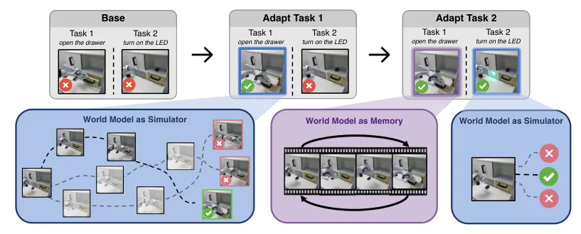
무슨 문제인가
π0 같은 generalist robot policy는 demonstration을 imitation learning으로 배워서 demonstration에 없던 과제는 잘 못함. RL로 보완하는 방법은 policy 가중치를 fine-tuning하거나, policy는 고정하고 입력 noise만 고르는 작은 steering module을 학습하는 것(DSRL)임. 과제가 하나씩 차례로 들어오면 두 방법 모두 새 과제를 배우는 동안 예전 과제 성능이 내려감(catastrophic forgetting). 예전 과제를 로봇에서 다시 돌리거나 궤적을 저장해 복습하면 줄일 수 있지만, 로봇 시간이 들거나 저장량이 과제 수만큼 늘어남.
어떻게 푸나
D2R(Dream to Remember)은 diffusion·flow policy를 고정하고, 상태와 언어 지시를 받아 policy에 넣을 noise의 Gaussian 분포를 내는 작은 steering module만 학습함. 실제 행동은 고정된 policy가 그 noise를 action chunk로 바꿔 만듦. 새 과제는 world model이 충분히 정확하면 world model 안의 상상 rollout에서 PPO로 배우고, 부정확하면 world model 대신 환경과 직접 상호작용하며 SAC로 배움. 그동안 고정된 world model은 예전 과제마다 저장해 둔 첫 관측에서 출발해, 이전 steering을 따라 장면을 상상으로 이어 만듦(imagined rollout). 이 상상 상태들에서 지금 steering의 noise 분포가 이전 steering(아직 조정하지 않은 과제는 원래 noise 분포)과 달라지면 KL penalty를 줌. 그래서 예전 과제는 첫 관측만 저장하면 되고 궤적 전체나 reward는 필요 없음.
결과
- LIBERO-90(시뮬레이션 조작 과제 90개 모음)에서 π0가 본 적 없는 과제 8개를 시뮬레이터 환경과 직접 상호작용하며 차례로 배움. 8개 평균 성공률이 고정된 π0의 10.4%에서 74.9%로 오르고, π0가 이미 fine-tuning된 LIBERO suite 4개의 성능은 시작보다 1.6퍼센트포인트 높게 끝남. 복습 없이 noise만 바꾸는 DSRL은 16.9%이고 suite 4개에서 30.8퍼센트포인트를 잃음.
- CALVIN(한 장면 안의 서랍·슬라이더·조명 조작 과제 모음)에서 과제 8개를 상상 속에서만 차례로 다듬으면 평균 성공률이 63.7%에서 74.8%로 오름. 같은 순서로 LoRA fine-tuning을 하면 11.7%로 내려감.
- 예전 궤적을 저장해 두고 복습하는 DSRL + replay KL과 LIBERO 성공률은 비슷함(73.9% 대 74.9%). 저장하는 양은 약 59,000 frame 대 약 400 frame임.
- 실제 Franka 로봇에서 과제 3개(서랍 열기, 슬라이더 왼쪽으로 옮기기, LED 켜기)를 상상 속에서만 차례로 배움. 과제당 20회 평가에서 base policy보다 평균 30퍼센트포인트 높은 성공률이 끝까지 유지되고, 복습 없는 DSRL은 15퍼센트포인트임.
한계
예전 과제마다 첫 관측은 저장해야 하고, 복습할 때마다 world model 계산이 듦. LIBERO에 쓴 world model(A2World)은 새 과제 학습용으로는 부정확했음: 같은 behavior cloning에서 실제 demonstration으로 배우면 74.9%, A2World가 다시 만든 장면으로 배우면 19.6%임. 실로봇 실험은 과제 3개뿐이고 비교 대상도 base policy와 DSRL뿐임.
누리랩 연구와의 연결
- world model을 policy 학습용 simulator가 아니라 예전 행동을 기억해 두는 용도로 쓴 사례임. robot memory와 continual VLA adaptation 연구에서 replay buffer 없는 비교 대상으로 쓸 수 있음.
- policy를 고정하고 noise만 고르는 steering은 test-time optimization 계열임. 과제가 늘어도 steering module 하나로 예전 과제를 유지하는 방법이라, 우리 VLA steering 실험에 복습 penalty를 더해 바로 시험해 볼 수 있음.
2
77점
Forward Dynamics Models
VLA
relevance 9/10
ICLR 양식 (추정)
Robotics (cs.RO)
미래 장면 예측 loss를 행동 feature로 역전파해 policy를 학습시키되, 실행할 때는 미래를 생성하지 않는 VLA 학습 구조 FDM을 만듦. 양팔 로봇 실제 과제 5개의 평균 성공률이 기존 VLA인 π0.5의 83%에서 96%로 오름.
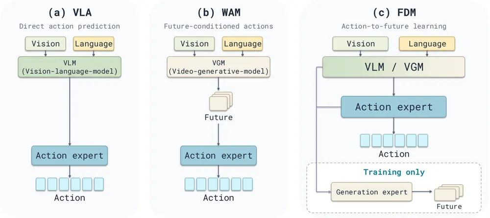
무슨 문제인가
VLA(vision-language-action) 모델은 현재 관측과 지시에서 바로 행동을 예측하므로, 행동 뒤에 장면이 어떻게 바뀌는지를 학습 신호로 쓰지 않음. WAM(world action model: video generative model 위에 행동 예측을 붙인 모델)은 미래 영상을 먼저 생성하고 그 영상에서 행동을 고르는 설계가 많음. 이 경우 미래 영상의 예측 오차가 행동으로 그대로 전달되고, 행동을 낼 때마다 영상 생성 계산이 듦. 미래 정보로 policy를 학습시키면서도 실행 때는 미래 예측에 기대지 않는 구조가 필요함.
어떻게 푸나
FDM(Forward Dynamics Models)의 입력은 현재 카메라 이미지와 과제 지시이고, 출력은 action chunk(한 번에 예측하는 연속 행동 묶음)임. action expert(행동을 만드는 transformer)는 현재 관측과 지시의 feature만 읽고 flow matching으로 action chunk를 만듦. 학습 때만 쓰는 generation expert는 action expert의 hidden state를 읽어 미래 이미지나 영상의 VAE latent를 예측함. 미래 예측 loss는 이 hidden state를 거쳐 action expert까지 역전파되므로, 실제 미래 장면이 행동을 만드는 feature를 학습시킴. 반대로 action expert는 미래 token을 직접이든 간접이든 읽지 못하게 attention을 막아 두었고, 실행 때는 generation expert를 빼고 행동만 생성함. π0.5에 generation expert를 붙인 FDM w/ VLM과, video generative model Wan2.2-5B에 action expert를 붙인 FDM w/ VGM 두 가지로 구현함.
결과
- 양팔 ARX-X5 로봇의 실제 과제 5개(서랍에 물건 넣기, 상자에 스카프와 꽃 넣기, 셔틀콕을 통에 넣기, 종이컵 쌓기, 블록 쌓기)를 과제당 20회 평가함. 평균 성공률은 FDM w/ VLM이 96%로 π0.5의 83%보다 높음. FDM w/ VGM은 83%로, 같은 구조에서 attention 방향만 반대인 FastWAM-Joint의 78%와 DreamZero(영상과 행동을 함께 예측하는 기존 WAM)의 71%보다 높음.
- 같은 로봇 과제 5개에서 generation expert가 행동 feature를 읽되 stop-gradient(값은 그대로 넘기고 gradient만 끊는 연산)를 건 판과 비교함. 평균 성공률이 VLM 판은 89%에서 96%로, VGM 판은 78%에서 83%로 오름. 행동만 학습한 판과 비교하면 각각 83%에서 96%, 66%에서 83%로 오름.
- LIBERO(시뮬레이션 조작 과제 40개를 Spatial·Object·Goal·Long 4개 묶음으로 나눈 benchmark)에서 FDM w/ VLM의 평균 성공률은 99.4%로 π0.5의 96.9%보다 높음. 가장 긴 과제 묶음인 LIBERO-Long은 92.4%에서 98.6%로 오름. FDM은 robot policy 사전학습 없이 학습했고 π0.5는 사전학습을 거침.
- H100 1장에서 action chunk 하나를 내는 시간은 FDM w/ VGM이 253.45 ms로, 미래 영상을 먼저 만드는 FastWAM-Joint의 446.55 ms보다 1.76배 빠름. FDM w/ VLM은 202.98 ms로 π0.5의 203.77 ms와 같은 수준임.
한계
실로봇 평가는 로봇 한 대의 과제 5개, 과제당 20회이고 과제마다 시연 147개로 학습함. FDM w/ VGM은 LIBERO(98.1% 대 98.5%)와 RoboTwin 2.0(양팔 조작 시뮬레이션 과제 50개, 89.23% 대 92.20%)에서 기존 WAM인 LingBot-VA보다 낮음. VLM 판은 학습 step 시간이 0.444초에서 0.631초로 42.1% 늘고, 원문에 코드 공개 주소는 없음.
누리랩 연구와의 연결
- world model 학습을 VLA 안에 보조 loss로만 넣는 방법임. VLA + world model 연구에서 미래 예측을 실행 경로에 넣을지, 학습 신호로만 쓸지 비교할 때 baseline으로 쓸 수 있음.
- 학습 뒤에도 남는 generation expert는 행동 feature에서 미래 장면을 예측함. 실행 중에 이 예측과 실제 관측을 비교해 failure detection에 쓸 수 있으나, 논문은 이 용도를 시험하지 않음.
3
76점
AlphaNIST: Emergent Assembly Skills from Binary Task Rewards
Manipulation
relevance 9/10
ICRA (comments 표기)
Artificial Intelligence (cs.AI)
조립이 끝났는지만 알려 주는 binary reward 하나로 RL policy 하나를 NIST 조립 보드의 20개 과제 전부에 대해 처음부터 학습함. demonstration이나 단계별 reward 없이 시뮬레이션 학습 성공률 98.2%에 이름.
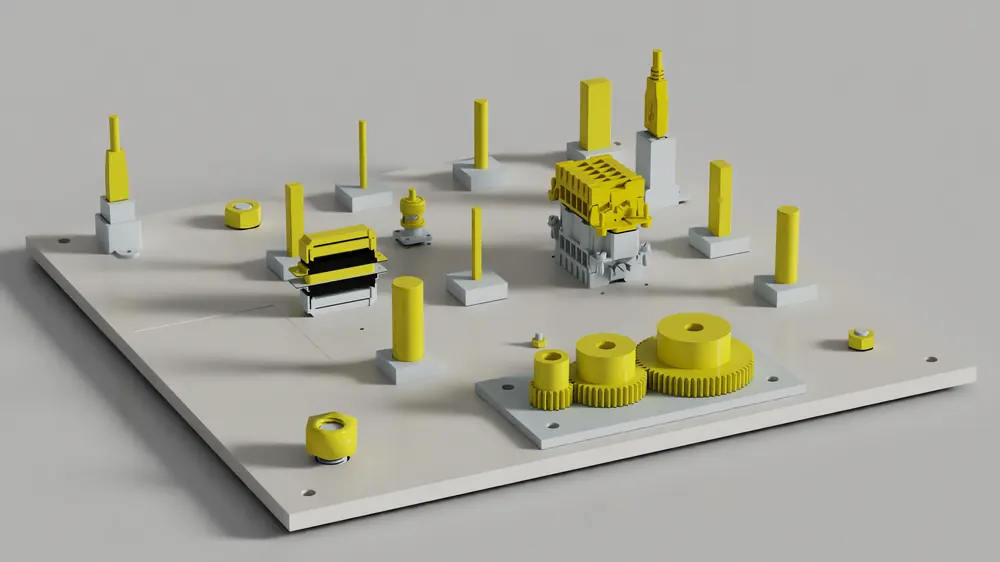
무슨 문제인가
NIST Assembly Task Board #1(ATB1)은 너트 조이기, 기어 맞물리기, 커넥터 꽂기, 핀 끼우기 같은 제조용 조립 과제 20개로 된 보드이고, 부품 지름이 4 mm까지 작고 결합면 틈새가 0인 경우도 있음. 기존 학습 방법은 demonstration, 과제 분해, 진행도에 따른 dense reward, 정해진 조립 순서, 이미 잡은 상태에서 시작하기 같은 사람의 지정에 기대어 일부 과제만 풀었음. 이전 연구 SGS(success-guided sampling)는 ATB1 과제를 RL로 하나씩 풀었지만, 과제마다 policy를 따로 학습하고 과제별 보조 reward를 썼음. 이 논문은 어떻게 조립할지를 지정하지 않고 성공 여부만 줘도 policy가 조립 방법을 스스로 찾는지를 물음.
어떻게 푸나
AlphaNIST는 policy 하나를 20개 과제 전부에 대해 PPO로 처음부터 학습함. reward는 부품이 완전히 조립된 자세에서 0.001 m 안으로 들어오면 1을 주고 episode를 끝내는 binary reward이고, 여기에 행동 크기·관절 속도·torque에 대한 control cost만 더함. 시작 상태는 미리 만들어 둔 저장소에서 고르는데, 부품이 놓인 상태, 잡은 상태, 옮기는 중, 끼우기 직전, 일부 조립된 상태가 섞여 있음(OmniReset 방식). 각 시작 상태의 최근 성공률 p를 기록해 √(p(1−p))에 비례하는 확률로 뽑으므로 성공률이 중간인 상태가 자주 뽑힘(SGS 방식). policy 입력은 부품·결합 대상·로봇의 표면 point cloud와 로봇 관절 상태이고 과제 번호는 주지 않음. 출력은 Franka Panda 7개 관절의 목표 위치 변화량과 gripper 명령(25 Hz)이며, Isaac Lab 시뮬레이션 환경을 최대 256K개까지 병렬로 돌림.
결과
- 64K 환경, 25K iteration 학습에서 20개 과제 평균 학습 성공률이 policy 하나로 98.2%이고, 과제별로 따로 학습한 policy 20개의 평균은 81.4%임. 따로 학습하면 M4 너트 조이기·4 mm 핀 끼우기·막대 끼우기가 0.3% 이하인데, 공유 policy는 모든 과제에서 98%를 넘음. 계산량은 410 GPU시간 대 16.1K GPU시간임.
- 같은 비교에서 끝단과 부품의 거리, 목표 방향 정렬에 대한 dense reward(계수 0.01)를 더하면 공유 policy가 더 나빠짐. 공유 policy 17.8%, 따로 학습한 policy 평균 78.3%임.
- 병렬 환경 수를 늘리면 binary reward의 평가 성공률이 1K 환경 38.6%, 8K 86.9%, 256K 97.4%로 오름. 256K에서 시작 상태를 균등하게 뽑으면 84.3%이고, dense reward를 쓰면 77.4%임.
- 부품 여러 쌍을 순서 지정 없이 모두 끼워야만 reward를 받는 설정에서 성공률은 1쌍 99%, 5쌍 92%, 10쌍 84%임. 쌍의 수마다 policy를 따로 학습하고 평가함.
한계
모든 결과가 시뮬레이션이고, policy 입력 point cloud도 시뮬레이터에서 얻은 값이라 실제 센서 오차·지연·접촉 모델 차이에 대한 검증은 없음. 공유 학습이 binary reward에서만 도움이 되는 이유(과제마다 목표가 같아서)는 저자의 해석이고 직접 보이지 않음. 순서 없는 다중 조립은 10쌍까지이고 보드 20개 전체로는 하지 못했으며, 코드는 리뷰 후 공개 예정임.
누리랩 연구와의 연결
- 놓고 다시 잡기, 보드 모서리에 대고 부품 돌리기 같은 recovery 동작이 reward 설계 없이 나온 사례임. failure recovery를 학습으로 얻는 연구에서 "성공 여부만 주는 RL + 다양한 시작 상태"를 비교 대상으로 둘 수 있음.
- 다중 조립에서 먼 부품을 미리 가까이 옮겨 두고 다른 조립을 끝낸 뒤 돌아오는 행동이 명시적 planner 없이 나옴. long-horizon planning과 skill chaining을 단일 RL policy로 대신할 수 있는지 볼 때 근거가 됨.
4
76점
PanTact: Teaching Whole-Body Dexterity with a Wearable Contact Interface
Manipulation
relevance 9/10
ICLR 양식 (추정)
Robotics (cs.RO)
사람이 팔뚝·무릎에 접촉 센서 패치를 차고 시연하면, policy가 몸이 어디서 언제 닿아야 하는지(contact goal)를 예측하고 휴머노이드 제어기가 알맞은 몸 표면으로 그 접촉을 만듦. 실제 Unitree G1이 팔로 물체를 통에 쓸어 넣고 다리로 캐비닛 문을 미는 과제에서 end-to-end 점수 90.63%를 냄.
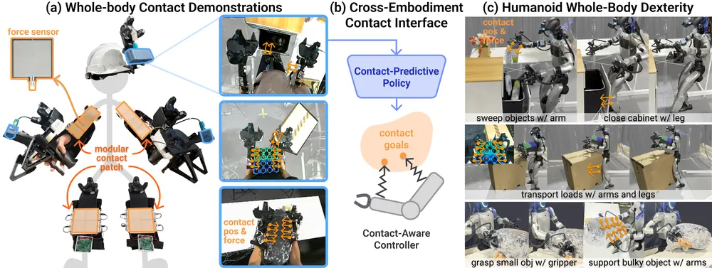
무슨 문제인가
휴머노이드는 팔·몸통·다리로도 물체를 다룰 수 있지만, loco-manipulation(걸으면서 하는 조작) 연구 대부분은 조작을 손으로만 하고 다른 신체 접촉은 피함. UMI(손에 쥐는 gripper로 로봇 없이 시연을 모으는 장치) 같은 기존 수집 장치는 손끝(end-effector) 궤적이나 관절 각도만 기록하고, 몸 어디가 언제 닿았는지는 기록하지 않음. 손끝 목표만 주면 팔뚝·무릎 접촉은 정해지지 않고, 사람 관절을 그대로 옮기면 체형 차이로 접촉 위치가 어긋남. 그래서 팔로 큰 물체를 끌어안거나 무릎으로 미는 동작을 사람 시연에서 로봇으로 옮기기 어려움.
어떻게 푸나
PanTact는 접촉의 위치와 시점을 사람과 로봇이 공유하는 정보로 쓰고, 어느 몸 표면으로 그 접촉을 만들지는 로봇이 정하게 함. 수집 장치는 머리 stereo 카메라와 양손 UMI gripper에 44×44 mm FSR(힘 감지 저항) 모듈을 이어 만든 패치를 팔뚝과 무릎에 더해, 센서마다 접촉 여부(0/1)와 3D 위치를 기록함. policy는 diffusion policy이고, 입력은 사람 몸 부분을 기하적으로 가린 egocentric 3D pointmap, 양 손목 카메라 영상, 손끝 자세와 gripper 폭임. 출력은 16 step 행동 묶음으로, 머리가 볼 3D 점, 양손 목표 자세와 gripper 폭, 센서마다의 contact goal(접촉 여부와 3D 위치)임. 제어기는 활성 contact goal만 따라가며, 어느 로봇 링크로 닿을지 지정하지 않고 가장 가까운 로봇 표면이 목표점에 닿게 함. 제어기는 상체 IK, 전신 IK 결과를 기존 motion tracker SONIC으로 실행하는 방식, PPO로 학습한 sparse contact tracker의 세 가지로 구현함.
결과
- Sweep-and-Stow(팔로 키 큰 물체를 조리대에서 통으로 쓸어 넣은 뒤 하체로 캐비닛 문을 미는 과제)에서 WBIK+SONIC 제어기의 end-to-end 점수가 16회 평균 90.63%임. 16회는 본 물체·처음 보는 물체를 1개·2개씩 놓은 네 조건에 4회씩 나눔. 시연은 팔뚝과 왼쪽 무릎으로 했지만 로봇은 손목·팔뚝·gripper 옆면으로 쓸고 무릎이나 발로 밀었음.
- Grasp-and-Embrace(작은 물체를 gripper로 집은 뒤 큰 물체를 두 팔로 안아 함께 옮기는 과제)에서 20회 성공률은 상체 IK 85%, sparse contact tracker 80%임. 손끝 궤적만 따라가는 Humanoid UMI는 팔 자세가 정해지지 않아 큰 물체를 받치지 못했다고 적었고, 그 수치는 본문 텍스트에서 확인 불가함.
- Carry-and-Push(상자를 안고 걸어가 바닥의 큰 상자를 하체로 20 cm 넘게 미는 과제)에서 WBIK+SONIC은 10회 중 90% 성공함.
- 시연 궤적을 시뮬레이션에서 다시 실행해 contact goal의 효과만 따로 잼. 전신 과제 20개 궤적에서 명령한 접촉점과 가장 가까운 로봇 표면 사이 거리(중앙값)가 WBIK+SONIC은 8.1 cm에서 6.3 cm로, sparse contact tracker는 4.5 cm에서 3.2 cm로 내림. 손끝 추적 오차는 각각 3.9 cm에서 4.3 cm, 7.1 cm에서 6.9 cm로 큰 차이가 없음.
한계
실로봇 평가는 과제 3개에 과제당 10~20회이고, 비교 방법(Humanoid UMI, Humanoid UMI++)의 실로봇 성공률은 본문 텍스트에서 확인 불가함. contact goal의 효과는 시연 재생 시뮬레이션의 거리 지표로만 따로 보였고, 실제 과제 성공에 접촉 예측이 얼마나 기여했는지는 분리되지 않음. 센서 패치는 팔뚝과 무릎에만 붙였으므로 등·몸통 접촉은 다루지 않음.
누리랩 연구와의 연결
- manipulation을 손끝 궤적 대신 몸이 어디서 언제 닿는가로 표현해 사람 시연을 로봇으로 옮긴 사례임. tactile perception과 contact-rich manipulation에서 contact goal을 policy의 행동 출력에 넣는 설계를 시험할 때 참고할 구조임.
- 실패 원인으로 접촉 부족(물체를 놓치거나 안고 가던 상자를 떨어뜨림)이 반복해 나옴. 예측한 contact goal과 실제 접촉의 차이를 failure detection 신호로 쓸 수 있는지 볼 만함.
5
75점
Fly-by-Code: Embodied Coding Agents for Aerial Manipulation with Active Visual and Physical Feedback
Manipulation
relevance 9/10
ICLR 양식 (추정)
Robotics (cs.RO)
LLM coding agent가 robot 프로그램을 실행한 뒤, 결과를 확인하거나 실패 원인을 가리는 진단 프로그램을 따로 써서 시뮬레이션에서 돌리게 함. 공중 조작(비행체에 팔을 단 로봇) 시뮬레이션 과제 6개의 최종 성공률이 31.7%에서 75.0%로 오름.
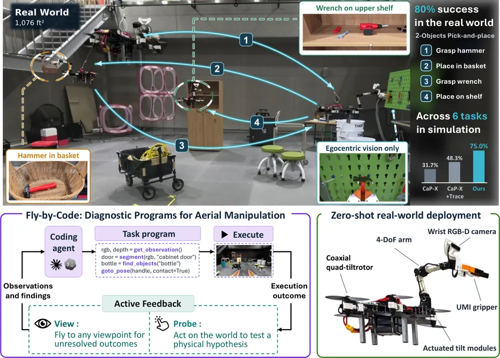
무슨 문제인가
embodied coding agent는 자연어 지시를 robot API를 부르는 Python 프로그램으로 바꾸고, 실행 log와 마지막 카메라 이미지를 보고 프로그램을 고침. 이 방식은 실행 결과만 보면 성공 여부와 실패 원인을 알 수 있다고 가정함. 공중 조작에서는 손목 카메라 하나뿐이라 물건을 놓은 결과가 시야 밖에 남는 경우가 많고, 비행 중 접촉이 불안정해 문이 안 열린 이유가 잡기 실패인지, 당기는 방향 문제인지, 기체 힘 부족인지 가릴 수 없음. 같은 log를 다시 읽어도 모으지 않은 관측이나 구별되지 않는 원인은 알아낼 수 없음.
어떻게 푸나
Fly-by-Code는 CaP-X(실행 log와 마지막 RGB 이미지로 프로그램을 고치는 기존 coding agent 구조) 위에 AF(Active Feedback) 단계를 넣음. 입력은 자연어 과제 지시이고, agent의 출력은 robot API를 부르는 Python 과제 프로그램임. 과제 프로그램을 실행해 점수를 기록한 뒤, agent는 확인되지 않은 결과와 가려지지 않은 실패 원인을 적고 이를 조사할 진단 프로그램을 같은 API로 새로 씀. View는 확인할 곳이 보이는 시점으로 날아가 사진과 물체 위치를 받고, Probe는 접촉 위치를 바꿔 밀어 보거나 짐을 들어 보는 식으로 물리 반응을 잼. 진단은 과제가 끝난 상태에서 시뮬레이션으로 돌리고 점수에 넣지 않으며, 결과를 받은 agent는 완료 선언(FINISH)과 프로그램 다시 쓰기(REGENERATE) 중 하나를 고름. 시뮬레이션에서 다듬은 과제 프로그램은 같은 API를 갖춘 실제 기체에서 코드 수정 없이 실행함.
결과
- Isaac Lab 공중 조작 과제 6개(과제당 10회, 첫 실행 뒤 최대 10번 수정)의 최종 성공률이 AF 75.0%(45/60)임. 실행 log와 마지막 이미지만 쓰는 CaP-X는 31.7%, 동작별 실행 기록과 keyframe을 더 준 CaP-X+Trace는 48.3%임. 무게 한도를 알려 주지 않은 운반 과제 Payload에서는 100% 대 30%, 60%임.
- 실제로는 실패인데 완료를 선언한 횟수가 60회 중 AF 5회, CaP-X 25회, CaP-X+Trace 19회임. 완료 선언의 precision은 각각 90.0%, 43.2%, 60.4%임.
- 전체 영상과 log를 정리 없이 모두 주는 No harness 조건은 Cabinet(문 두 짝을 열고 병을 꺼내 매달린 바구니에 넣기)에서 20~50%로 AF의 절반 이하임. 평가한 모델·agent 인터페이스 조합 모두에서 AF 성공률이 CaP-X와 같거나 높음.
- 실제 기체(8-rotor tiltrotor, 4자유도 팔, 손목 RGB-D 카메라)에서 시뮬레이션에서 만든 프로그램을 수정 없이 돌림. 망치·렌치 옮기기는 5회 중 4회, Cabinet은 5회 중 3회 성공했고 한 번 실행에 약 8~9분이 걸림.
한계
실로봇 평가는 과제 2개에 5회씩이고, Probe 같은 물리 시험은 시뮬레이션에서만 해서 실제 환경에서 직접 시험할 때의 안전은 다루지 않음. 진단도 onboard 인식 오차와 닿을 수 없는 시점의 영향을 받고, 진단마다 모델 추론과 로봇 동작 시간이 더 듦. 실제 기체의 위치 추정은 motion capture(OptiTrack)에 기대고, 성능도 아래 단계의 motion planning과 비행 제어기에 크게 기댐.
누리랩 연구와의 연결
- 실패 뒤 시점을 바꿔 결과를 확인하는 View와 직접 건드려 원인을 가리는 Probe는 failure detection·diagnosis와 active perception 주제에 바로 해당함. 실행 뒤 진단 단계를 따로 두고 점수와 분리하는 설계는 VLA 실패 진단 실험에도 옮겨 볼 수 있음.
- 진단으로 잰 값(접촉 위치별 회전량, 들 수 없는 무게)을 다음 프로그램에 넣는 과정은 language feedback 기반 수정과 test-time 수정의 구체적 사례로 비교 대상이 됨.
6
75점
RESCUE: Is This Alarm Worth Acting On? Counterfactual Evaluation of VLA Runtime Monitors
VLA
relevance 9/10
ICRA·IROS·RA-L 계열 양식 (추정)
Robotics (cs.RO)
VLA 실행 중 실패를 알리는 runtime monitor를 탐지 정확도가 아니라, 경보를 받고 개입했을 때 과제 완료 비용이 줄어드는지로 평가하는 RESCUE를 제안함. 기존 탐지·시점 지표는 실제 monitor를 75건 중 61건에서 좋다고 판정했지만, 개입하지 않는 경우보다 비용이 낮다고 확인된 경우는 15건 중 0건이었음.
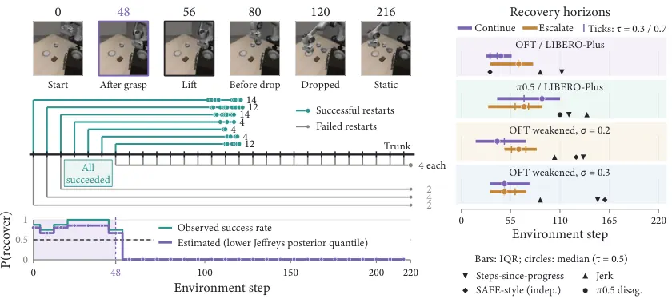
무슨 문제인가
VLA용 runtime failure monitor는 보통 실패와 성공 실행을 얼마나 잘 가르는지(AUROC 등)와 얼마나 일찍 경보하는지로 고름. 하지만 정확한 경보도 복구할 수 없게 된 뒤에 오면 쓸모가 없고, 잘못된 경보는 성공했을 실행을 멈춰 비용을 늘림. 같은 로봇 상태라도 그대로 이어 가기, 복구 동작, 멈추고 리셋 중 무엇을 할 수 있느냐에 따라 개입의 가치가 달라짐. 기존 평가는 이 개입 쪽 조건과 실패 빈도·개입 비용을 함께 보지 않았음.
어떻게 푸나
RESCUE(Recoverability Evaluation of Stopping Criteria Under Execution)는 기존 monitor를 개입 규칙으로 보고 평가하는 counterfactual 평가 절차임. 정상 실행(trunk) 중 action chunk 경계마다 시뮬레이터와 policy 상태 전체를 저장하고, 저장 시점마다 상태를 되살려 두 개입으로 각각 여러 번 다시 실행함. CONTINUE는 policy를 그대로 이어 가고, RECOVER는 멈춤, 쥐고 있으면 내리고 놓기, 팔 빼기로 된 20~30 step 고정 스크립트 뒤에 policy를 재개함. 성공 횟수에서 Jeffreys 사후분포의 25% 분위수로 성공 확률을 낮게 잡아 추정하고, 이 값이 기준 τ(기본 0.5) 이상인 마지막 시점을 recoverability horizon으로 정의함. 이어 리셋 1회를 비용 1로 두고 실패 빈도·경보 시점·오경보율로 경보 때 멈추고 리셋하는 경우와 개입하지 않는 경우의 완료당 기대 비용을 비교함. 멈추고 리셋하는 경우는 손익분기 오경보율을 일반 실행 로그만으로 계산하는 closed-form 식을 유도함.
결과
- OpenVLA-OFT가 LIBERO-Plus(LIBERO 조작 과제에 카메라·초기 상태·센서 noise 같은 교란을 더한 시뮬레이션 benchmark)에서 실패한 66개 실행을 봄. CONTINUE만으로 복구 가능한 시점이 하나라도 있는 실행은 14개, RECOVER로는 33개, 둘을 합치면 34개임. 반면 실행 noise로 성능을 낮춘 OpenVLA-OFT 조건(σ=0.2)에서는 RECOVER가 기준을 넘는 실패 수를 51개 중 50개에서 43개로 줄임.
- 모든 실패를 즉시 잡는 이상적인 탐지기도, 멈추고 리셋하는 개입에서는 오경보율이 OpenVLA-OFT 2.78~3.32%, π0.5 2.02~2.39%를 넘으면 개입하지 않는 쪽보다 비용이 커짐.
- 실제 steps-since-progress monitor(손끝이 0.01 m 넘게 움직인 뒤 지난 chunk 수를 세는 규칙)는 실패의 87.9%를 잡지만 평균 133 step에야 경보함. 실제 오경보율 7.25%가 손익분기 1.01%보다 높아, 완료당 비용이 리셋 0.0835회분 늘어남(95% CI 0.0294~0.1392).
- AUROC 3종, AUCPDT, 경보 시점 기준의 다섯 지표는 실제 monitor를 75건 중 61건에서 기준보다 좋다고 판정함. 개입 비용으로 보면 개입하지 않는 경우보다 낫다고 판정된 경우는 15건 중 0건임. 경보를 리셋 대신 RECOVER로 보내면 초과 비용이 3.1~13.4분의 1로 줄지만, 주 조건 두 곳에서 비용이 더 낮다고 확인된 monitor는 여전히 없음.
한계
실험은 모두 MuJoCo 시뮬레이션의 LIBERO/LIBERO-Plus이고, 실패 262개가 전부 220 step timeout임. 그래서 실행 길이만 세는 점수도 AUROC 1.000이 나와, 기존 탐지 지표가 실패 정보보다 실행 길이를 재고 있을 수 있음. 개입은 CONTINUE와 고정 스크립트 RECOVER 둘뿐이고, 학습된 복구 정책이나 실로봇의 접촉·파손 비용은 다루지 않음. 비용 모델과 branch noise는 실제 배포에서 잰 값이 아니라 저자가 정한 값임.
누리랩 연구와의 연결
- 우리 failure detection/recovery 연구에서 AUROC만 보고하지 않고, 경보 뒤 개입의 완료 비용과 recoverability horizon을 함께 보고하는 평가 틀로 가져다 쓸 수 있음.
- 시뮬레이터 상태를 저장·복원해 같은 시점에서 여러 개입을 비교하는 방식은, counterfactual reasoning 연구에서 이 시점에 다른 행동을 했다면 성공했는지의 정답 라벨을 만드는 도구로 쓸 수 있음.
7
74점
LAPT-Scale: Scaling Embodied Policies with Latent Action Pre-Training on Human Videos
VLA
relevance 10/10
CoRL 2026 채택
Computer Vision and Pattern Recognition (cs.CV)
사람이 머리에 카메라를 달고 찍은 1인칭 영상(egocentric video)에서 앞뒤 frame 변화를 연속 latent action으로 바꿔 VLA pre-training의 정답으로 씀. 이 정답을 붙인 사람 영상을 1K시간에서 5K시간으로 늘리자 실로봇 과제 3개 평균 성공률이 63.3%에서 85.0%로 오름.
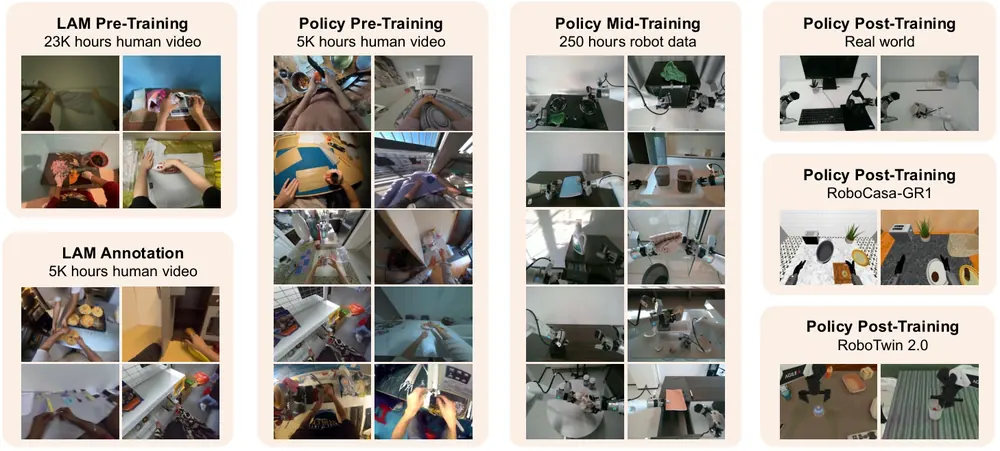
무슨 문제인가
VLA를 학습시킬 로봇 행동 데이터는 실제 로봇이나 시뮬레이터로 모아야 해서 비싸고, 1인칭 사람 영상은 양이 많지만 로봇 행동 label이 없음. 손 동작을 추정해 pseudo-action을 만드는 방법(VITRA 등)은 추정 오차가 label noise가 되어, 영상을 늘려도 policy가 좋아진다는 보장이 없음. 연속된 두 frame 사이 변화를 학습된 벡터로 뽑는 LAM(Latent Action Model)은 label이 필요 없지만, 대부분 이산 codebook(VQ, vector quantization)을 써서 작은 손 움직임 차이를 구분하지 못함. 또 pixel 복원 loss만 쓰면 화면 대부분인 정지된 배경의 오차가 loss를 좌우해서 손과 물체의 접촉 변화가 덜 반영됨.
어떻게 푸나
LAPT-Scale-LAM은 인접한 두 frame을 받아 32차원 연속 latent action을 내는 VAE 구조 encoder와, 현재 frame과 이 latent로 다음 frame을 예측하는 decoder로 이루어짐. decoder 출력은 pixel MSE 외에 LPIPS(사람 눈 기준 이미지 유사도), 고정된 DINOv2 특징, 고정된 RAFT로 구한 optical flow까지 실제 다음 frame과 맞추도록 학습함. LAM은 사람 영상 23.3K시간으로 학습하고, 손과 물체 접촉이 뚜렷한 5.1K시간을 골라 고정된 encoder로 latent action label을 붙임. LAPT-Scale-Policy는 VLM backbone이 이미지와 텍스트를 encoding하고 flow matching action expert가 행동 묶음(action chunk)을 내는 VLA임. 같은 action expert로 1단계는 사람 영상의 latent action 묶음을, 2단계는 목표 로봇 데이터 250시간의 실제 로봇 행동 묶음을 예측하고, 3단계는 과제별 데이터로 post-training함. 추론할 때 policy는 로봇 행동을 직접 내고, latent action은 1단계 학습 정답으로만 쓰임.
결과
- 실로봇 과제 3개(AgiBot G1 로봇, 마우스패드·헤드폰·컵, 과제당 20회)의 평균 성공률임. 1단계 사람 영상을 1K·3K·5K시간으로 늘리자 63.3%·80.0%·85.0%로 오름. 같은 조건에서 손 동작 pseudo-action은 3K시간 75.0% 뒤 5K시간 55.0%로 내려가고, 복원 loss로 학습한 기존 LAM인 DreamDojo LAM은 5K시간 76.7%임.
- 같은 실로봇 과제에서 1단계를 빼면 평균 성공률이 55.0%이고, 계산량을 맞추려고 2단계를 더 길게 학습해도 53.3%임. 사람 영상 5K시간으로 1단계를 거친 policy는 85.0%임.
- 시뮬레이션에서는 가장 강한 baseline과 차이가 작음. RoboTwin 2.0(양팔 조작 benchmark, Hard는 물체 위치와 장면 배치를 바꿈) Easy/Hard 성공률이 90.0%/89.3%이고, 같은 policy 구조를 쓰는 JoyAI-RA는 88.6%/87.2%임. RoboCasa-GR1(휴머노이드 탁자 조작 과제 24개)에서는 64.8% 대 63.2%임.
- 더 어려운 실로봇 과제 4개(종이공 버리기, 펜·지우개 집기, 책 꽂기, 과제당 200개 demonstration)에서 학습 때와 같은 조건 성공률은 π0.5와 같은 85.0%임. 물체 위치·조명·배경을 바꾼 조건에서는 70.0~75.0%를 유지하고, π0.5는 40.0~50.0%임.
한계
실로봇 실험은 로봇 1종에 과제 7개, 조건당 20회이고 scaling 곡선도 1K·3K·5K 세 점뿐이라 성공률 차이의 정밀도가 낮음. 손 동작 pseudo-action이 5K시간에서 내려간 이유를 저자는 label noise로 보지만 직접 재지 않음. latent action이 로봇 관절과 대응된다는 보장이 없어 목표 로봇 데이터 250시간으로 맞추는 단계가 꼭 필요하고, 코드 공개 여부는 본문에서 확인 불가함.
누리랩 연구와의 연결
- 로봇 행동 label 없는 사람 영상으로 VLA를 pre-training하는 방법임. 1단계 제거 대조와 영상 시간별 실로봇 성공률은 우리 VLA 학습에 사람 영상을 넣을지 판단할 때 비교 기준이 됨.
- 한 영상의 latent action을 다른 장면에 넣으면 장면 배치는 유지되고 움직임만 바뀌는 실험(본문 그림 6)이 있음. latent action을 행동 입력으로 받는 world model이나 counterfactual 행동 생성 연구에서 행동 표현 후보로 쓸 수 있음.
8
74점
LeWAM: End-to-End World and Action Modeling with JEPAs
World Model
relevance 9/10
ICLR 양식 (추정)
Robotics (cs.RO)
JEPA world model 하나가 다음 latent 상태 예측과 행동 생성(flow matching)을 함께 학습해, 같은 모델이 행동 후보를 내고 그 결과를 예측해 계획을 다듬게 함. 시뮬레이션 10개 과제의 goal 도달 평균 성공률을 LeWM(CEM 계획)의 50.9%에서 93.5%로 올림.
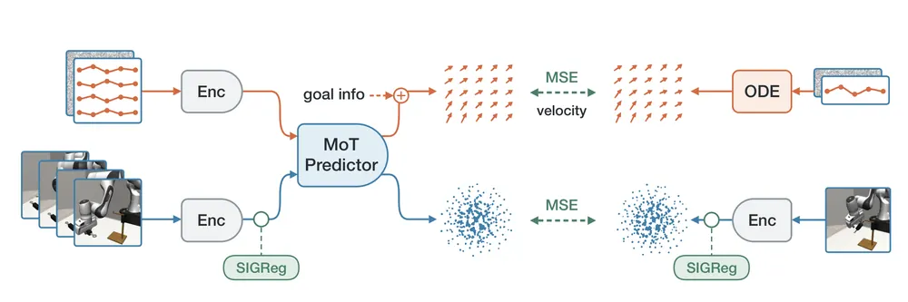
무슨 문제인가
JEPA(joint-embedding predictive architecture: 미래를 pixel로 복원하지 않고 latent 공간에서 예측하는 구조) world model은 행동을 넣으면 결과 latent를 예측하지만, 행동을 고르는 일은 따로 맡김. 보통 CEM(cross-entropy method: 넓은 Gaussian에서 행동열을 뽑고 비용이 낮은 쪽으로 분포를 좁혀 가는 탐색)으로 계획하는데, 행동 차원과 horizon이 커질수록 rollout이 많이 듦. 접촉이 생기면 비슷한 행동도 결과가 크게 달라져서, 넓게 뽑은 후보 중 쓸 만한 것을 찾기가 더 어려움. 고정한 JEPA feature 위에 행동 예측기를 따로 학습하는 방법은 행동 supervision이 시각 표현 학습에 반영되지 않음.
어떻게 푸나
LeWAM은 ResNet-18 encoder와 MoT(Mixture-of-Transformers: 분기마다 projection은 따로 두고 self-attention만 공유하는 구조) predictor를 reward 없는 offline 궤적으로 함께 학습함. 상태 분기는 최근 latent 2개와 실제 행동 5개를 받아 5 step 뒤 latent를 예측하고, 행동 분기는 noise 섞인 10 step 행동 묶음과 goal 이미지 latent를 받아 flow matching velocity를 예측함. 두 loss에 SIGReg(latent 분포를 isotropic Gaussian에 가깝게 맞추는 정규화)를 더해 latent가 한 점으로 모이는 collapse를 막음. 계획할 때는 행동 분기로 후보 행동 묶음을 여러 개 뽑고, 상태 분기로 그 결과 latent를 이어 예측해 후보 계획을 만듦. 이어 마지막 예측 latent와 goal latent의 MSE가 줄도록 고정된 dynamics를 거친 gradient로 행동열을 고치고, 비용이 가장 낮은 계획의 처음 5개 행동만 실행한 뒤 다시 계획함. goal 없이 쓸 때는 행동 분기에서 바로 행동 묶음을 뽑아 실행함.
결과
- navigation과 조작 과제 10개(Two-Room, PointMaze, Push-T, Cube, ToolHang, Transport 등 시뮬레이션)에서 대부분 25 step 뒤 장면을 goal 이미지로 주고 행동 50개 안에 도달하는지 잼. 평균 성공률은 LeWAM 93.5%, LeWM(CEM) 50.9%임. 접촉이 많은 과제들의 평균은 28.6%에서 89.7%로 오르고, ToolHang은 35.4%에서 94.7%, Transport는 2.8%에서 83.3%로 오름.
- goal을 100 step 뒤로 멀리 둔 4개 과제(Push-T, Cube, Scene, Puzzle)의 평균 성공률이 LeWM 10.9%에서 LeWAM 46.2%로 오름. 같은 4개 과제에서 초당 계획 수는 LeWM(CEM) 1.62회에서 52.50회로 32.3배 많아짐.
- 실로봇 팔(reBot B601-DM) 과제 3개(T 블록 집어 놓기, T 블록 밀기, 테이프 쌓기)를 방법마다 30회씩 시켜 goal 없이 policy로 바로 실행함. 평균 성공률은 LeWAM 33.3%, Diffusion Policy 38.9%, π0.5 28.9%로 LeWAM이 가장 높지는 않음. 행동 묶음 하나를 내는 계산량은 LeWAM 270.2 GFLOPs, π0.5 3603.6 GFLOPs임.
한계
가장 좋은 결과인 goal 도달 계획은 시뮬레이션에서만 보였고, 실로봇에서는 계획 없이 policy만 실행해 Diffusion Policy보다 평균 성공률이 낮음. 모델은 과제와 로봇마다 따로 학습하므로 새 물체·카메라 시점·로봇으로 옮겨지는지는 시험하지 않음. 접촉이 많은 과제에서 학습된 행동 후보가 왜 계획을 돕는지에 대한 설명은 저자 스스로 엄밀히 검증하지 않은 heuristic이라고 적음.
누리랩 연구와의 연결
- policy가 행동 후보를 내고 world model이 결과를 예측해 고르고 고치는 test-time planning 구조임. VLA 행동 후보를 world model로 평가·수정하는 test-time optimization 연구에서 작은 규모 비교 대상으로 쓸 수 있음.
- goal latent와의 거리를 gradient로 줄여 행동을 고치는 절차는, 실패 뒤 목표 상태로 돌아가는 recovery 행동을 찾는 데 적용해 볼 수 있음.
9
73점
VLMs are Native Action Models: Unleashing the Manipulation Capabilities of VLMs with Explicit Action-Space Grounding
VLA
relevance 9/10
Robotics (cs.RO)
TCP(gripper 끝 기준점) 중심 좌표축을 손목 카메라 영상에 그려 넣고 행동을 정해진 텍스트 형식으로 쓰게 하면, 로봇 행동 학습이 없는 VLM도 바로 조작 행동을 낼 수 있음을 보임. Qwen-3.8-27B가 demonstration 없이 쉬운 실로봇 과제 6개에서 평균 79.4%를 냈고, π0.5가 이 수준에 오르려면 과제당 demonstration 약 30개가 필요했음.
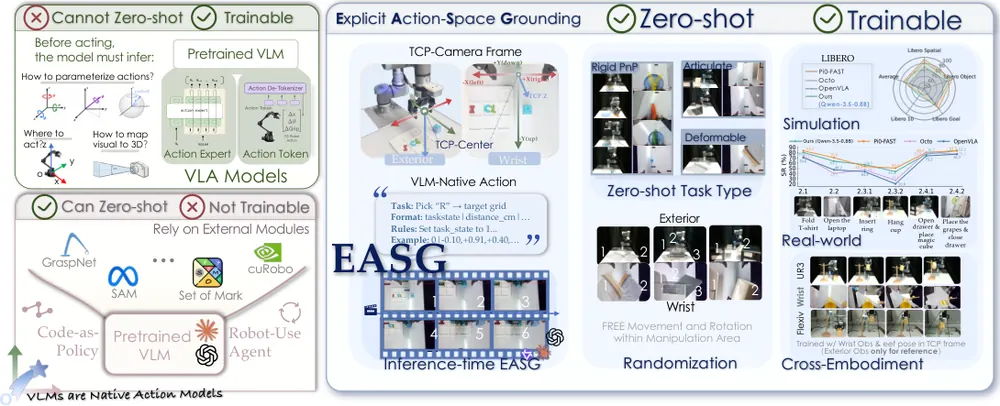
무슨 문제인가
VLA는 action token이나 action head를 새로 붙이므로, 행동이 어떤 좌표계에서 어떤 단위로 표현되는지를 로봇 데이터에서 배워야 함. 그래서 사전학습 VLM이 가진 공간 추론 능력을 로봇 데이터 학습 전에는 쓸 수 없고, 새 로봇·과제마다 demonstration이 필요함. 반대로 Code as Policies나 VoxPoser처럼 VLM이 중간 표현을 내고 외부 planner·제어기가 실행하는 방법은 zero-shot이 되지만, 전체를 로봇 데이터로 end-to-end fine-tuning할 수 없음. 저자는 행동 공간을 VLM이 알아볼 수 있게 보여 주면 한 VLM이 zero-shot과 fine-tuning을 둘 다 할 수 있는지를 물음.
어떻게 푸나
EASG(Explicit Action-Space Grounding)는 매 control step마다 현재 TCP를 원점으로 하는 행동 좌표계를 정하고, 카메라 보정값으로 그 x·y·z축을 손목 카메라 영상 위에 그려 넣음. RGB-D 깊이로 TCP에서 접근 방향(z축)으로 가장 가까운 표면까지 거리를 재서 prompt에 숫자로 넣고, 축 방향·단위·출력 형식도 prompt에 글로 적음. VLM은 영상과 언어 지시를 보고 완료 여부, 이동 방향 단위벡터와 거리(cm), 회전축과 각도(도), gripper 값을 정해진 순서로 쓴 텍스트 한 줄을 냄. 이 증분을 robot base 좌표계로 바꾸고 inverse kinematics로 관절 명령을 만들어 실행한 뒤, 다시 관측해 반복함. fine-tuning은 같은 텍스트 형식으로 바꾼 demonstration에 일반 언어모델 cross-entropy loss를 써서 함. 출력이 정해진 형식을 벗어나지 않게 문법에 맞는 token만 허용하는 grammar-constrained decoding(GCD)을 씀.
결과
- UR3 팔로 하는 쉬운 실로봇 과제 6개(오이·블록 집기, 바나나를 접시에 놓기, 노트북 덮개 내리기, 서랍 밀어 넣기, 수건 접기)를 과제당 30회 시험함. demonstration 없이 Qwen-3.8-27B의 평균 성공률이 79.4%임. 같은 과제를 과제당 demonstration 30개로 fine-tuning한 π0.5는 76.1%, 50개로는 96.7%임.
- 처음 보는 물체 5개로 바꾸고 위치·자세·색을 무작위로 바꾸면 EASG zero-shot은 77.3%를 유지함. demonstration 50개로 fine-tuning한 π0.5는 96.7%에서 40.2%로 내림.
- 영상에 그린 TCP 좌표축이나 깊이 거리 정보 중 하나만 빼도 zero-shot 평균 성공률이 79.4%에서 0%로 내림. memory는 둔 채 VLM의 thinking을 끄면 11.7%로 내림.
- 어려운 실로봇 과제 6개(T셔츠 접기, 컵 걸기, 링 끼우기, 서랍과 물체를 함께 다루는 긴 과제 등)를 과제당 demonstration 30개로 fine-tuning함. 평균 성공률은 67.2%로 π0-FAST 70.0%와 비슷하고 OpenVLA 55.0%, Octo 57.2%보다 높음. 같은 checkpoint를 추가 학습 없이 Flexiv 팔에 옮기면 UR3의 63.9%와 비슷한 62.2%를 냄.
한계
zero-shot은 쉬운 과제 6개에서만 됐고, 어려운 과제 6개에서는 zero-shot이 대체로 실패했다고 저자도 적음. zero-shot 성능은 27B급 VLM의 thinking, RGB-D 깊이, 카메라 보정에 기대고, 좌표축 그림과 깊이 거리 중 하나만 빠져도 0%가 됨. 매 step 대형 VLM이 텍스트를 생성하는데 실행 속도는 본문에서 확인 불가하고, 실로봇 실험은 한 작업 공간의 과제 12개임.
누리랩 연구와의 연결
- VLA에 action head를 붙이지 않고 VLM 텍스트 출력만으로 조작하게 한 사례라, 언어 추론과 행동을 같은 출력 공간에 두는 VLA 설계를 비교할 때 기준이 됨. thinking을 켜면 79.4%, 끄면 11.7%인 결과는 test-time reasoning이 조작 성공률에 크게 영향을 준다는 근거임.
- 행동을 텍스트 한 줄로 내므로, 실패 직후 언어 피드백을 prompt에 넣어 다음 행동을 고치는 language feedback 기반 recovery 실험을 바로 해볼 수 있음.
10
73점
Beyond Successful Robot Demonstrations: Learning from Human Interactions and Modeling Failure Dynamics
World Model
relevance 9/10
CoRL 양식 (추정)
Robotics (cs.RO)
성공 시연 위주로 학습한 world model이 잘못된 행동의 결과를 잘 예측하지 못하는 문제를, 사람 손 영상 학습과 행동을 일부러 바꾼 조건에서의 GRPO 후처리로 줄인 HF-WM을 만듦. 실패한 실행 100개에서 생성 영상으로 다시 추정한 행동과 입력 행동의 차이가 가장 좋은 기존 모델 OSCAR의 0.712에서 0.336으로 줄어듦.
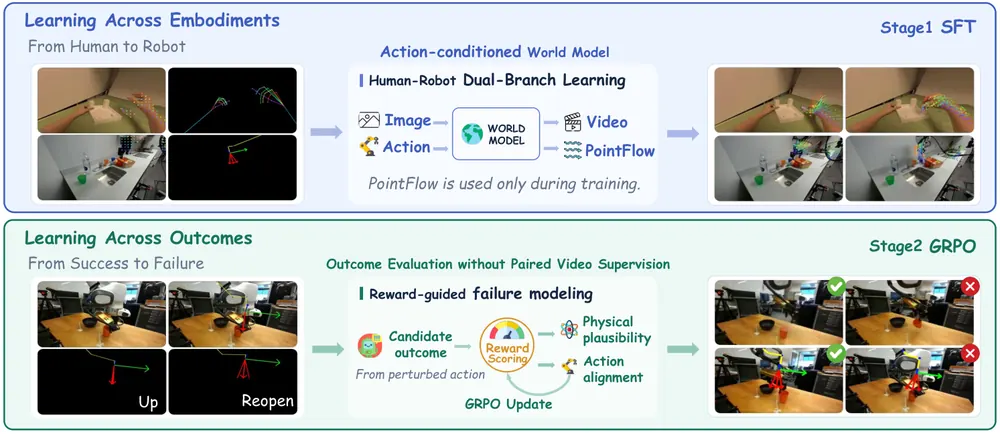
무슨 문제인가
action-conditioned world model(현재 영상과 로봇 행동을 받아 이후 영상을 생성하는 모델)은 policy 평가와 RL에 쓰이지만, 학습할 로봇 데이터의 양과 다양성이 부족함. 사람 1인칭 영상은 상호작용이 다양하지만 손과 로봇 팔의 모양이 다르고 카메라가 계속 흔들림. 또 로봇 데이터셋은 대부분 성공 시연이라, 잘못된 행동을 넣었을 때 물체가 어떻게 되는지를 world model이 거의 배우지 못함. 실제 실패 영상이 없으니 실패 장면을 지도학습으로 직접 가르칠 수도 없음.
어떻게 푸나
HF-WM은 언어·영상·행동을 함께 다루는 world model인 Cosmos 3를 두 단계로 fine-tuning함. 1단계는 로봇 궤적 약 45K개와 사람 손 궤적 83K개를 OSCAR의 2D skeleton 표현(손과 로봇 팔을 같은 2D 관절 그림으로 나타낸 행동 표현)으로 맞춰 함께 학습함. 이때 보조 branch가 영상 중간 feature에서 pointflow(영상 속 점들의 추적 궤적)를 예측함. pointflow 정답은 깊이 추정과 카메라 파라미터로 카메라 움직임 성분을 빼서 손과 물체의 움직임만 남긴 궤적이고, 이 branch는 학습에만 쓰여 추론 계산은 늘지 않음. 2단계는 성공 시연의 행동에서 그리퍼 개폐 시점이나 end-effector 자세를 일부러 바꾼 행동을 만들고, 같은 행동 조건에서 후보 영상 4개를 생성함. 후보는 행동 일치 점수 모델과 VLM 물리 점검표의 reward(가중치 0.4와 0.6)를 받고, GRPO(같은 조건의 후보끼리 reward를 상대 비교해 모델을 고치는 RL 방법)로 모델이 업데이트됨.
결과
- 평가는 DROID(실제 Franka 로봇 조작 데이터셋)에서 학습에 쓰지 않은 성공 궤적 100개와 실제 로봇 실행에서 모은 실패 궤적 100개로 함. 생성 영상과 실제 영상의 분포 거리 FVD(낮을수록 좋음)는 HF-WM이 14.449로, 기존 모델 중 가장 낮은 Kinema4D의 30.511보다 낮음.
- Franka 전용 inverse dynamics model로 생성 영상에서 행동을 다시 추정해 입력 행동과 비교한 오차(IDM, 낮을수록 좋음)를 봄. 실패 궤적에서 HF-WM은 0.336, OSCAR는 0.712이고, 성공 궤적에서는 0.328 대 0.445임. 비교한 기존 모델 6개는 모두 실패 궤적에서 오차가 더 큼.
- 2단계 GRPO를 거치면 실패 궤적의 IDM 오차가 0.376에서 0.336으로 줄어듦. 행동을 바꾸지 않고 원래 행동으로만 GRPO를 한 판은 0.374여서, 줄어든 몫 대부분은 바꾼 행동으로 학습한 데서 나옴.
- RoboArena(여러 기관이 실제 로봇으로 generalist policy를 평가하는 공개 순위표)의 policy 6개를 같은 실제 실행 90건씩으로 비교함. HF-WM 생성 영상을 GPT-5가 판정해 얻은 성공률과 실제 성공률의 Pearson 상관은 0.983, 평균 절대 차이는 2.41퍼센트포인트임.
한계
생성한 실패 장면이 실제 물리 결과와 맞는지는 실패 궤적 100개의 영상 지표로만 확인했고, policy 평가의 상관계수는 policy 6개의 성공률로 계산한 값임. 생성 영상의 성공 판정은 GPT-5, 물리 타당성 reward는 VLM의 점검표 판정에 기댐. LIBERO-90(시뮬레이션 조작 과제 90개)에서 HF-WM으로 π0.5의 후보 행동 4개 중 하나를 고르면 성공률이 27.8%에서 30.0%로만 오르고, 원문에 코드 주소는 없음.
누리랩 연구와의 연결
- 행동을 일부러 바꿔 실패 장면을 만들고 그 결과를 reward로 채점하는 방식은, 실패 데이터 없이 failure detection/recovery용 world model을 학습할 때 가져다 쓸 수 있음. 그리퍼를 다시 열거나 팔을 위로 드는 행동의 결과를 예측하므로 counterfactual reasoning 연구와도 이어짐.
- 부록에 world model로 VLA 후보 행동의 결과를 미리 생성해 보고 고르는 실험이 있어, test-time optimization 연구의 비교 대상으로 쓸 수 있음.
11
72점
OGPO: Offline Goal-conditioned Policy Optimization for Recoverable Vision-Language-Action Models
VLA
relevance 9/10
NeurIPS 2026 채택
Artificial Intelligence (cs.AI)
VLA를 추가 환경 상호작용 없이 offline 데이터만으로 post-training하면서, 궤적을 gripper 상태가 바뀌는 시점으로 나눠 구간별 목표 달성 reward를 만들고 advantage가 큰 행동을 더 따라 하게 함. 소량 demonstration으로 학습한 π0.5의 LIBERO 평균 성공률을 77.1%에서 97.1%로 올려 online PPO의 98.0%에 가까워짐.
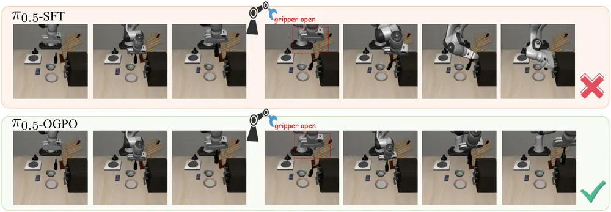
무슨 문제인가
VLA post-training은 대부분 supervised fine-tuning(SFT)으로 demonstration의 행동을 step마다 그대로 따라 하게 학습함. 그래서 실행이 demonstration 궤적에서 벗어나면 과제 진행 상태로 돌아가는 법을 배운 적이 없어 오류가 쌓임. PPO·GRPO 같은 online RL은 과제 reward로 이를 보완하지만, 환경 rollout 비용이 커서 실로봇에 늘려 쓰기 어려움. 저자는 추가 상호작용 없이 이미 모은 offline 데이터만으로 이 복구 능력을 배울 수 있는지를 물음.
어떻게 푸나
OGPO(Offline Goal-conditioned Policy Optimization)는 먼저 각 궤적을 gripper 명령이 open과 close 사이에서 바뀌는 시점으로 나누고, 구간마다 잡기·옮기기·놓기 같은 국소 목표를 규칙으로 붙임. 성공 궤적의 구간은 모두 달성으로 표시하고, 실패 궤적의 구간은 Qwen2.5-VL-72B가 구간의 처음·중간·마지막 frame을 보고 달성 여부를 판정함. 다음으로 달성 구간 안에서는 진행도에 비례한 dense reward를, 구간 끝에서는 달성 보너스나 실패 penalty를 주고, 이 reward로 VLA backbone에 붙인 value head를 n-step TD로 먼저 학습함. 마지막으로 advantage가 클수록 큰 가중치를 주는 AWAC(advantage-weighted actor-critic) 방식 loss와 성공 demonstration에 대한 SFT loss를 0.6 대 0.4로 섞어 policy를 학습함. 국소 목표는 reward를 만들 때만 쓰고 policy 입력에는 넣지 않음. 그래서 추론 때 입력(3인칭·손목 카메라 영상, 언어 지시, 로봇 상태)과 출력(action chunk)은 원래 VLA와 같음.
결과
- LIBERO(시뮬레이션 조작 benchmark, Spatial·Object·Goal·Long 4개 suite)에서 소량 demonstration으로 SFT한 π0.5에서 시작함. 4개 suite 평균 성공률이 77.1%에서 97.1%로 오름. 전체 demonstration으로 SFT한 π0.5는 96.85%, 같은 시작점에서 online PPO로 학습한 결과는 98.0%임.
- 긴 과제를 모은 LIBERO-Long에서는 성공률이 43.9%에서 93.2%로 오름. MetaWorld-MT50(시뮬레이션 조작 과제 50개)에서는 π0 기준 평균 성공률이 SFT의 50.8%에서 81.0%로 오르고, online PPO는 85.8%임.
- robustness는 LIBERO-Plus의 교란 4종(카메라 시점, 로봇 초기 자세, 영상 noise, 물체 배치)으로 잼. 실행 도중 교란 3종(action noise, gripper 명령 반전, end-effector 위치 noise)을 넣는 저자의 LIBERO-ReAct도 함께 씀. 전체 demonstration으로 SFT한 π0.5 대비 7종 전체 점수가 76.7%에서 81.8%로 오름. gripper 명령 반전에서는 76.8%에서 87.7%로 오르고, 카메라 시점 변화에서는 62.8%에서 61.5%로 내림.
- 학습 비용은 LIBERO 4개 suite 전체에 RTX 4090 4장으로 약 68시간임. 비교한 online GRPO(RLinf 구현)는 suite 하나에 A100 8장으로 약 175시간이 듦.
한계
모든 실험이 시뮬레이션(LIBERO, MetaWorld)이고 실로봇 실험은 없음. 구간 나누기가 gripper 상태 변화에 기대므로, gripper 사건으로 진행을 나눌 수 없는 과제에는 그대로 쓰기 어렵다고 저자도 적음. 실패 궤적을 어디서 몇 개 모았는지와 코드 공개 여부는 본문에서 확인 불가하고, 복구 능력을 보인 LIBERO-ReAct는 저자가 만든 benchmark임.
누리랩 연구와의 연결
- 실패 궤적을 버리지 않고 VLM 구간 판정으로 어디까지 성공했는지를 라벨링해 reward로 바꾸는 파이프라인임. VLA failure recovery 연구에서 offline 데이터만 쓰는 baseline으로 비교할 수 있음.
- 부록에서 학습된 value가 잡기·서랍 열기 같은 진행 시점에서 높아지는 정성적 그림을 보임. 이 value를 실행 중 진행도나 실패 감지 신호로 쓸 수 있는지 failure detection 쪽에서 시험해 볼 만함.
12
71점
What Visual Representations Do World Action Models Need?
World Model
relevance 9/10
ICLR 양식 (추정)
Computer Vision and Pattern Recognition (cs.CV)
World Action Model(WAM: 사전학습된 video 생성 모델로 미래 영상과 robot 행동을 함께 예측하는 policy)에 외부 visual feature 13종과 넣는 방식 5가지를 같은 조건에서 비교함. DINOv3 feature를 VAE latent에 channel 방향으로 붙여 미래 feature까지 예측시키면 LIBERO-Plus 성공률이 74.7%에서 84.0%로 오름.
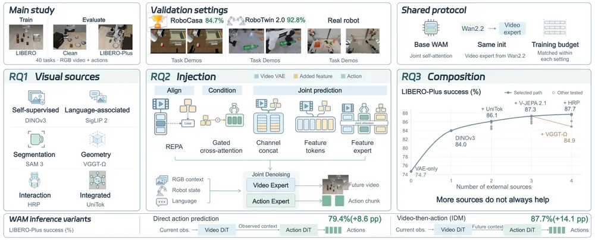
무슨 문제인가
WAM은 video 생성 모델의 VAE latent를 그대로 물려받는데, 이 latent는 이미지 복원용으로 학습되어 물체의 의미나 공간 관계를 따로 담도록 만들어지지 않음. 최근 연구들이 외부 visual feature를 더해 성능과 robustness를 올렸지만, 연구마다 다른 feature를 다른 방식으로 넣어서 feature 선택의 효과와 넣는 방식의 효과를 가를 수 없음. 그래서 어떤 feature를, 어떻게 넣고, 몇 개를 섞어야 하는지에 대한 통제된 비교가 없었음.
어떻게 푸나
기본 WAM은 Wan 2.2에서 초기화한 video expert와 별도 action expert로 되어 있고, RGB 관측·언어 지시·로봇 상태를 받아 미래 영상 latent와 action chunk를 flow matching으로 함께 denoising함. 여기에 고정된 외부 encoder 13종(DINOv3, V-JEPA 2.1, SigLIP 2, SAM 3, VGGT-Ω, HRP 등)의 feature를 넣어 비교함. 넣는 방식 중 REPA는 중간 hidden state를 외부 feature에 맞추는 loss를 더하고, gated cross-attention은 현재 feature를 action expert에 넣음. 나머지 셋은 미래 feature도 예측하게 하며, VAE latent 격자에 channel 방향으로 붙이기, 별도 token으로 붙이기, 전용 feature expert 두기로 나뉨. 학습 데이터와 학습량은 고정하고 LIBERO(시뮬레이션 조작 과제 모음)로 학습한 뒤, 추가 학습 없이 LIBERO-Plus(시점·조명·배경·noise 등 perturbation 7종을 준 10,030 episode)로 평가함. 결과를 모아 DINOv3·UniTok·V-JEPA 2.1을 channel 방향으로 붙인 R2-WAM을 만들고 다른 benchmark와 실로봇에서 확인함.
결과
- 넣는 방식 비교에서 13종 feature의 평균 LIBERO-Plus 성공률은 channel 방향 붙이기가 81.5%로 가장 높고, 다음인 feature expert는 76.4%, VAE만 쓴 기본 WAM은 74.7%임. DINOv3로 나눠 보면 현재 feature 입력만 주면 76.5%, 미래 feature 예측만 하면 81.9%, 둘 다 하면 84.0%임.
- feature 종류 비교에서 범용 feature 9종 평균은 82.2%, 특정 능력용 4종(SAM 3, VGGT-Ω, HRP, DynaFLIP) 평균은 80.0%임. DINOv3 하나로 9.3퍼센트포인트 오르고, 다른 feature를 더 붙여 얻은 추가 상승은 최대 3.7퍼센트포인트임. DINOv3·SigLIP 2·SAM 3를 distill한 C-RADIOv4를 DINOv3에 더하면 78.6%로 내려감.
- R2-WAM은 RoboCasa GR1 Tabletop(휴머노이드 탁자 조작 과제 24개)에서 84.7%로, VAE만 쓴 기본형 78.8%와 표에 실린 기존 최고 LAWA 80.8%보다 높음. RoboTwin 2.0(양팔 조작 과제 50개)에서는 92.8%이고 기본형 90.6%, WALA-Wan 92.3%와 차이가 작음.
- 실로봇 과제 4개(과제당 20회)에서 과제 완료 성공률이 에어프라이어 음식 준비 50.0%→60.0%, 물건 골라 옮기기 70.0%→80.0%, 컵 밀기 65.0%→75.0%로 오름. 도구로 쓰레기 쓸기는 쓸어 담은 비율이 48.3%에서 66.7%로 오름.
한계
feature 종류·넣는 방식·조합의 통제 비교는 LIBERO로 학습하고 LIBERO-Plus로 평가한 한 설정에서만 했고, 다른 benchmark에서는 최종 조합만 확인함. channel 방향 붙이기가 좋은 이유(미래 feature 예측, action이 feature에 더 의존함)는 ablation과 gradient 분석에 근거한 저자의 해석임. 실로봇 실험은 과제 4개에 과제당 20회이고, 외부 encoder 3개를 더 돌리는 추론 비용은 본문에서 확인 불가함.
누리랩 연구와의 연결
- world model 기반 policy에 visual 입력을 무엇으로, 어떻게 넣을지 정하는 실험 근거임. 우리 world model·VLA 실험에서 VAE latent만 쓰는 기본형에 DINOv3 feature를 channel 방향으로 붙여 미래까지 예측시키는 조건을 첫 비교 대상으로 둘 수 있음.
- 기본 WAM 성공률이 시점 변화 51.2%, 배경 변화 62.0%, 이미지 noise 66.6%로 낮다는 측정이 있음. world model 기반 policy가 어떤 시각 변화에서 실패하는지 다루는 failure detection 연구에 쓸 자료임.
13
71점
Robot-WATCHDOG : failure detection through object-centric graph representation
Manipulation
relevance 9/10
CoRL 2026 채택
Robotics (cs.RO)
장면을 물체 위치와 물체 사이 관계로 이루어진 시공간 graph로 바꿔, 성공 시연만 보고 엉뚱한 물체 집기나 잘못된 배치 같은 관계 실패를 단계마다 찾는 Robot-WATCHDOG을 만듦. BotFails 4개 과제의 평균 AUPR이 가장 좋은 기존 방법의 0.442에서 0.811로 오름.
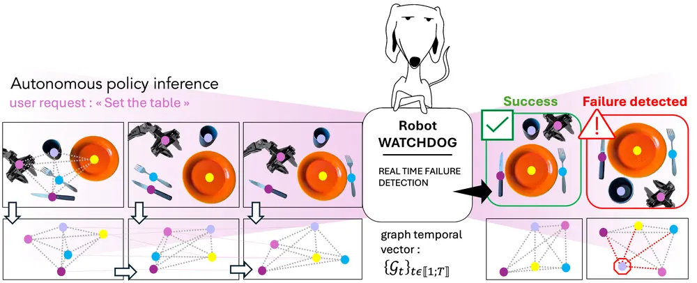
무슨 문제인가
학습된 로봇 policy가 실패하는 경우를 미리 다 정의할 수 없으므로, 성공 시연만 보고 정상에서 벗어난 것을 찾는 one-class 방식이 주로 쓰임. 이미지 기반 detector는 배경과 조명 변화에도 경보를 자주 내고, 관절·궤적 기반 detector는 로봇 움직임만 보므로 주변 물체를 보지 못함. 그런데 많은 실패는 익숙한 움직임으로 엉뚱한 물체를 집거나, 물체를 다른 물체와 잘못된 위치 관계로 놓는 데서 생김. 이런 관계 실패는 움직임도 정상이고 픽셀 차이도 작아서 두 방식 모두 놓침.
어떻게 푸나
Qwen3-VL로 과제 물체를 처음에 찾고 SAM 2로 추적해, 물체와 end-effector마다 2D 위치와 속도를 담은 node를 만듦. 두 node 사이 edge에는 상대 위치, 거리, 방향각의 cos·sin을 넣어 매 시점 graph를 만들고, 이 graph 시퀀스가 두 점수 함수의 공통 입력임. TPC(Trajectory Projection and Correlation)는 학습 없이, 물체마다 같은 종류의 가장 가까운 시연 궤적까지의 수직 거리를 최근 시점에 큰 가중치를 두어 합함. 여기에 물체 쌍 움직임의 Pearson 상관 행렬이 시연과 얼마나 다른지를 더해 관계 이탈을 잼. GnnT는 GATv2(graph attention network)로 물체 사이 관계를 인코딩하고 Transformer로 최근 구간을 읽어 이후 물체 위치를 예측하며, 예측 오차를 점수로 씀. 두 점수 모두 학습에 안 쓴 성공 시연에 conformal prediction(정상 점수 분포의 분위수로 경보 기준을 정하는 방법)을 적용해 시점별 경보 기준을 정함.
결과
- BotFails(LeRobot으로 모은 로봇 조작 실패 탐지 benchmark)에서 단단한 물체 과제 4개만 골라 시점 단위 AUPR(정밀도-재현율 곡선 아래 넓이)을 잼. 평균은 TPC 0.811, GnnT 0.623, 가장 좋은 기존 방법 AP-RMS(궤적 RMS 거리 비교) 0.442임. 저자가 만든 Watchdog 데이터셋(식탁 차리기, 컨베이어 위 쓰레기 분류)에서는 TPC 0.810, GnnT 0.648, 가장 좋은 기존 방법 0.346임. 모두 seed 10개 평균임.
- conformal prediction으로 경보 기준을 정한 뒤의 MCC(Matthews correlation coefficient: 1이면 완벽한 분류)는 TPC가 BotFails 0.675, Watchdog 0.641임. 부록 표에서 가장 좋은 기존 방법은 궤적 비교인 AP-Fréchet로 0.452와 0.630이고, 컨베이어 쓰레기 분류에서는 AP-Fréchet 0.553이 TPC 0.470보다 높음.
- Watchdog 식탁 차리기에서 TPC의 두 항을 따로 보면 MCC가 수직 거리만 78.2%, 상관만 81.3%, 둘 다 88.8%임. GnnT에서 edge를 빼면 같은 과제의 AUPR이 80.0%에서 59.3%로 낮아짐.
한계
물체 중심점의 2D 위치만 쓰므로 물체 방향이나 세밀한 자세가 틀린 실패는 못 찾고, 추적이 끊기거나 물체 ID가 바뀌면 graph 품질이 낮아짐. 변형 물체와 액체 과제는 BotFails에서 제외했고, 실패를 찾기만 할 뿐 복구와 연결한 실험은 없음. 본문은 경보 기준을 정한 뒤 가장 강한 기존 방법이 0.22와 0.33이라고 적지만, 부록 표의 AP-Fréchet는 0.452와 0.630임.
누리랩 연구와의 연결
- failure detection에 scene graph를 쓰는 직접 사례임. 학습 없는 TPC가 학습형 GnnT보다 좋았다는 결과는, failure detection 연구에서 object-centric 궤적 비교를 먼저 baseline으로 두어야 한다는 근거가 됨.
- 물체 쌍의 관계 변화로 실패 시점과 원인 물체를 함께 알려 주므로, VLA failure recovery에서 어느 물체를 다시 다룰지 정하는 입력으로 이어 쓸 수 있음.
14
68점
Sampling-based Kinodynamic Planning with World Models
World Model
relevance 9/10
ICRA 2027 투고
Robotics (cs.RO)
학습된 visual world model의 latent 공간에서 RRT와 KPIECE 같은 고전 tree 탐색을 실행해, 목표에서 잠시 멀어져야 풀리는 과제를 CEM·MPPI보다 잘 풀게 함. 실로봇 블록 밀기 30문제에서 성공이 CEM의 23개에서 29개로 늘어남.
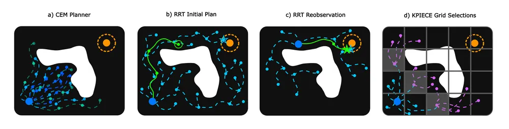
무슨 문제인가
visual world model로 계획할 때는 보통 CEM(행동열을 여러 개 뽑아 비용이 낮은 것들 쪽으로 분포를 좁혀 가는 최적화)이나 MPPI(뽑은 행동열을 비용에 따라 가중 평균하는 최적화)를 씀. 두 방법은 평균 주변에서만 행동을 바꿔 보므로, 블록 뒤로 돌아가야 밀 수 있는 과제처럼 처음에는 목표 거리가 줄지 않는 움직임이 필요하면 진행하지 못함. 또 정해진 예측 횟수를 매번 다 써야 해서 큰 world model에서는 계산 시간이 김. 로봇 motion planning의 tree 탐색은 이런 문제를 잘 풀지만, 차원이 큰 world model latent에서는 거의 쓰이지 않았음.
어떻게 푸나
고정된 DINO-WM(DINOv2 patch feature 위에서 다음 latent를 예측하는 world model)을 시뮬레이터 대신 상태 전개 함수로 쓰고, 입력은 최근 관측 3개와 목표 이미지, 출력은 행동열임. tree의 node 하나는 latent 상태이고, 고른 node에 DINO-WM의 행동 prior에서 뽑은 행동을 넣어 예측한 다음 latent를 자식 node로 붙임. node를 고르는 방식은 두 가지임. RRT(임의로 뽑은 점에 가장 가까운 node를 확장)는 latent를 공간 위치별로 평균 낸 저차원 feature로 거리를 재고, KPIECE는 latent를 저차원으로 투영한 격자에서 덜 채워진 칸의 node를 확장함. 후보 확장은 GPU에서 묶어 한 번에 예측하고, 목표 latent에 가장 가까운 node까지의 행동열을 짧은 CEM으로 다듬음(polish). 계획한 행동 중 앞부분만 실행한 뒤 새 관측에서 tree를 처음부터 다시 만듦.
결과
- 실로봇 YAM 팔로 50 mm 정육면체 블록을 미는 문제 30개(블록을 건드리지 않고 팔만 옮기기, 바로 밀기, 블록 뒤로 돌아가서 밀기 각 10개)를 평가함. 블록 최종 오차 25 mm 이내 성공이 RRT + polish 29/30, CEM과 MPPI 23/30임. 돌아가서 밀어야 하는 문제 10개에서는 9/10 대 5/10임.
- 시뮬레이션 pusht(T자 블록을 목표 자세로 미는 benchmark)에서 KPIECE + polish는 50문제 중 49개를 풀고 계획 시간 중앙값 3.39초를 씀. CEM은 46개를 13.33초에 풂. 문제 하나에 쓴 world model 한 step 예측 횟수 중앙값은 2,819회 대 45,000회임.
- CEM에 재계획당 2,500회 예측만 주면 pusht 성공이 21/50, rope(변형 케이블을 목표 모양으로 미는 과제) 성공이 3/50으로 낮아짐. CEM이 tree 방법과 비슷한 성공률을 내려면 재계획당 15,000~45,000회 예측이 필요함.
한계
실로봇 과제는 블록 하나를 평면에서 미는 4자유도 문제 30개뿐이고, 실로봇 전체 계획 시간 중앙값은 RRT + polish 14.6초로 CEM 12.5초보다 김. latent 거리로 정한 목표 도달이 실제 성공을 보장하지 않아, 저자도 목표 거리 함수를 가장 약한 부분으로 꼽음. rope 과제는 모든 방법이 50문제 중 25개 이하만 풀고, 원문에 코드 주소는 없음.
누리랩 연구와의 연결
- world model 기반 test-time planning에서 CEM 대신 tree 탐색을 쓰면, 처음에 목표에서 멀어져야 하는 과제를 풀 수 있다는 근거임. world model planning 연구에서 planner baseline으로 바로 쓸 수 있음.
- KPIECE처럼 latent를 저차원 격자로 투영해 탐색 정도를 재는 방식은, 물체 위치 같은 object-centric 표현을 투영으로 쓰는 쪽으로 넓혀 볼 수 있음. 논문도 XY 위치 투영을 시험함.
15
63점
REMM: Revisable Embodied Memory for Manipulation
Manipulation
relevance 9/10
ICRA·IROS·RA-L 계열 양식 (추정)
Robotics (cs.RO)
VLA는 고정하고 그 위에서 다음 지시를 고르는 메모리 계층 REMM을 만들어, 이미 끝낸 과제 조건이 사람 개입으로 더는 성립하지 않으면 그 조건에 기댄 결론만 취소하고 복구 지시를 넣게 함. 실제 로봇 운반 과제에서 기록된 과제 진행률 평균이 가장 강한 baseline의 57%에서 91%로 오름.
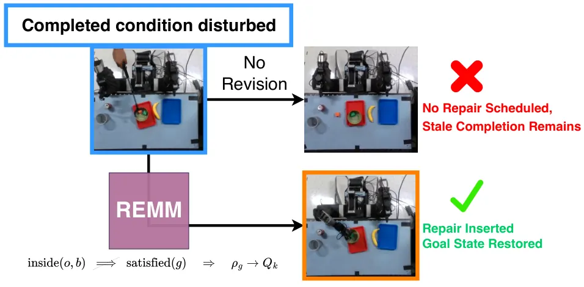
무슨 문제인가
긴 조작 과제에서는 앞에서 무엇을 했는지 기억해야 하지만, 기억만으로는 부족함. 이미 끝낸 조건(물체를 그릇에 넣음)이 미끄러짐이나 사람 개입으로 더는 성립하지 않으면, 그 조건에 기대던 결론도 함께 취소해야 함. 기존 VLA 메모리 연구는 과거 관측을 저장하고 꺼내 쓰는 데 집중해서, 어느 관측이 어느 완료 조건을 뒷받침하는지는 기록하지 않음. 그래서 장면이 바뀌어도 메모리 안에는 끝난 과제가 그대로 남고 복구 행동이 나오지 않음.
어떻게 푸나
REMM(Revisable Embodied Memory for Manipulation)은 추가 학습 없이 고정된 G0.5(추론 token과 행동을 한 autoregressive 출력열로 내는 VLA)에 다음에 보낼 짧은 언어 지시를 골라 주는 계층임. Qwen3-VL-4B가 긴 지시를 skill 목록으로 나누고 skill이 끝났는지 확인하며, OWLv2가 물체를 검출함. 관측은 신뢰도 0.8 이상이고 서로 다른 관측 두 번이 일치할 때만 사건으로 받아들여, 지우지 않고 쌓기만 하는 기록(ledger)에 추가함. 이 기록에서 「물체가 그릇 안에 있음」 같은 사실을 만들고, 「운반 목표 완료」처럼 거기서 나온 결론에는 근거 사실을 부모로 연결해 둠. 새 사건이 부모 사실을 대체하면 그 아래 결론을 모두 무효로 돌리고, 완료 목표가 무효가 되면 복구 skill을 만들어 skill 대기열에 넣음. 복구는 지금 skill이 다루는 물체와 겹치면 바로 다음 순서에, 아니면 남은 일 뒤에 넣고, 로봇이 멈춘 skill 경계에서만 보냄.
결과
- Galaxea R1 Lite 로봇에서 3개 과제군을 총 51회 시험했고, 사람이 일을 거든 실행도 포함함. 운반 도중 사람이 물체나 목적지를 바꾸는 과제(T1)에서 기록된 과제 진행률 평균이 가장 강한 baseline의 57%에서 91%로 오름. 가려진 색 순서를 기억해 물체를 옮기는 과제(T2)는 43%에서 70%로 오름.
- 끝까지 완료한 실행은 REMM이 17회 중 10회, 같은 G0.5 위에 저자가 옮겨 구현한 계층형 메모리 방법 HiMe가 16회 중 2회, G0.5 단독이 18회 중 0회임. REMM 완료 10회 중 2회는 사람 보조가 기록된 실행임.
- 로봇을 움직이지 않고 생성 영상 12개로 T2의 다음 지시만 채점함. 순서·첫 물체·목적지·명령을 모두 맞힌 경우는 REMM 8개, 하위 목표를 기호로 저장하는 RoboMME 방식 5개임. HiMe와 핵심 장면 이미지를 저장하는 MemER 방식은 0개임. HiMe는 순서를 12개 중 11개 맞혔지만 첫 물체를 맞힌 것은 1개뿐임.
- 컵을 섞은 뒤 숨은 물체를 찾는 과제(T3)는 실로봇 4회를 모두 완료했고, 컵 섞기 렌더 영상 30개도 모두 맞힘. 비교한 메모리 방법들은 30개 중 10~13개를 맞힘.
한계
의존 관계는 학습하지 않고 과제별 compiler와 고정된 predicate 목록으로 정해 넣으며, T2와 T3는 과제 전용 compiler와 추적기를 씀. 실험은 로봇 한 대에 조건마다 3~5회이고 사람 보조 실행이 섞여 있어, 저자도 향상을 의존 관계 전파 하나의 효과로 볼 수 없다고 적음. 복구는 skill 경계에서만 넣으므로 실행 중인 위험한 행동은 멈추지 못하고, 코드는 공개 예정이라고만 적혀 있음.
누리랩 연구와의 연결
- robot memory와 failure recovery를 잇는 사례임. 완료 조건마다 근거 사실을 연결해 두는 구조는, failure detection 결과를 어느 하위 목표를 다시 할지로 바꾸는 데 그대로 쓸 수 있음.
- 의존 관계를 사람이 정해 넣는다는 한계는, scene graph나 VLM으로 의존 관계를 자동으로 만드는 후속 연구의 출발점이 됨.
오늘의 흐름
- world model을 실행 경로 밖에서 씀: world model이 행동을 직접 고르는 대신 학습 신호, 예전 과제 복습, 계획 탐색 도구로 쓰임. Dream to Remember는 예전 과제 복습에, Forward Dynamics Models는 학습 때만 쓰는 보조 loss에, Sampling-based Kinodynamic Planning과 LeWAM은 latent 공간 계획에 씀.
- 실패를 찾는 데서 끝내지 않고 개입과 복구까지 평가함: RESCUE는 runtime monitor를 경보 뒤 개입의 완료 비용으로 평가함. Robot-WATCHDOG은 실패 시점과 원인 물체를 함께 내고, REMM은 사람 개입으로 무효가 된 하위 목표만 다시 하게 함.
- 실패 결과를 예측하는 world model을 따로 학습함: HF-WM은 행동을 일부러 바꾼 조건에서 GRPO로 후처리해, 성공 시연만으로는 못 배우던 실패 결과 예측을 개선함.
- 로봇 행동 label 없는 사람 데이터에서 행동 신호를 얻음: LAPT-Scale은 1인칭 영상의 frame 변화를 latent action으로 바꾸고, PanTact는 몸에 찬 접촉 센서 기록을 contact goal로 바꿔 휴머노이드에 옮김.
- reward와 label을 줄인 policy 학습: AlphaNIST는 조립 성공 여부만 주는 reward로 20개 조립 과제를 학습하고, OGPO는 VLM이 매긴 구간별 목표 달성 여부로 offline 데이터만 써서 VLA를 post-training함.
해볼 만한 연구
학습용 미래 예측 head로 실행 중 실패 감지
- 질문: VLA에 학습 때만 붙이는 미래 예측 head의 예측과 실제 다음 관측의 차이가, 실패가 보이기 전에 실패를 알려 주는지 밝힘.
- 첫 실험: LIBERO에서 FDM 방식의 보조 head를 붙인 π0.5를 학습함. 실행 중 예측 latent와 실제 관측 latent의 거리를 실패 점수로 쓰고, AUROC와 RESCUE 방식의 개입 후 완료 비용을 같은 실패 시점에서 잼.
- 가장 가까운 연구: Forward Dynamics Models는 이 head를 학습 신호로만 쓰고 실패 감지에는 시험하지 않음. RESCUE는 평가 틀만 주고 monitor 자체는 기존 것을 씀.
시뮬레이터 복원 없이 world model로 복구 행동 고르기
- 질문: 실패를 감지한 직후 world model 안에서 여러 복구 행동을 미리 굴려 보고 고르면, 시뮬레이터 상태를 복원해 얻은 정답 개입과 같은 행동을 고르는지 밝힘.
- 첫 실험: RESCUE의 LIBERO 실패 시점마다 시뮬레이터 복원으로 개입 후보의 실제 완료 비용 순위를 만듦. 같은 후보를 HF-WM 방식으로 실패 결과까지 학습한 world model로 예측한 순위와 비교해 순위 상관을 잼.
- 가장 가까운 연구: RESCUE는 정답 순위를 만들려면 시뮬레이터 복원이 필요함. HF-WM은 실패 결과 예측을 개선했지만 복구 행동 선택에는 쓰지 않음.
꼭 읽을 논문
- RESCUE: failure detection을 탐지 정확도가 아니라 개입 뒤 완료 비용으로 평가해야 하는 이유를 실제 monitor 결과로 보임.
- Dream to Remember: 부정확한 world model도 예전 과제 복습에는 쓸 수 있다는 결과가 robot memory 설계에 바로 쓰임.
- Forward Dynamics Models: world model을 VLA 실행 경로에 넣지 않고 학습 신호로만 써도 실로봇 성공률이 83%에서 96%로 오름.
- Robot-WATCHDOG: scene graph로 실패 시점과 원인 물체를 함께 찾는 failure detection의 직접 사례임.
- HF-WM: 실패 데이터 없이 실패 결과를 예측하는 world model을 학습하는 방법임.
전체 1차 스크리닝 결과 (500편, 점수순) 펼치기
| # | 제목 | 점수 | 🤖 | 분야 | 한 줄 근거 |
|---|---|---|---|---|---|
| 1 | LAPT-Scale: Scaling Embodied Policies with Latent Action Pre-Training on Human Videos | 82 | 10 | VLA | 레이블 없는 대규모 egocentric human video에서 연속 latent action을 학습해 VLA를 pretrain, human video 스케일을 1K에서 5K시간으로 늘리며 실로봇 성공률을 63.3%에서 85.0%로 끌어올림 |
| 2 | AlphaNIST: Emergent Assembly Skills from Binary Task Rewards | 80 | 9 | Manipulation | AlphaGo Zero 식으로 binary task reward만으로 NIST Assembly Task Board 20개 조립 과제를 demonstration·progress shaping 없이 처음부터 학습시켜 98.2% 성공률을 달성한 manipulation RL 연구임. grasp 선택·재배치·순서 없는 멀티태스크 완성 같은 emergent dexterous 행동을 시뮬레이션에서 보였고 ICRA 투고로 누리랩 manipulation·RL 주제와 정확히 맞음. 다만 시뮬레이션 전용이고 실로봇 검증은 없음. |
| 3 | What Visual Representations Do World Action Models Need? | 78 | 9 | VLA | world action model(WAM)의 visual representation 선택과 통합 방식을 체계적으로 비교해 RoboCasa·RoboTwin에서 SOTA를 달성, manipulation policy 설계에 직접적인 가이드를 제공함 |
| 4 | Fly-by-Code: Embodied Coding Agents for Aerial Manipulation with Active Visual and Physical Feedback | 78 | 9 | Manipulation | 공중 조작에서 부분 관측·실패 원인 불확실성을 능동적 시점 변경과 물리적 probing으로 해소하는 코딩 에이전트로 active perception과 failure diagnosis를 결합하고 실로봇 검증까지 함 |
| 5 | Dream to Remember: Continual Steering of Generalist Robot Policies with World Models | 78 | 9 | World Model | frozen world model의 상상 롤아웃으로 이전 과제를 리허설시켜 steering module만 학습시킴으로써 replay buffer 없이 catastrophic forgetting을 막는 연속학습법으로 CALVIN·LIBERO·실물 Franka에서 모두 검증되어 world model·test-time steering 우선주제와 강하게 맞음 |
| 6 | OGPO: Offline Goal-conditioned Policy Optimization for Recoverable Vision-Language-Action Models | 78 | 9 | VLA | VLA 모델을 offline goal-conditioned 정책 최적화로 post-training해 demonstration 이탈 시 복구 능력을 높인 manipulation 연구임. LIBERO·MetaWorld에서 SFT 대비 일관된 개선과 perturbation 벤치마크(LIBERO-ReAct)로 robustness를 검증했고 NeurIPS 2026 게재로 누리랩 VLA·recovery 주제와 직접 맞음. |
| 7 | PanTact: Teaching Whole-Body Dexterity with a Wearable Contact Interface | 75 | 9 | Manipulation | 로봇 없는 인간 시연에서 신체 전체 contact를 추출해 휴머노이드 whole-body dexterity로 전이하는 새로운 데이터 인터페이스를 제안하고 Unitree G1 실기로 검증함 |
| 8 | LeWAM: End-to-End World and Action Modeling with JEPAs | 75 | 9 | World Model | JEPA로 latent state 예측과 action flow matching을 end-to-end로 결합해 단일 모델이 정책 실행과 플래닝을 모두 지원하게 하며 contact-rich·장기호라이즌 태스크에서 큰 성공률 향상(28.6→89.7%)과 32배 빠른 플래닝을 보임 |
| 9 | RESCUE: Is This Alarm Worth Acting On? Counterfactual Evaluation of VLA Runtime Monitors | 75 | 9 | VLA | runtime failure monitor의 가치를 탐지 정확도가 아니라 counterfactual 개입 비용으로 재평가해 정확한 알람도 개입 비용 구조에 따라 무용할 수 있음을 OpenVLA-OFT와 π0.5로 실증한 연구로 failure detection·counterfactual reasoning 우선주제와 정확히 맞음 |
| 10 | VLMs are Native Action Models: Unleashing the Manipulation Capabilities of VLMs with Explicit Action-Space Grounding | 72 | 9 | VLA | action head나 action token 없이 TCP 중심 좌표계를 wrist 카메라에 투영해 VLM이 자신의 텍스트 생성 인터페이스로 직접 연속 행동을 생성하게 하는 새로운 action-space grounding 포뮬레이션으로 zero-shot 조작과 파인튜닝을 모두 지원함 |
| 11 | Forward Dynamics Models | 72 | 9 | VLA | 미래 상태 예측이 action feature를 거쳐서만 정책에 영향을 주도록 하는 action-to-future 패러다임으로 VLA와 world action model을 통합하며 LIBERO 99.4%와 실로봇 최대 13%p 향상을 달성함 |
| 12 | Beyond Successful Robot Demonstrations: Learning from Human Interactions and Modeling Failure Dynamics | 72 | 9 | World Model | pointflow로 인간-로봇 embodiment gap을 메워 human video를 world model 학습에 활용하고 GRPO로 실패 동역학까지 학습시키는 failure-aware action-conditioned world model로 우선주제 세 가지(world model·human video 전이·failure modeling)를 동시에 다룸 |
| 13 | REMM: Revisable Embodied Memory for Manipulation | 70 | 9 | Manipulation | frozen VLA executor 위에 append-only 증거와 revisable 상태를 분리한 감독 메모리 계층을 얹어 장기 조작의 개입 복구와 시퀀스 기억을 51회 실물 실험에서 큰 폭 개선함(57→91%) |
| 14 | Sampling-based Kinodynamic Planning with World Models | 70 | 9 | World Model | world model의 latent space를 configuration space처럼 보고 CEM·MPPI가 막히는 장기호라이즌 과제에 kinodynamic sampling 기반 트리 탐색(RRT·KPIECE)을 적용한 새로운 관점으로 실로봇 블록 푸시에서 성공률 20%p 개선과 최대 13.8배 빠른 플래닝을 달성함 |
| 15 | Robot-WATCHDOG : failure detection through object-centric graph representation | 70 | 9 | Manipulation | 정상 시연만으로 object-centric spatio-temporal graph 기반 self-supervised failure detection을 학습해 이미지 기반 탐지기보다 의미·상호작용 수준 실패를 더 잘 잡아내는 연구로 CoRL 2026에 채택되었고 failure detection 우선주제와 정확히 일치함 |
| 16 | CASTER: Formalizing Zero-Shot Manipulation from Synthetic Videos as Constrained Optimization | 68 | 8 | Manipulation | 합성 비디오에서 추출한 궤적을 제약 최적화로 물리적으로 타당하게 보정하는 zero-shot manipulation 포뮬레이션으로 기존 방법들을 단순화 사례로 통합 설명하고 성공률을 34.1%p 개선함 |
| 17 | Gamma: Grounded Multi-Agent Memory with Mechanical Audit for Memory-Intensive Manipulation | 68 | 8 | VLA | VLA의 장기 메모리 태스크 실패를 SAM-3 기반 grounding과 propose-verify 감사 구조의 2-agent 메모리 시스템으로 해결해 oracle 성능에 근접시킨 연구임 |
| 18 | Evidence-Guided Counterfactual Learning for Long-Tailed Robotic Policies | 68 | 8 | VLA | VLA의 head-task action bias를 counterfactual observation으로 진단·완화하는 학습 프레임워크로 long-tailed 태스크에서 추가 데이터나 주석 없이 일관된 개선을 보이고 counterfactual reasoning 우선주제와 직결됨 |
| 19 | Grounded-Dreamer: Robot Learning from World Model Synthetic Data with Physical Grounding | 68 | 8 | World Model | 실제 이미지에서 물체·카메라를 재구성해 시뮬레이터 물리와 결합하고 이를 video world model과 inverse dynamics 학습에 사용해 인간 teleoperation 없이 조작 정책을 학습하는 real-to-sim 데이터 생성 연구임 |
| 20 | Splat2Act: From Captured Scenes to Personalized VLA Manipulation | 68 | 8 | VLA | 휴대폰 스캔만으로 3D Gaussian Splatting 디지털 트윈을 만들어 VLA를 특정 공간·물체에 자동 개인화하는 real-to-sim-to-real 파이프라인으로 실물 Stretch 3에서 시뮬 성공률과 근접한 성능을 보여 3DGS와 VLA 결합의 실용적 사례임 |
| 21 | SimVTA: Simulation-Grounded Video-Trajectory Alignment for Driving World Action Models | 68 | 7 | World Model | 3DGS로 재구성한 실제 장면에서 world engine으로 trajectory 후보의 미래 영상을 렌더링해 GRPO로 주행 world action model을 post-training, NAVSIM v1 PDMS를 86.2에서 91.3으로 개선함 |
| 22 | Reflex: Visually Grounded Reactive Humanoid Control | 65 | 8 | Manipulation | 휴머노이드가 던져진 물체를 전신으로 반응적으로 받아내는 과제를 RL·동역학 추론·egocentric 시각으로 단계적 학습시켜 실물 G1에서 입증한 active perception·whole-body control 연구임 |
| 23 | Beyond Actions: Learning Future Operation Targets for Vision-Language-Action Models | 65 | 8 | VLA | 행동 자체가 아니라 미래에 일어날 물리적 Effect를 주 예측 타겟으로 삼는 새로운 VLA 학습 포뮬레이션으로 bimanual dexterous 과제 5개 전부에서 π0.5·UVT 대비 큰 개선을 보임 |
| 24 | Belief-Overlap Partial Inversion: Object-Centric Flow Replanning for Humanoid Loco-Manipulation | 62 | 8 | Manipulation | 미지 물성 카트를 밀 때 belief 변화 정도에 비례해 flow 플랜을 부분적으로만 되돌리는 Belief-Overlap Partial Inversion이라는 새로운 online replanning 공식을 제안하고 실물 비홀로노믹 카트에서 검증함 |
| 25 | Human2Dex: Dexterous Robot Learning from Wrist-Centric Human Demonstrations | 62 | 8 | Manipulation | wrist 중심 21점 손 표현으로 사람 시연을 손 임베딩에 독립적으로 분리해 각기 다른 dexterous hand에 재사용하는 데이터 인터페이스로 실로봇 두 종의 손에서 80~91% 성공률을 보임 |
| 26 | Dual-Stream Memory for Vision-Language-Action Policies | 62 | 8 | VLA | VLA에 실행상태를 압축하는 temporal token과 태스크 조건 retriever를 분리한 dual-stream 메모리 구조를 제안해 16개 RoboMME 태스크와 4개 실로봇 과제에서 큰 성능 향상을 보이는 robot memory 연구임 |
| 27 | LeapBot-JAC: Joint Action Chains for World Action Models | 60 | 8 | VLA | 고정된 action-token 예산 안에서 참조용 sparse chain과 실행용 dense chain을 공유 action expert로 함께 denoise하는 action-chunking 구조로 LIBERO·LIBERO-Plus와 실로봇에서 일관된 개선을 보임 |
| 28 | VICAR: Video Imitation with Contact-Aware Retargeting for Humanoid Interactive Skills | 60 | 8 | Manipulation | 3인칭 인간 비디오에서 world-frame contact pose·속도·충돌여유를 고우선순위 제약으로 보존하는 휴머노이드 리타게팅으로 테니스 서브 등 실물 하드웨어 스킬을 재현함 |
| 29 | Reinforcement Learning via Fixed-point Flow Matching | 60 | 6 | RL | 데이터 없이 flow policy를 RL로 학습하는 fixed-point flow matching을 제안, cs.RO 태그와 함께 manipulation 등에 쓰이는 flow-based policy 학습에 새로운 formulation을 제공함. |
| 30 | Spa-Bench: A Real-Robot Benchmark for Spatial Grounding in Vision-Language-Action Models | 58 | 8 | VLA | 실로봇 6개 태스크로 VLA의 spatial grounding을 ID/OOD로 분리 평가해 현재 VLA들이 조작은 되지만 공간 이해가 취약함을 드러낸 벤치마크임 |
| 31 | GuidedNav: Shaping Vision-Language Navigation Representations through Pre-action Attention and Spatial Guidance | 58 | 7 | Navigation | pre-action attention과 공간 guidance로 VLN 표현을 구조화해 R2R-CE·RxR-CE val-unseen에서 SOTA, 실제 환경 전이 가능성도 제시함 |
| 32 | NovaSplat: Model-Free 6D Object Pose Estimation via 3D Gaussian Splatting Onboarding and Refinement | 58 | 7 | Manipulation | 스마트폰 영상만으로 3DGS 템플릿을 구축해 CAD 없는 model-free 6D object pose 추정·정제를 수행, 조작을 위한 pose estimation 성능 격차를 좁힘 |
| 33 | Non-Prehensile Multi-Object Placement with Mobile Robots via Diffusion-Based Trajectory Planning | 58 | 7 | Manipulation | 모바일 로봇의 비파악 다중 물체 배치를 causal factorization diffusion planner로 풀고 TurtleBot 실로봇에서 Diffusion Policy 대비 큰 성공률 향상(85.0% vs 37.5%)을 보임 |
| 34 | Evo-World: A Lightweight Vision-Language-Action Model with Future Motion Prediction via Optical-Flow Supervision | 58 | 7 | VLA | 미래 이미지 예측 대신 optical flow로 task-relevant 모션만 예측해 VLA 정책학습에 보조 신호를 주는 경량 VLA로 real-world AgileX 로봇 실험까지 포함함 |
| 35 | EgoReveal: Learning Active Vision and Object Manipulation under Partial Occlusions from Egocentric Demonstrations | 58 | 7 | Manipulation | egocentric 인간 시연에서 조작과 함께 가림을 해소하는 viewpoint repositioning을 공동 학습하는 active perception 연구로 IROS 2026에 채택됨 |
| 36 | Evo-RL: Iterative Robot Reinforcement Learning from Selective Experience | 58 | 7 | RL | 인간 교정과 advantage 기반 성공 경험 선택을 결합한 반복적 real-world RL로 1000시간 규모 데이터셋을 공개하고 고정밀 조작 과제에서 RECAP 대비 30%p 향상을 보임 |
| 37 | EndoRSI: Physical-Evidence-Driven Recursive Improvement of Endoscopic Robot Policies | 58 | 7 | Manipulation | 물리 실험 증거로 코딩 에이전트가 자신의 내시경 로봇 정책을 반복 수정하는 human-governed self-improvement 시스템으로 failure 기반 정책 개선이라는 점에서 랩의 failure recovery 관심과 맞닿아 있고 ex-vivo 돼지 실험으로 검증함 |
| 38 | RARA: Robust Policy Fine-Tuning through Retrieval-Anchored Representation Alignment for Robotic Manipulation | 58 | 7 | VLA | 사전학습 표현과 유사한 시연을 retrieve해 그 표현 변화를 제한하며 파인튜닝하는 2단계 적응법으로 VLA의 few-shot 적응에서 OOD 저하를 완화하고 실로봇으로 검증함 |
| 39 | HorizonNav: Geometry-Guided Video Diffusion for Anticipatory 3D Robot Navigation | 58 | 7 | Navigation | 단일 RGB와 텍스트로 미래 3D 공간을 video diffusion으로 상상하고 SLAM·깊이로 기하 정합해 사전 계획에 쓰는 anticipatory navigation 연구로 world model과 3D navigation을 결합함 |
| 40 | Chronos Policy: Learning Robot Policies on Physical Time | 58 | 7 | VLA | 관측 시각과 행동 실행 시각을 명시적으로 조건화하는 time-aware RoPE로 비동기·가변속도 센싱에서도 정책을 안정화하는 VLA 표현 개선 연구로 동적·멀티센서 과제에서 성능을 높임 |
| 41 | Noise Space Learning for VLA Adaptation | 58 | 7 | VLA | pretrained flow-matching VLA를 고정한 채 noise 분포만 PPO·SAC·AWR로 학습시켜 적응하는 test-time steering 인터페이스로 자원 제약 하 VLA 적응이라는 실용적 문제를 다룸 |
| 42 | When Generative Models Act as Simulators | 56 | 5 | World Model | 생성모델의 latent 표현을 시뮬레이터 state로 편집 가능한지 분석한 world model editability 연구로 랩의 world model 주제와 직결되며 Othello와 연속 환경(Rayworld) 양쪽에서 검증함. |
| 43 | Robust Vision-Language Navigation with Awareness of Instruction-Execution Progress | 55 | 7 | Navigation | 명령 수행 진행도를 추정해 이미 수행된 지시문 내용이 다음 결정을 방해하지 않도록 하는 VLN 프레임워크, R2R/RxR/CVDN에서 성능 개선을 보임 |
| 44 | What Should Embodied Agents Remember? Benchmarking and Evaluating Memory Modality for Embodied Agents | 55 | 7 | Embodied AI | embodied 에이전트의 메모리 모달리티(프레임·설명·scene graph)를 체계적으로 비교하는 벤치마크로 robot memory 우선주제와 직결되고 실로봇 데모도 포함함 |
| 45 | Tactile Sensing-based Secure and Gentle Grasping of Unknown Objects | 55 | 7 | Manipulation | 미지 물체에 대해 사전학습 없이 온라인 Gaussian Process로 접촉 동역학을 학습해 secure-and-gentle 그래스핑을 실현하는 tactile sensing 연구임 |
| 46 | ReAT: Residual Action Tokenization for Autoregressive Robot Policies | 55 | 7 | VLA | 디코딩된 재구성 오차를 피드백으로 다음 토큰을 생성하는 residual action tokenizer로 자기회귀 VLA 정책의 토큰 효율을 높여 LIBERO에서 절반 토큰으로 기존 8토큰 베이스라인을 능가함 |
| 47 | GLIMPSE: Global-Local Indexing with Multi-Precision Spectral Encoding for Explorable Video World Models | 55 | 6 | World Model | 카메라가 되돌아올 때도 장면 일관성을 유지하는 explorable video world model의 전역-지역 메모리 설계, 로봇 world model의 장기 공간 일관성 문제에 직접 연관됨 |
| 48 | MAGMA-Bench: Evaluating Long-Horizon Embodied Agents under Dynamic Tasks and Execution Failures | 54 | 7 | Embodied AI | 동적 과업과 실행 실패 하에서 장기 임무를 수행하는 멀티로봇 embodied 에이전트를 평가하는 벤치마크로 failure recovery·long-horizon coordination이라는 누리랩 핵심 주제를 직접 다룸. 스킬 레벨 인터페이스로 perception·control을 분리했고 최강 모델도 perturbation 하에서 성공률이 크게 떨어짐을 보였으나 벤치마크 논문이라 새 방법론 제시는 제한적임. |
| 49 | Towards Physically Grounded Articulated 3D Assets: A Multi-Agent Pipeline and Benchmark | 52 | 6 | 3D Vision | 물리 시뮬레이션 피드백 기반 articulated 3D asset 생성 멀티에이전트 파이프라인으로 manipulation sim asset 구축에 바로 쓸 수 있음. |
| 50 | FPD-Drive: Future Policy Distillation for End-to-End Autonomous Driving | 50 | 6 | RL | privileged future 정보를 distill해 멀티 trajectory 지도와 안전성 보정을 수행하는 end-to-end 자율주행 플래너, NAVSIM v1/v2에서 SOTA를 달성함 |
| 51 | StereoEngine: Scaling Stereo Bimanual Robot Data without Stereo Cameras | 50 | 6 | VLA | 실제 스테레오 카메라 없이 monocular-to-stereo 합성으로 bimanual VLA 학습 데이터를 확장하는 데이터 스케일링 기여로 novelty는 공학적임 |
| 52 | ATHLETE: Learning Reactive Humanoid Tennis via Trajectory-Guided Motion Matching | 50 | 6 | Manipulation | locomotion 데이터와 비디오 유래 타격 모션을 결합해 휴머노이드가 테니스를 치도록 학습시킨 시스템 연구로 실물 랠리까지 보였으나 랩의 핵심 research gap(VLA·world model formulation)과는 거리가 있는 스킬 데모 성격임 |
| 53 | TAME-Nav: Temporal Asymmetric Mixture-of-Experts Distillation for Agile and Versatile Robot Navigation | 48 | 6 | Navigation | 민첩한 로봇 내비게이션을 위한 teacher-student 시간적 soft MoE distillation으로 실제 사족보행 로봇에서 동적 장애물 회피를 검증했으나 아키텍처 조합 수준의 기여임 |
| 54 | PartiGen: Part-Aware Representations for Language-Conditioned Humanoid Motion Generation | 48 | 6 | Manipulation | 해부학적 부위별 attention과 forward-kinematics 감독으로 언어조건 휴머노이드 모션을 생성하고 실물 G1에서 26/27 성공을 검증했으나 아키텍처 조합형 기여에 가까움 |
| 55 | SpatialASM: Internalizing Active Mentalization for Spatial Reasoning | 48 | 5 | Embodied AI | 과업에 맞는 가상 시점으로 장면을 재구성하는 능력(Active Spatial Mentalization)을 LVLM에 내재화, viewpoint 기반 공간 추론·active perception과 직접 연관됨 |
| 56 | S-Space: Exploring Spatial Workspace in Multimodal Language Models | 46 | 5 | Embodied AI | MLLM 내부에 좌표를 인코딩하는 선형 부분공간(S-Space)을 발견하고 이를 통해 공간 추론의 한계를 진단, embodied spatial reasoning에 직접적 통찰을 제공함 |
| 57 | EmbodiedCLBench: Evaluating Continual Learning for Self-Evolving Embodied Agents | 46 | 5 | Embodied AI | embodied agent의 continual learning을 평가하는 첫 벤치마크로 기초 task 경험이 복합 task로 전이되는지 측정함. embodied AI 우선주제와 직접 맞으나 벤치마크 논문이라 방법론적 기여는 제한적임. |
| 58 | SmolWAM: A Latent World-Action Model for Robotic Manipulation on Edge Devices | 45 | 6 | World Model | 2B 파라미터 world-action model을 트렁크 유지·블록 축소로 edge 기기용으로 경량화한 연구로 world model 우선주제와 맞지만 랩이 경계하는 efficiency 중심 기여임 |
| 59 | MIRAGE: Metric Inference and Reliability-Aware Gaussian Estimation from Feed-Forward Vision | 45 | 4 | 3D Vision | LiDAR-IMU로 feed-forward 3D Gaussian 재구성의 metric scale을 보정하는 연구, SLAM·navigation에 활용 가능함 |
| 60 | Beyond Temporal Proximity: Explanatory World Models for Credit Assignment in Reinforcement Learning | 45 | 3 | World Model | 지연된 보상에서 설명 기반으로 earlier event에 credit을 재분배하는 world model 프레임워크로, 장기 credit assignment 문제는 로봇 long-horizon RL에도 적용 가능하나 실험은 추천시스템 도메인에 한정됨. |
| 61 | In-Context Learning for System Identification: Probabilistic Formulation, Long-Sequence Handling, and Benchmark Validation | 44 | 4 | World Model | 비선형 시스템 식별을 in-context meta-learning으로 수행하는 프레임워크로 model-based 제어·world model 구축에 바로 응용 가능한 방법론이나 평가는 표준 비선형 시스템 벤치마크에 한정됨. |
| 62 | Structure-Aware Matching for Robust UAV Thermal-to-Satellite Geo-Localization | 42 | 6 | Navigation | UAV thermal-satellite 매칭 기반 GNSS-denied geo-localization, 구조적 cue로 cross-modal 정합을 강화해 UAV navigation에 직접 기여함 |
| 63 | AutoBio+: Benchmarking Dexterous Manipulation with Dynamic Experimental Phenomena in Realistic Laboratories | 42 | 6 | Manipulation | 생물학 실험실의 동적 현상(화염·연기·거품)과 3DGS 배경을 결합한 dexterous manipulation 시뮬레이션 벤치마크로 sim-to-real 격차를 줄였으나 벤치마크·데이터 성격의 기여임 |
| 64 | CeDR-Nav: Cross-Embodiment Mapless Navigation via Offline Demonstration Recasting | 42 | 5 | Navigation | 소스 embodiment의 시연을 기하학적으로 재가공해 온라인 학습 없이 각 타겟 embodiment 전용 내비게이션 정책을 만드는 cross-embodiment 방법으로 실용적이나 novelty는 제한적임 |
| 65 | Reflect-VLA: Internalizing Reflective Guidance via Dual-Path On-Policy Self-Distillation for Autonomous Driving | 42 | 5 | VLA | 자율주행 VLA에서 reflective guidance를 teacher로부터 self-distillation으로 내재화해 단일 패스 추론을 유지하는 기법으로 VLA 학습 아이디어는 공유하나 조작이 아닌 주행 도메인임 |
| 66 | Zebra3D: Efficient Hybrid Foundation Models For Scalable 3D Reconstruction | 42 | 4 | 3D Vision | VGGT 등 feed-forward 3D foundation model의 attention을 희소화해 대규모 view로 확장, 효율화 중심이나 3D 재구성 스케일업에 기여함 |
| 67 | PhysForge: Material-Controllable 3D Reconstruction with Separable Components | 42 | 4 | World Model | video diffusion의 동역학을 참조해 물체·부품 단위로 물성을 분리 추정하는 프레임워크, 조작 시뮬레이션에 쓰일 물성 추정에 기여함 |
| 68 | State-OPD: State-Grounded On-Policy Distillation for Multi-Turn Agents | 42 | 4 | Embodied AI | ALFWorld·ScienceWorld·WebShop 같은 embodied 유사 멀티턴 환경에서 teacher 증류를 interaction state 기준으로 재구성, long-horizon agent 학습에 의미 있으나 텍스트 기반 환경에 한정됨. |
| 69 | Can Failed Trajectories Reveal Where Agents Go Wrong? Agentic Failure Attribution Without Step-Level Labels | 42 | 3 | Multimodal | step-level 라벨 없이 실패 트래젝토리에서 결정적 실패 단계를 스펙트럴 방법으로 찾아내는 연구로 failure diagnosis 우선주제와 직결되나 LLM agent 디버깅 도메인이라 로봇 실패감지로의 전이가 필요함. |
| 70 | EvoBelief: Falsifiable World Models for Self-Improving LLM Agents | 42 | 3 | World Model | 환경 역학에 대한 falsifiable hypothesis를 갱신하는 world model로 ALFWorld 등 embodied 환경에서 성능 개선을 보임. world model 자가개선 주제와 맞지만 텍스트 에이전트 수준이고 실로봇 검증은 없음. |
| 71 | Mind the Temporal Gap: Evaluating Video Models for Temporal Understanding in Driving | 40 | 5 | Video | 주행 영상에서 video-language model의 temporal reasoning 신뢰성을 평가, world model 한계를 드러냄 |
| 72 | JoyInside-VLM-Agent: Product-Conditioned Multimodal Policy Learning for Embodied Agents | 40 | 5 | Embodied AI | 제품 제약 조건부 ReAct 스타일 embodied agent로 RL distillation 기법을 제안했으나 benchmark 결과가 혼재되어 있고 제품 엔지니어링 성격이 강함 |
| 73 | JitterVLA: A Replay Benchmark for Motion Quality in VLA-Driven Human-Robot Manipulation | 40 | 5 | VLA | VLA가 내보내는 sparse target의 arrival 지연이 만드는 동작 jitter를 controller별로 재현·비교하는 진단 벤치마크로 human-robot 안전성에 유용하나 정책 자체의 기여는 아님 |
| 74 | BT-Agent: Deploying Onboard Robot Agents with Behavior Trees and Multi-Fidelity Evaluation | 40 | 5 | Embodied AI | behavior tree 기반 스킬과 LLM 의사결정을 결합한 온보드 사족보행 에이전트로 multi-fidelity 벤치마크를 함께 제시했으나 아키텍처 조합형 기여임 |
| 75 | CompactSplat: Spatially Adaptive Gaussian Distribution for Feedforward Scene Reconstruction | 40 | 4 | 3D Vision | sparse view feedforward 3DGS에서 영역별 복잡도에 따라 Gaussian을 적응적으로 배분, object-centric 3D representation 개선에 해당함 |
| 76 | Does Learning Recurrent Networks Matter in Partially Observable RL? | 40 | 4 | RL | 부분관측 RL에서 고정된 reservoir 기반 recurrent network가 학습된 메모리 모듈과 경쟁력 있음을 보여, embodied agent의 memory 설계에 실질적 함의가 있음. |
| 77 | MC-EvoBench: Auditing Experience-Driven Self-Improvement in Minecraft Agents | 40 | 4 | Embodied AI | 마인크래프트에서 embodied self-improvement의 전이 가능성을 통제된 프로브로 감사하는 벤치마크로 실로봇은 아니지만 embodied recursive self-improvement 평가 방법론으로 참고할 만함 |
| 78 | When VLMs Destroy What They Know: Spatial Representations Fall Below Lexical Priors | 40 | 4 | Multimodal | VLM이 lexical 정보보다 spatial relation을 훨씬 부실하게 표현함을 보인 분석으로 embodied spatial reasoning의 중요한 실패 모드를 짚음. 다만 표현 분석 수준이고 로봇 실험은 없음. |
| 79 | Amortized Counterfactual Prediction with Graph Neural Networks | 40 | 3 | RL | causal graph 추정 없이 GNN으로 직접 counterfactual query에 답하는 end-to-end 프레임워크로 counterfactual reasoning 우선주제와 직결되나 평가는 합성·이미지 벤치마크에 한정되어 로봇 응용은 없음. |
| 80 | Tracking the Invisible: Self-Supervised Wheel Track Detection with Thermal-RGB Fusion | 38 | 5 | Navigation | GNSS 라벨만으로 열화상-RGB 융합을 self-supervised 학습해 눈길에서 기존 바퀴자국을 탐지, 자율주행·로봇 navigation의 안전한 주행 경로 탐지에 기여함 |
| 81 | Beyond the Snowflakes: Disentangling Weather Effects from Confounding Meta-Factors in LiDAR Object Detection | 38 | 5 | 3D Vision | 눈이 많을수록 LiDAR 탐지 정확도가 오히려 높아지는 역설을 교란 변수 분리로 규명, 자율주행 LiDAR 인지 평가의 신뢰성에 기여함 |
| 82 | Probabilistic Ship Trajectory Forecasting using Transformer Models on AIS Data | 38 | 5 | Navigation | AIS 데이터 기반 선박 궤적예측에 Transformer와 지역 히트맵을 결합, 충돌회피용 불확실성 추정이 navigation 우선주제와 접점이 있으나 2021년 작성된 원고라 최신성이 낮음. |
| 83 | PriMoRetarget: Humanoid Motion Transfer Through Prioritized Motion Retargeting | 38 | 5 | Manipulation | 다중 캐릭터·오브젝트 상호작용에서 contact를 우선순위로 보존하는 모션 리타게팅 최적화로 휴머노이드 스킬 전이에 유용하나 novelty는 제한적임 |
| 84 | Verifier-Mediated Multi-LLM Coordination for Multi-Robot Path Planning | 38 | 5 | Navigation | 다중 로봇 경로계획에서 LLM 플래너들을 geometric verifier로 중재하는 아키텍처로 TAMP와 관련 있으나 novelty는 조정 구조에 한정됨 |
| 85 | MemReg: Streaming Outdoor LiDAR Point Cloud Registration with Hybrid Memory Buffers | 38 | 4 | 3D Vision | streaming LiDAR 포인트클라우드 registration에 메모리 버퍼를 도입, 자율주행·로봇 SLAM에 적용 가능함 |
| 86 | Measurable Semantic 3D Gaussian Splatting with Joint Region and Depth Supervision for Interactive Building Inspection | 38 | 4 | 3D Vision | region·depth supervision을 결합한 측정 가능한 semantic 3DGS로 건물 점검용 상호작용 플랫폼을 구축, object-centric 3D·semantic mapping에 해당함 |
| 87 | ManeuverFlow: Maneuver Hypothesis Generation with Future Evidence for Trajectory Evaluation and Refinement in End-to-End Autonomous Driving | 38 | 4 | Navigation | world model이 예측한 미래 증거로 자율주행 궤적 후보를 평가·보정하는 end-to-end 플래너로 novelty는 있으나 도메인이 자율주행 경로계획에 한정됨 |
| 88 | SafeDiSTL: Decomposing Joint Constraints for Safe Multi-Agent Reinforcement Learning | 38 | 3 | RL | 제약 다중 에이전트 RL에 STL 기반 credit assignment를 도입했으나 로봇 조작·VLA와는 거리가 멀고 교통·운송 태스크 중심임 |
| 89 | RSI-Anything: Unlocking Recursive Self-Improvement with World Models | 38 | 3 | World Model | JEPA 기반 predictive world model로 코드 수정·GUI·실험계획 등 범용 도메인의 recursive self-improvement를 구현함. world model·test-time optimization 키워드와 맞으나 로봇 조작 실험은 없음. |
| 90 | Mind the Spatial Gap: A Benchmark for Geospatial Reasoning and Constrained Spatial Editing | 38 | 3 | Multimodal | 지리공간 관계 이해·제약 편집을 평가하는 벤치마크로 embodied spatial reasoning과 physically grounded world model을 명시적으로 목표함. 도시 지도 도메인이고 로봇 실험은 없는 벤치마크 논문임. |
| 91 | Travel Back To Move Forward: Retrospective Exploration and Evolving for Long Horizon Agents | 38 | 3 | Embodied AI | 환경을 되돌리면서도 탐색 경험은 전진시키는 rewind 기반 long-horizon 에이전트 학습법으로 ALFWorld 포함 4개 환경에서 검증함. failure recovery·long-horizon planning 주제와 맞지만 텍스트 기반 게임 환경이고 실로봇 연계는 없음. |
| 92 | Coordinate-Free Automatic Differentiation | 38 | 2 | LG | 좌표 독립적 미분 연산자를 AD에 결합한 일반화 가능한 도구로 회전·곡률 등 기하학적 객체를 다루는 과학 AI에 재사용 가치가 있으나 아직 robotics 적용 사례는 없음. |
| 93 | Volume Rendering with Metric--Phase Fields for Thin Structures and Sign-Ambiguous Geometry | 37 | 3 | 3D Vision | SDF/UDF의 장점을 결합한 metric-phase field로 얇은 구조와 sign-ambiguous 기하를 안정적으로 복원, object-centric 3D representation에 기여함 |
| 94 | Double-Take: Improving Capacity, Binding, and Selectivity In Long-Context Within Bidirectional Memory | 36 | 2 | LG | large-chunk test-time training에서 memory capacity·binding·selectivity의 구조적 실패를 분석, test-time optimization 우선주제와 접점이 있으나 genomic 시퀀스 도메인에 한정됨. |
| 95 | Graph-Based Heuristics for Minimum Constraint Removal in Cluttered Robot Motion Planning | 35 | 5 | Manipulation | 클러터 환경에서 최소 제약 제거 문제를 그래프 휴리스틱으로 푸는 고전적 모션플래닝 연구로 learning 기반 랩 우선주제와는 거리가 있음 |
| 96 | MeshBind: Point-to-Mesh Binding for Non-Rigid Scene Flow Automatic Annotation | 35 | 4 | 3D Vision | 메시 기반 비정형 객체(보행자) scene flow 자동 라벨링 도구, 자율주행·로봇 인지 데이터 구축에 기여함 |
| 97 | GeoGR: Spatial-Semantic Token Compression and Group Routing for Efficient 3D VLMs | 35 | 4 | 3D Vision | 3D VLM의 멀티뷰 토큰을 voxel 단위로 압축하고 레이어별 라우팅으로 추론을 가속, embodied 3D scene understanding 효율화에 기여하나 핵심은 efficiency임 |
| 98 | Visual-Wi-Fi Navigation to Signal-Emitting Devices | 35 | 4 | Navigation | Wi-Fi 신호와 시각을 결합한 신개념 내비게이션 센싱으로 흥미롭지만 랩 우선주제(VLA·manipulation)와는 거리가 있음 |
| 99 | Pretraining and Test-Time Training Budgets Matter for ARC: A Controlled Study of VARC and TRM | 34 | 2 | LG | ARC 추상추론에서 pretraining·test-time-training 예산이 모델 비교에 미치는 혼입효과를 통제실험으로 분리, test-time optimization 우선주제와 방법론적 접점이 있으나 로봇 응용은 없음. |
| 100 | RoleWorld: Knowledge Transfer in World Modeling with Functional Role Abstractions | 34 | 2 | World Model | 환경이 달라져도 재사용 가능한 역할 추상화로 symbolic world model을 전이시키는 연구로 world model 지식 전이 주제와 맞지만 텍스트 기반 MARS 벤치마크이고 로봇 동역학은 다루지 않음. |
| 101 | DiffusionART: Efficient, Stable and Scalable Reinforcement of Diffusion Models | 34 | 1 | Video | diffusion 모델 RL fine-tuning의 안정성·효율 개선으로 생성모델 분야 기여지만 robotics와 직접 연관이 없음. |
| 102 | In-Context Learning Can Help Vision-Language Models Overcome Training Priors | 33 | 3 | Multimodal | in-context learning만으로 VLM의 training prior 편향을 교정, VLA의 visual grounding 신뢰성 평가에 참고할 통찰을 제공함 |
| 103 | Spend Where It Matters: Particle Search with MH Refinement for Budget-Constrained Audio-Visual Alignment | 33 | 2 | Multimodal | 고정 compute 예산 하에서 particle search와 MH refinement를 결합한 inference-time alignment, test-time optimization 원리 자체는 로봇에 전이 가능하나 적용 대상은 audio-visual 생성임 |
| 104 | Multi-Modal Graph Neural Network-Inspired Vessel Identification and Tracking for UAV-Based Maritime Surveillance | 32 | 4 | Navigation | UAV 기반 해상 감시에서 가시광-열화상 융합과 그래프 학습으로 선박을 추적, UAV 센서 융합·추적에 해당함 |
| 105 | PATACON: GPU-Parallel Tangent-Bundle RRT-Connect for Constrained Motion Planning | 32 | 4 | Manipulation | 제약 조건이 있는 whole-body 모션플래닝을 GPU 상 tangent space 탐색으로 가속한 고전적 플래닝 연구로 learning 요소가 없음 |
| 106 | A Local Agentic AI Framework to Generate Edge Case Scenarios for Safety Assurance | 32 | 4 | Embodied AI | 로컬 LLM 에이전트로 자율 시스템의 edge case 시나리오를 생성·시뮬레이션해 안전성 근거를 만드는 프레임워크로 자율 시스템 안전성 검증에 적용 가능하나 로봇 조작·VLA와는 거리가 있고 방법론은 LLM 시나리오 생성 수준임. |
| 107 | OccludeBench: Can VLMs Find What's Missing? | 32 | 3 | Embodied AI | 완전히 가려진 물체를 시각적 단서로 추론하는 VLM의 실패 지점을 진단하고 inpaint-then-confront로 격차를 줄임, embodied scene reasoning의 occlusion 처리에 해당함 |
| 108 | Low-Latency Mapless ESDF Queries for MAV Reactive Collision Avoidance | 30 | 4 | Navigation | GPU 가속 mapless ESDF 쿼리로 MAV 반응형 회피의 지연을 줄인 시스템 연구로 learning 요소 없이 랩 우선주제와는 거리가 있음 |
| 109 | ROSETTA: Rotation Subspace Estimation for Training-free Transmodal Alignment | 30 | 3 | Multimodal | 서로 다른 encoder가 만든 feature space 간 training-free 회전 정합 기법, LiDAR·카메라·열화상 등 자율주행 센서 융합에 적용됨 |
| 110 | Variance-Reduced Policy Gradient is Nearly Minimax-Optimal | 30 | 3 | RL | 일차 분산감소 policy gradient의 거의 극소극대 최적 샘플복잡도를 증명한 이론 논문으로 RL 일반이론 기여이나 로봇 응용 실험은 없음. |
| 111 | Can machines reason non-verbally? | 30 | 2 | Multimodal | 생성-검증-최적화를 반복하는 추론 파이프라인으로 비언어적 시각 추론을 수행, test-time optimization과 유사한 원리를 제공하나 로봇 문제에 직접 적용되지 않음 |
| 112 | SynAct: Synergistic Active Feedback Learning for LLM Agents | 30 | 2 | Multimodal | LLM agent의 결정 단위 active feedback 할당 프레임워크로 failure 유형 구분이 흥미롭지만 로봇이 아닌 워크플로 에이전트 대상임. |
| 113 | Matched-Context Group Policy Optimization for LLM Agent Training | 30 | 2 | NLP | ALFWorld·WebShop LLM 에이전트 학습 기법으로 embodied 시뮬레이션을 다루나 실로봇·VLA와는 무관한 텍스트 에이전트 연구임 |
| 114 | InstantFusion: A Shared Latent Interface for Heterogeneous Image Generators | 30 | 1 | CV | 이종 diffusion 생성모델 간 latent 공유 인터페이스로 가속·합성에 다목적 활용 가능하지만 robotics와 무관한 image generation 엔지니어링임. |
| 115 | An all-transistor physical-learning transformer can be trained to perform in-context learning | 30 | 1 | LG | MOSFET 회로로 attention을 구현한 물리 학습 하드웨어 연구로 참신하지만 robotics 응용과는 거리가 있음. |
| 116 | Sonic-AMG: Streaming Human Motion Generation from Spatial Audio | 28 | 3 | CV | 공간 음향에 대한 인간 반응을 실시간 스트리밍으로 생성하는 모델, humanoid·HRI의 음향 반응 생성에 참고될 수 있음 |
| 117 | Recurrent Harness for Agentic Continual Learning | 28 | 2 | Multimodal | LLM agent harness의 역방향 reflection 수정으로 continual learning 성능을 개선, robot memory와 개념적으로 유사하나 텍스트 에이전트 도메인임. |
| 118 | Scaling Empowered Agents | 28 | 2 | RL | empowerment를 실행 가능한 skill 수로 재정의해 Crafter 환경에서 자원 수집 등 emergent 행동을 끌어낸 연구로 RL·skill learning 주제와 맞물리나 텍스트 게임 환경이고 로봇 실험은 없음. |
| 119 | CORAL-KV: Compact Cross-Layer Prediction and Residual Coding for Autoregressive Video KV Caches | 28 | 1 | Video | video diffusion KV cache 압축 기법, robotics·world model과 직접 연결 없는 효율화 연구임 |
| 120 | Neural expectation-maximization and meta-models | 28 | 1 | NLP | Transformer를 loopy belief propagation과 EM으로 해석하는 이론적 프레임워크로 일반화 가능한 통찰이나 robotics 적용이 없음. |
| 121 | CacheScope: Exact-Compute Allocation for Training-Free Diffusion Acceleration | 28 | 0 | CV | diffusion transformer 추론 가속을 위한 training-free 캐시 재사용 기법으로 효율화 중심의 incremental engineering임. |
| 122 | Event-based Action Recognition by Pre-Training on Multi-Frame Representations | 27 | 3 | CV | 긴 event 시퀀스를 위한 multi-frame 표현과 masked pretraining으로 행동 인식을 개선, event 카메라 기반 로봇 인지에 간접 기여함 |
| 123 | Unified Generative Video Compression with Autoregressive and Bidirectional Video Diffusion | 27 | 2 | Video | autoregressive·bidirectional video diffusion을 하나의 bitstream으로 통합한 생성형 비디오 코덱, world model의 실시간 스트리밍-고품질 재생 트레이드오프에 참고될 수 있음 |
| 124 | Structure-Aware Numerical Stabilization for Half-Precision Proximal Policy Optimization | 26 | 3 | RL | 자원제약 환경에서 half-precision PPO를 안정화, continuous control 벤치마크로 로봇 RL 배치에 실용적이나 수치 안정화라는 incremental engineering임. |
| 125 | ForcingBooster: Adaptive Patch-wise Denoising for Fast Autoregressive Video Diffusion | 26 | 2 | Video | autoregressive video diffusion의 patch별 denoising step 할당 효율화, world model 생성 속도 개선이나 novelty는 제한적임 |
| 126 | SplatQ: Interaction-Aware Pruning of 3D Gaussian Splatting via Quadratic Selection | 26 | 2 | 3D Vision | 상호작용 효과를 고려한 조합 최적화로 3DGS를 pruning, object-centric 3D representation의 효율화에 해당함 |
| 127 | Efficient Confidence-Aware Densification for 3DGS | 26 | 2 | 3D Vision | opacity 대신 이미지 오차 기반으로 3DGS primitive를 배치하는 confidence-aware densification, 3D representation 품질 개선에 해당함 |
| 128 | TreeHCA: Hindsight-Guided Exploration and Credit Assignment for Multi-Turn LLM Agents | 26 | 2 | NLP | LLM 멀티턴 에이전트의 hindsight credit assignment와 tree 탐색 결합으로 long-horizon 개념은 로봇 planning과 유사하나 QA 에이전트 도메인임. |
| 129 | Primal-Dual Flow Matching for Sample-Wise Constrained Generation | 26 | 1 | Video | flow matching 기반 제약 생성 이론과 실험으로 일반 생성모델 기여이며 robotics 직접 연관이 없음. |
| 130 | Meta-Reflective Evolution Effectively Improves Production AI Systems | 26 | 1 | NLP | LLM 기반 데이터 에이전트·파이프라인의 진화적 최적화로 프로덕션 AI 시스템 운영 개선이며 robotics와 무관함. |
| 131 | JANUS: Enhancing Long-Horizon Autonomous Research with Co-Evolving World Models | 26 | 1 | World Model | future outcome을 예측하는 world model로 연구 후보를 사전 평가·가지치기하는 자율연구 프레임워크로 world model 키워드가 겹치나 과학연구 자동화 도메인이고 로봇 동역학과는 무관함. |
| 132 | ReSFlow: Rectifying Categorical Flows on Statistical Manifolds for One-Step Generation | 26 | 0 | LG | 통계 다양체 위 geodesic categorical flow로 one-step 이산 생성, 생성모델 이론 기여지만 robotics와 무관함. |
| 133 | Opening the Black Box of Classifier-Free Guidance via Information Bottleneck | 26 | 0 | CV | classifier-free guidance 활성 시점을 정보병목 이론으로 설명한 diffusion 추론제어 이론 기여지만 robotics와 무관함. |
| 134 | Adaptive Whole-Body MPC with Optimal Posture Planning for Humanoid Robots under Unknown Payloads | 25 | 4 | Manipulation | 미지 payload 하 휴머노이드 균형을 위한 적응형 whole-body MPC·fuzzy controller로 고전적 제어 기법이라 learning 기반 랩 우선주제와는 거리가 있음 |
| 135 | Learning Holistic Scene Layout against View Shifts in Cross-View Geo-Localization | 25 | 3 | Navigation | 여러 landmark의 공간 배치를 종합해 cross-view geo-localization을 수행, 로봇 navigation의 geo-localization에 간접 기여함 |
| 136 | State-Isolated Vision Mamba via Update-Tendency Routing for Underwater Image Enhancement | 25 | 3 | CV | 상태 충돌을 해소하기 위해 호환되는 토큰끼리 격리된 recurrent state를 쓰는 Vision Mamba, 수중 로봇 영상 향상에 간접 기여함 |
| 137 | Image-Based Path-Planning for Navigation of Soft-Growing Robots in the Spinal Sub-Arachnoid Space | 25 | 3 | Navigation | 척추 지주막하 공간 내 soft-growing 로봇을 위한 A* 확장 경로계획으로 의료용 niche 응용이며 learning 요소가 없음 |
| 138 | Robust and Scalable UAV-UGV Planning for Aerial Monitoring under Energy and Precedence Constraints | 25 | 3 | Navigation | UAV-UGV 팀의 에너지·순서 제약 하 다항시간 계획 알고리즘으로 learning 없는 전통적 최적화 연구임 |
| 139 | Failure-Resilient Multi-Robot Coordination with $k$-Connectivity Constrained Submodular Maximization | 25 | 3 | RL | 로봇 손실이 통신 연결성에 미치는 영향을 반영한 submodular maximization 이론으로 learning 요소가 없는 조합최적화 연구임 |
| 140 | The value of information and the emergence of communication in evolved e-puck robots | 25 | 3 | RL | e-puck 로봇 진화 시뮬레이션에서 통신 출현을 분석한 연구로 실로봇 조작·VLA 우선주제와는 거리가 멈 |
| 141 | Prediction-Informed Landing Window Planning for UAV Landing on USV in High Sea States | 25 | 3 | Navigation | 고해상 자세로 UAV의 USV 착륙 타이밍을 예측하는 계층적 제어 연구로 learning 기반 랩 우선주제와는 거리가 있음 |
| 142 | What Egocentric Video Embeddings Encode and How to Combine Them with Inertial Sensors for Human Activity Recognition | 25 | 2 | Multimodal | egocentric video embedding이 실제로 인코딩하는 정보를 분석하고 inertial sensor와 결합, wearable human activity recognition이나 embodied perception과는 간접적 연관임 |
| 143 | UniMergeTrack: Hierarchical Model Merging for General RGB-X Visual Object Tracking | 25 | 2 | CV | 독립 학습된 modality별 tracker를 계층적으로 병합하는 RGB-X tracking 기법, 로봇의 멀티모달 추적에 참고될 수 있음 |
| 144 | Jag: Direct Box Prediction for Efficient Visual Grounding | 25 | 2 | Multimodal | autoregressive 좌표 생성 대신 direct box regression으로 visual grounding을 가속, VLA의 효율적 grounding에 참고될 수 있음 |
| 145 | CV-OPD: Contrastive Vision On-policy Distillation | 25 | 2 | Multimodal | on-policy distillation이 실제로는 visual evidence를 보지 않고 답을 맞추는 shortcut을 학습함을 규명하고 대비 학습으로 교정, VLM grounding 신뢰성 문제에 대한 통찰을 제공함 |
| 146 | Kairos: Toward a Byte-Level Foundation Model for Every Modality | 25 | 2 | Multimodal | 바이트 레벨 멀티모달(제어 신호 포함) 파운데이션 모델 구상이나 현재는 수렴성 sanity check 수준이라 실증이 약함. |
| 147 | Spanning Diffusion and Flow-based Posterior Sampling via Exact Gaussian Conditioning | 25 | 1 | CV | flow·diffusion 기반 역문제 posterior sampling을 통합하는 이론 연구로 world model이나 로봇 제어와 직접 연결되지 않음 |
| 148 | CoBe: A Benchmark For Conversational Counterfactual Text Editing | 25 | 1 | NLP | counterfactual text editing 벤치마크로 causal reasoning 평가를 다루나 텍스트 도메인 한정이고 로봇 적용 경로는 없음. |
| 149 | TraceICL: Thread-Resolved Demonstration Curation with Consistency Calibration for Robust Multimodal In-Context Learning | 25 | 0 | Multimodal | frozen VLM의 multimodal in-context learning 안정화 기법, robotics 연관성 낮음 |
| 150 | Transformer-Based Masked Diffusion Models Provably Learn Distributions with Latent Structure | 25 | 0 | NLP | masked diffusion 모델의 샘플 복잡도 이론 분석으로 일반화 가능한 이론이나 robotics와 직접 연관이 없음. |
| 151 | ConClick: Element-Wise Contrastive Learning Improves GUI Grounding | 24 | 2 | Multimodal | GUI grounding에서 target과 유사한 distractor를 구별하도록 대비 학습을 적용, VLA의 행동 grounding 오류 패턴과 유사한 문제를 다룸 |
| 152 | Trajectory-Aware Policy Optimization: Closing the State Distribution Gap in Long-Horizon LLM RL | 24 | 2 | RL | 장기 LLM RL rollout에서 state distribution shift를 교정, long-horizon 개념은 로봇 RL과 유사하나 토큰 단위 LLM reasoning 도메인임. |
| 153 | Evidential Multimodal Transformers with Dempster-Shafer Fusion for Emotion Recognition | 24 | 1 | Multimodal | Dempster-Shafer 융합으로 멀티모달 감정인식의 불확실성을 정량화, failure 감지에 쓰일 수 있는 conflict metric이 있으나 응용 도메인이 감정인식임. |
| 154 | Generalized Proximal Policy Optimization: Unifying LLM RL Algorithms from the Perspective of Divergence | 24 | 1 | NLP | LLM RL 알고리즘들을 f-divergence로 통합한 이론 프레임워크로 수학·코딩 reasoning 성능 개선이나 robotics와 무관함. |
| 155 | A small cognitive core explains human behavior at scale | 24 | 1 | LG | 심리학 원리를 통합한 계층적 episodic memory 모델로 인간 행동을 설명, embodied spatial reasoning과 개념적 접점이 있으나 로봇 응용은 없음. |
| 156 | Causal Effect Identifiability in Causal Abstractions: A Strict Hierarchy of Criteria | 24 | 1 | LG | causal abstraction 수준에서 효과 식별 가능성의 계층구조를 정립한 이론 연구로 causal reasoning 주제와 맞지만 순수 통계 이론이고 로봇·embodied 적용은 없음. |
| 157 | REDaCT: Collapse-Free Unlearning in Large Reasoning Models | 24 | 0 | NLP | LRM의 collapse 없는 unlearning 기법으로 LLM 안전성 연구이며 robotics와 무관함. |
| 158 | Transformer-based In-Context Score Operator Learning for Diffusion Models | 24 | 0 | CV | diffusion score operator를 in-context로 학습해 미지 분포에 적응, 일반 생성모델 메타러닝 기여지만 robotics와 무관함. |
| 159 | Selectively Actuated Fiberbots for High-precision Minimally Invasive Surgery | 22 | 3 | CV | 최소침습수술용 전기열 액추에이션 fiber 로봇 하드웨어 연구로 랩의 learning·VLA 우선주제와 무관함 |
| 160 | Distributed Harmonic-Covariance Feedback for Hole Closure in Planar Robot Swarms | 22 | 3 | RL | 평면 로봇 군집의 hole closure를 위한 조화함수 기반 분산 피드백 이론 연구로 learning 요소 없이 랩 우선주제에서 벗어남 |
| 161 | Trajectory Prediction for Autonomous Driving in Road Construction Zones Using Human-in-the-Loop Driving Data | 22 | 3 | Navigation | 도로 공사구간 자율주행 경로예측을 위한 데이터셋·모델로 로봇 조작·VLA 우선주제와는 거리가 먼 자율주행 특화 연구임 |
| 162 | Cooperative Aerial Transportation of a Payload with a Sliding Cable Attachment | 22 | 3 | Manipulation | 슬라이딩 케이블로 연결된 듀얼 쿼드로터 협동 운송을 위한 고전적 궤적생성·제어 연구로 learning 요소가 없음 |
| 163 | When LiDAR Fades, Radar Takes Over: LiDAR Reliability-Aware Adaptive Localization Under Airborne Obscurants | 22 | 3 | Navigation | 연기·먼지 환경에서 LiDAR 신뢰도를 LSTM 오토인코더로 감지해 radar로 전환하는 적응형 localization 연구로 learning 기반 랩 우선주제와는 거리가 있음 |
| 164 | Mapless, Stabilizing, and Anti-Stuck Flipper Control for Articulated Tracked Robots | 22 | 3 | Navigation | 궤도형 로봇의 flipper를 맵 없이 안정화·탈출시키는 고전적 제어 연구로 learning 기반 랩 우선주제와는 거리가 있음 |
| 165 | JMT-YOLO: Multi-task Domain Adaptation via Segmentation-Guided Consistency Learning | 22 | 2 | CV | Mean Teacher 기반 domain adaptive object detection에 segmentation을 보조 task로 추가, 자율주행 perception에 쓰일 수 있으나 engineering 수준 기여임 |
| 166 | Gaussian Splatting with Reflections Guided by What is Seen | 22 | 2 | 3D Vision | 입력 영상에서 직접 관측되는 환경 정보를 활용해 2DGS의 근거리 반사를 모델링, 3D representation 품질 개선이나 robotics 적용은 약함 |
| 167 | Make It Flow: Animating Water in 3D Gaussian Splatting Scenes | 22 | 2 | 3D Vision | 정적 3DGS 장면에 2D optical flow를 3D Eulerian motion field로 끌어올려 물 흐름을 애니메이션화, 동적 3D representation의 그래픽스 응용이며 robotics와는 거리가 있음 |
| 168 | Towards Enriching Design-Time Models with Evidence from Simulation and Operational Activities | 22 | 2 | Embodied AI | CPS 설계 모델에 시뮬레이션·운영 증거를 반영하는 워크플로우로 sign-following robot 사례를 들지만 핵심은 모델 엔지니어링 방법론이고 novelty는 제한적임. |
| 169 | EliteTable: Self-Improving Program Search for Executable Control Policies | 22 | 2 | RL | LLM 안내 program search로 Gymnasium classic control 정책을 개선하는 연구로 CartPole 등 toy control 수준이고 실로봇 연계는 없음. |
| 170 | When Faster Decisions Do Not Make Better Agents: An Empirical Study of Jev in Agent Workflows | 22 | 2 | Embodied AI | 빠른 의사결정이 실제 과업 성공으로 이어지는지 ALFWorld·AndroidWorld에서 실증 분석한 연구로 embodied 환경을 포함하나 핵심은 decision 속도와 비용의 실증 평가임. |
| 171 | CaptchaAgent: Verifiable Visual Reasoning for CAPTCHA Solving | 22 | 1 | Multimodal | CAPTCHA 해결을 위한 구조화된 visual reasoning agent, 세밀한 perception·counting·counterfactual 검증은 참고할 만하나 robotics 적용은 아님 |
| 172 | What Do Visual-Head Discovery Scores Actually Find? Attention Source, Necessity, and Random-Control Pitfalls in Vision-Language Models | 22 | 1 | Multimodal | VLM의 visual-head discovery score가 실제로 무엇을 찾는지 steerability·necessity 관점에서 재검증, grounding 해석 방법론에 대한 통찰을 제공함 |
| 173 | Market Impact Estimation via Causal Foundation Models | 22 | 1 | LG | causal foundation model을 금융 시장충격 추정에 적용, causal reasoning은 우선 주제이나 금융 도메인 특화라 전이 가치가 낮음. |
| 174 | Spatial Context or Memory? Sizing the Inputs of Neural Surrogates for Partially Observed Fields | 22 | 1 | LG | 희소 센서 기반 물리장 예측에서 window·history 분배 이론으로 active perception과 개념적 접점은 있으나 로봇 응용이 없음. |
| 175 | MHR-Router: Multimodal Heterogeneous Retrieval-Enhanced Adaptive Routing for VLM Inference | 22 | 1 | Multimodal | VLM 전문가 라우팅을 위한 멀티모달 retrieval 기반 적응 라우팅으로 VLM을 활용하나 robotics 응용은 없음. |
| 176 | Returning to Development States: When Full Sandbox Snapshots Help Coding Agents | 22 | 1 | LG | 코딩 에이전트의 샌드박스 스냅샷 복원을 통한 실패 복구 탐색 기법으로 failure recovery 개념은 겹치나 소프트웨어 에이전트 영역임 |
| 177 | Reflective Prompt Optimization of a Deep-Research Agent: A Topic-Disjoint, Multi-Seed Protocol for Measuring Transferable Gains and Prompt-Level Overfitting | 22 | 1 | NLP | deep-research 에이전트의 prompt optimization 평가 방법론 연구로 agent 학습 일반론이나 로보틱스와는 무관함 |
| 178 | COFFEQA: Counterfactual-Guided Few-Shot Distillation for LLM Question Answering | 22 | 1 | NLP | counterfactual 샘플로 few-shot distillation을 보강하는 QA 연구로 counterfactual reasoning 개념은 겹치나 로봇과 무관한 언어 QA 도메인임 |
| 179 | Representation Alignment from a Few Paired Data via Distilled Optimal Transport | 22 | 1 | Multimodal | 소수 쌍 데이터로 두 unimodal encoder를 optimal transport로 정렬하는 범용 기법으로 image-text·molecule-text에 적용함. 로봇 멀티모달 정렬에 원용 가능성은 있으나 직접 실험은 없음. |
| 180 | Learning Representations to Guide Pixel Diffusion Transformers | 22 | 0 | Video | pixel diffusion transformer의 생성용 내부 representation을 직접 형성·활용하는 기법, robotics와 무관함 |
| 181 | Vision Transformers Learn Word Meaning from Images Alone | 22 | 0 | CV | 이미지만으로 학습한 DINOv3가 단어 의미의 구조를 학습함을 보임, representation learning 통찰이나 robotics와는 거리가 있음 |
| 182 | A Categorical Atlas of Parameter-Efficient Fine-Tuning: Cones, Orbits, and Gauges | 22 | 0 | LG | PEFT 방법들을 범주론으로 분류한 이론 논문으로 일반화 가능한 도구이나 robotics 연관이 없음. |
| 183 | Controlled-Minimax: Stabilizing Adversarial Optimization via Control Theory | 22 | 0 | LG | GAN minimax 최적화를 제어이론으로 안정화하는 연구로 생성모델 학습 안정성 기여이며 robotics와 무관함. |
| 184 | Inference-Time Steering Across Scaffolds and Epitopes for Sample-Efficient De Novo Nanobody Design | 22 | 0 | LG | 나노바디 설계를 위한 inference-time steering 자원 할당 기법으로 test-time 최적화 아이디어는 유사하나 분자 설계 도메인이라 로보틱스와 무관함 |
| 185 | Designing Protein Structures from Natural Language | 22 | 0 | LG | 자연어 조건부 단백질 구조 생성 모델로 조건부 생성 아이디어는 흥미롭지만 로보틱스 도메인이 아님 |
| 186 | Multimodal Image-based Robotic Assistance and Guidance Environment (MIRAGE): A Novel Unified Framework for Surgical Navigation and Visualization | 20 | 2 | CV | 다빈치 수술 콘솔용 멀티모달 영상 내비게이션 프레임워크로 learning 기반 랩 우선주제와는 무관한 시스템 엔지니어링임 |
| 187 | Reference-Free Food Volume Estimation from Egocentric Stereo Video | 20 | 1 | CV | 웨어러블 스테레오 영상으로 음식 부피를 추정, egocentric 3D 재구성이나 로봇 적용과는 거리가 있음 |
| 188 | NOFACE3D: NOise-scheduled Focused Anchoring and Controlled Enhancement for 3D Generation | 20 | 1 | 3D Vision | image-to-3D 생성물의 세밀 영역만 training-free로 재조정하는 기법, 3D asset 생성 품질 개선이나 robotics 적용은 아님 |
| 189 | Golden Anchor for Video Generation | 20 | 1 | Video | image-to-video 생성의 anchor 이미지를 다운스트림 비디오 reward로 직접 학습, world model 파이프라인에 참고될 수 있으나 핵심은 영상 생성 품질임 |
| 190 | OWLET: On-Policy Weighted Learning via Evidence Transfer for Video Large Language Model Post-Training | 20 | 1 | Video | video-LLM post-training에서 question-relevant 영역을 포함한 teacher view로 evidence 기반 credit을 재분배, robotics와는 거리가 있음 |
| 191 | Kernelized Parameter Sensitivity Atlases for Amortized Conditional Interpretability | 20 | 1 | CV | 뉴럴 탄젠트 커널 기반 파라미터 민감도 아틀라스로 vision·forecasting·protein 도메인 해석가능성 연구이며 robotics 연관이 약함. |
| 192 | Cross-Behavior Policy Optimization: Unified Learning from Offline Demonstrations and On- and Off-Policy Rollouts via a Shared Regression Target | 20 | 1 | NLP | LLM reasoning post-training에서 offline/on-policy를 통합한 회귀 목표 제안으로 robotics IL/RL과 개념적 유사성은 있으나 수학 reasoning 도메인임. |
| 193 | Target-Constrained Pooling for Trajectory Extrapolation | 20 | 1 | LG | 완료된 관련 궤적으로부터 부분 목표 궤적을 추정하는 pooling 기법으로, trajectory 예측 자체는 navigation과 접점이 있으나 평가 도메인이 일반 시계열임. |
| 194 | Monarch-MoE: Structured Experts for Multimodal Continual Instruction Tuning | 20 | 1 | Multimodal | 구조화된 전문가로 멀티모달 continual instruction tuning의 catastrophic forgetting을 완화, VLM continual learning에 활용 가능하나 메모리 효율화가 중심임. |
| 195 | AgentTune: A Unified Training Lifecycle for Tool-Using LLM Agents | 20 | 1 | NLP | tool-using LLM agent를 위한 통합 학습 라이프사이클 라이브러리로 agentic 시스템 구축 도구이나 robotics 특화가 아님. |
| 196 | Prediction Is Not a Sufficient Memory State | 20 | 1 | LG | cumulative learning에 필요한 메모리 상태 차원을 이론적으로 규명한 연구로 robot memory와 개념적으로만 연결됨 |
| 197 | Self-Preservation in Language Models | 20 | 1 | LG | LLM의 continual learning에서 자기 생성 replay로 자기보존을 돕는 연구로 continual learning 개념은 겹치나 로봇 정책과는 무관함 |
| 198 | Unsupervised Multimodal Reward Modeling | 20 | 1 | Multimodal | 라벨 없이 frozen VLM의 중간 레이어로 멀티모달 reward model을 만드는 연구로 reward modeling 아이디어는 흥미롭지만 로봇 정책 학습에 바로 쓰이진 않음 |
| 199 | Temporal Evidence Forests for Long-Horizon Multi-Party Conversational Memory | 20 | 1 | NLP | 다자간 장기 대화의 시간적 증거를 구조화하는 메모리 프레임워크로 robot memory와 개념은 유사하나 대화형 에이전트 도메인에 한정됨 |
| 200 | Test-Time Memory Construction | 20 | 1 | NLP | test-time에 메모리를 구성하는 LLM 장기 대화 QA 기법임. test-time 처리라는 키워드만 겹치고 로봇 적용과는 무관함. |
| 201 | VETR: Execution-Grounded Self-Improving Agent for Symbolic Graphics Reasoning | 20 | 1 | 3D Vision | Blender 프로그램 실행 흔적을 검증해 symbolic graphics scene을 반복 개선하는 self-improvement 에이전트로 그래픽스 프로그램 편집 도메인이고 로봇 조작과는 거리가 있음. |
| 202 | TerraAgent: Demonstration-Grounded Multi-Agent Reasoning for Long-Context Remote Sensing Visual Question Answering | 20 | 0 | Multimodal | 원격탐사 VQA용 training-free multi-agent 프레임워크, robotics와 무관함 |
| 203 | Feature Competition and Its Representational Origins in Vision Language Models: Evidence from the Stroop Paradigm | 20 | 0 | CV | Stroop 과제로 VLM의 feature saliency 편향을 분석, robotics 연관성은 낮음 |
| 204 | MotionCoach: Constructing Multimodal Guidance for Video Professional Motion Editing | 20 | 0 | Video | 전문 동작(스포츠·무술) 영상 편집을 위한 multimodal guidance agent, robotics와 무관함 |
| 205 | The Evidence Anchoring Boundary: Where Visual Interventions Matter and When They Help in Multimodal LLMs | 20 | 0 | Multimodal | MLLM의 visual intervention이 레이어별로 언제 효과가 있는지 규명, hallucination 완화 연구이나 robotics와는 거리가 있음 |
| 206 | PreCoG: Preview-Edit for Efficient Video Correction in Generation-Time | 20 | 0 | Video | 비디오 생성 중 저비용 preview로 결함을 진단해 캐시된 trajectory를 수정, 재생성 비용을 줄이는 기법이나 robotics와 무관함 |
| 207 | CoVA: Composing VAE Representations for Generative Learning | 20 | 0 | Video | VAE feature를 조합해 diffusion transformer 학습을 가속하는 경량 모듈, robotics와 무관함 |
| 208 | Why DiT Models Underperform as Representation Learners without Long Skip Connections | 20 | 0 | CV | long skip connection이 DiT의 representation 품질에 미치는 영향을 분석, generation-understanding 통합에 대한 통찰이나 robotics와는 거리가 있음 |
| 209 | An Input-Dependent Readout Phase for Resonant Sequence Models | 20 | 0 | NLP | 고정 상태 전이 시퀀스 모델의 readout phase 개선으로 언어모델 효율화 문제이며 robotics 연관성이 낮음. |
| 210 | Robust Langevin Sampling under State-Dependent Heavy-Tailed Noise with Applications to LLM Fine-Tuning | 20 | 0 | LG | heavy-tailed 노이즈 하에서 Langevin 샘플링 수렴 이론으로 LLM/VLM 베이지안 fine-tuning 응용이나 robotics와 무관함. |
| 211 | CB-Orchestrator: Adaptive Workflow Optimization for LLM Agents via Contextual Bandits | 20 | 0 | NLP | contextual bandit으로 LLM agent 워크플로를 적응적으로 선택, robotics와 무관함. |
| 212 | Understanding Mamba-3 Through Oscillatory Dynamics | 20 | 0 | LG | Mamba-3의 input-dependent rotation을 underdamped dynamics로 해석한 시퀀스 모델 메커니즘 분석임. |
| 213 | Why Linear Models Can Still Work in a Complex and Changing World | 20 | 0 | LG | 비정상 환경에서 선형모델이 비선형모델보다 안정적인 이유를 분석한 입장 논문으로 일반론이나 robotics와 무관함. |
| 214 | FallGown: A Soft Pneumatic Wearable Device for Fall Prevention | 18 | 2 | Robotics | 노인 낙상방지용 공압 웨어러블 디바이스로 로봇 학습·VLA와 무관한 하드웨어 연구임 |
| 215 | Branching On-Policy Distillation | 18 | 2 | NLP | teacher-student 불일치가 큰 결정 지점에서 분기해 distillation 효율을 높인 기법으로 ALFWorld·WebShop에서 검증했으나 핵심은 텍스트 에이전트 distillation 효율화임. |
| 216 | Domain Adaptation of SAM 2.1 for Building-Component Segmentation in Image-Based 3D Reconstruction | 18 | 1 | 3D Vision | 건물 구성요소 segmentation을 위한 SAM 2.1 도메인 적응, 3D 재구성 응용이나 robotics 연관은 약함 |
| 217 | Video Codec-Guided Training-Free Token Compression for Video Large Language Models | 18 | 1 | Video | 비디오 코덱 정보를 활용한 training-free visual token 압축, VLLM 추론 효율화에 머무름 |
| 218 | Static Gradient Attribution Underperforms a Density-Matched Random Mask on Loss-Based Forgetting Within LoRA B-Matrix | 18 | 1 | NLP | LoRA continual learning에서 gradient attribution 대비 random mask 비교실험으로 범위가 좁은 negative result임. |
| 219 | MORAD: Reinforcement Learning with Multi-Objective Rewards for RNA Inverse Design | 18 | 1 | RL | RNA 구조 조건 역설계를 위한 multi-objective RL로 RL 방법론이나 robotics와 무관한 생물학 도메인임. |
| 220 | Rationally Linearized MLPs | 18 | 1 | LG | 유리함수 근사로 MLP를 선형화하는 효율화 기법으로 암묵적 3D 모델 응용이 언급되나 핵심은 경량화 방향임. |
| 221 | Partially Informed Stochastic Optimization via Zeroth-Order Residual Tracking | 18 | 1 | LG | 부분적으로만 관측되는 gradient를 다루는 zeroth-order 최적화 이론으로 performative RL 언급이 있으나 로봇 적용은 없음 |
| 222 | VIGOR: Verifiable Industrial Geometry Optimization and Repair in Scene Programs | 18 | 1 | 3D Vision | 산업 설비 배치 scene program이 실행 가능해도 공학적 제약을 어기는 문제를 해결하는 검증·수정 파이프라인으로 산업 설비 배치 도메인이고 로봇 조작과는 무관함. |
| 223 | A Lightweight Velocity Correction Framework for Improving Instruction Following in Few-Step Text-to-Image Generation | 18 | 0 | Video | few-step text-to-image 생성의 instruction following을 가벼운 velocity corrector로 보정, robotics와 무관함 |
| 224 | Redirecting Teacher Supervision: Temporal-Response-Guided Latent Distillation for Video-Language Models | 18 | 0 | Video | video-language model distillation에서 teacher correction 방향을 온도-응답 기반으로 재조정, robotics와 무관함 |
| 225 | From Glance to Focus: Mitigating Recognition Laziness in MLLMs for Fine-Grained Recognition | 18 | 0 | CV | MLLM의 fine-grained 인식에서 나타나는 'laziness'를 training-free로 완화하는 프레임워크, robotics와 무관함 |
| 226 | Destination-Conditioned Adaptation with Semantic-Geometric Alignment for Generative Inbetweening | 18 | 0 | Video | 목표 프레임에 도달하도록 유도하는 generative inbetweening 기법, robotics와 무관함 |
| 227 | ThinkDrag: Semantic Drag-Based Image Editing with Visual Reasoning | 18 | 0 | CV | 점 제약으로부터 의미적 변형을 추론하는 drag 기반 이미지 편집, robotics와 무관함 |
| 228 | VideoAWR: Reinforcing Video Flow Models with Decoupled-Timestep Advantage-Weighted Rectification | 18 | 0 | Video | CFG 없이도 안정적으로 video flow model을 reward로 미세조정하는 RL 기법, robotics와 무관함 |
| 229 | GraftOOD: Grafting Out-of-Distribution Exemplars into Advantage-Weighted Rectification for Video Reward Optimization | 18 | 0 | Video | 비디오 reward 최적화 시 동작 붕괴 문제를 OOD 예시 접목으로 완화, robotics와 무관함 |
| 230 | Knowing Whether, Not Just Where: Anchor-Probing Distillation for Open-Set Remote Sensing Visual Grounding | 18 | 0 | Multimodal | 원격탐사 open-set visual grounding에서 '어디'가 아니라 '있는지'를 판단하도록 distillation, robotics와는 거리가 있음 |
| 231 | READ: Reading the Selective Scan for Faithful Video Attribution | 18 | 0 | Video | selective state-space model의 recurrence를 풀어 추가 연산 없이 비디오 attribution을 생성, robotics와 무관함 |
| 232 | Algebraic Integer Quantization for Machine Learning Applications | 18 | 0 | LG | LLM 추론용 양자화 포맷 제안으로 경량화·efficiency 방향이라 랩 우선순위와 거리가 멂. |
| 233 | Kronecker Product Attention: Memory-Efficient KV Compression via Structured Factorization | 18 | 0 | NLP | KV cache 압축을 위한 구조적 attention 분해로 효율화 중심 기여임. |
| 234 | Amortised Inference through One-Step Implicit Sampling | 18 | 0 | LG | one-step amortised MCMC 샘플링 기법으로 베이지안 추론 효율화이며 robotics와 무관함. |
| 235 | KITE: A Knowledge-Injected Temporal Encoder for Time-Series Event Forecasting | 18 | 0 | LG | semantic prior를 주입한 시계열 이벤트 예측기로 인프라·산업 도메인 특화임. |
| 236 | The Expressive Power of Random-Feature MPNNs Across Graph Sizes | 18 | 0 | LG | 그래프 크기에 따른 랜덤피처 MPNN 표현력 이론으로 scene graph 등 응용과는 거리가 있는 순수 이론임. |
| 237 | Continually Post-training Small Models via Synthetic Self-distillation | 18 | 0 | NLP | 소형 모델의 continual post-training을 위한 synthetic self-distillation으로 robotics와 무관함. |
| 238 | Recovering Irreducible Three-Body Interactions with Lagrangian Neural Networks | 18 | 0 | LG | Lagrangian NN으로 비가산적 삼체 상호작용을 복원한 물리학 응용 연구임. |
| 239 | SBNO : Schrödinger Bridge Neural Operator for the Forward and Inverse Problems under Missing Information | 18 | 0 | LG | 결측 정보 하 PDE forward/inverse 문제를 diffusion bridge로 통합한 과학계산 응용임. |
| 240 | Simulating Training Spikes of Deep Neural Networks by Layer-wise Random Feature Models | 18 | 0 | LG | LLM 사전학습 loss spike를 레이어별 랜덤피처 모델로 재현한 학습 동역학 분석임. |
| 241 | Towards Understanding the Training of GFlowNets: A Theoretical Perspective | 18 | 0 | LG | GFlowNet balance objective와 샘플링 정확도 관계를 정리한 통합이론으로 robotics와 무관함. |
| 242 | Studying the Effects of Task Diversity Using Small Mathematical Worlds | 18 | 0 | LG | 작은 수학 태스크로 LLM 내부 표현을 분석한 해석가능성 연구로 로보틱스와 무관함 |
| 243 | On the Design Space of Continuous Diffusion Language Models | 18 | 0 | NLP | 연속 diffusion 언어모델의 설계 요소를 분석한 연구로 로보틱스와 무관함 |
| 244 | Evo$^2$: Evolving the Evolver through Weight-Harness Co-Evolution | 18 | 0 | NLP | 모델 가중치와 에이전트 하니스를 공진화시키는 self-evolving 코딩 에이전트 연구로 로보틱스와 무관함 |
| 245 | SOAR: Source-Aware Reinforcement Learning with Precise Credit Assignment for Search Agents | 18 | 0 | NLP | 검색 에이전트의 evidence fabrication을 줄이는 RL 방법으로 텍스트 QA 도메인이고 로봇 적용과는 거리가 멂. |
| 246 | ELMA: Benchmarking Anaphoric Compositions for Long-Term Text-to-Motion Generation | 17 | 1 | Video | 앞선 segment의 제약이 유지되어야 하는 장기 text-to-motion 생성 벤치마크, 인간 모션 데이터로서 로봇 모방학습에 간접 참고될 수 있음 |
| 247 | Where to Look Matters: Rethinking Sub-Volume Sampling in 3D Medical Self-supervised Learning | 17 | 1 | CV | 3D 의료 영상 self-supervised learning에서 어디를 crop할지를 anatomy-aware하게 선택, '어디를 볼지' 문제의 통찰은 참고할 수 있으나 의료 영상 한정임 |
| 248 | MixTok: Adaptive Visual Tokenization with Global 1D Tokens and Sparse 2D Refinement | 17 | 0 | CV | 1D 전역 토큰과 2D sparse 토큰을 결합한 적응형 visual tokenizer, robotics와 무관함 |
| 249 | SheafPrune: Sheaf-Guided Graph Propagation for Visual Token Pruning | 16 | 1 | Multimodal | sheaf 기하에서 영감을 얻은 그래프 전파로 visual token을 pruning, MLLM 추론 효율화에 머무름 |
| 250 | S$^3$R: Fast and Faithful RL Rollouts via Self-Sparse Speculative Decoding | 16 | 1 | NLP | 장문 RLVR rollout 가속을 위한 self-sparse speculative decoding으로 효율화 중심 기여이며 robotics와 무관함. |
| 251 | Work2Skill: Capturing Human GUI Experience for Reusable Agent Skill Induction | 16 | 1 | NLP | 인간 GUI 시연을 재사용 가능한 skill로 추출하는 프레임워크로 skill 재사용 개념은 겹치나 데스크톱 GUI 작업 한정이고 로봇 skill chaining과는 거리가 있음. |
| 252 | APEX: Asynchronous Prefix Denoising for Extreme Compression | 16 | 0 | CV | 극한 압축 상황의 latent diffusion 생성 기법, robotics와 무관함 |
| 253 | Win-Win Fusion: Multi-Modal Image Fusion with Visual-Semantic Collaboration | 16 | 0 | CV | 시각-의미 상호보강 멀티모달 영상 융합 기법, robotics와 무관함 |
| 254 | AD-SRF: Attack-Defense Semantic Reinforcement for Multi-Modal Image Fusion | 16 | 0 | CV | 공격-방어 게임으로 영상 융합의 semantic 속성을 강화, robotics와 무관함 |
| 255 | QCLR: A Plug-in Robustification Module via Quantization for Contrastive Learning in Self-Supervised Skeleton-Based Human Action Recognition | 16 | 0 | CV | skeleton 기반 행동인식 contrastive learning에 quantization으로 적대적 강건성을 부여, robotics와는 간접적 연관임 |
| 256 | Decoding Register Tokens Preserves Global Scene Details | 16 | 0 | CV | register token을 디코딩에 활용해 전역 장면 속성을 보존하는 autoencoder, robotics와 무관함 |
| 257 | Exploring Attention Sinks in Text-to-Image Transformers from Diffusion and Autoregressive Models | 16 | 0 | CV | text-to-image transformer의 attention sink 현상을 분석, robotics와 무관함 |
| 258 | Auditing VLM Benchmarks from Existing Evaluation Runs | 16 | 0 | Multimodal | 기존 평가 로그를 재사용해 VLM 벤치마크 자체의 결함을 감사하는 방법론, robotics와 무관함 |
| 259 | Improving Semantic Coverage in AI Test & Evaluation through Generative Augmentation | 16 | 0 | CV | AI 평가 데이터셋의 semantic coverage 공백을 생성형 증강으로 보완하는 파이프라인, robotics와는 간접적 연관임 |
| 260 | LapMerge: Differentiable Exact-Budget Token Merging in Linear Time | 16 | 0 | Multimodal | 정확한 토큰 예산을 보장하는 선형 시간 미분가능 토큰 병합 연산자, robotics와 무관함 |
| 261 | Hide and Seek: HIDE Concepts to SEEK explanations for black box models | 16 | 0 | Multimodal | 모델 가중치 없이도 개념 단위로 black-box 모델을 설명하는 attribution 기법, robotics와 무관함 |
| 262 | Images Talk Back: Guiding MMDiTs by Suppressing Image-to-Text Feedback | 16 | 0 | CV | image-to-text feedback을 억제해 MMDiT의 prompt 정합성을 높이는 guidance 기법, robotics와 무관함 |
| 263 | CircuitTree: Composing Circuits into A Syllable Transcriber | 16 | 0 | NLP | 음성 phoneme circuit을 조합한 interpretability 연구로 범위가 좁고 robotics와 무관함. |
| 264 | Realism VS Accuracy: Event Sequence Forecasting from a Generative Modeling Perspective | 16 | 0 | LG | 이벤트 시퀀스 예측의 realism-accuracy trade-off 벤치마크로 금융·의료 도메인 응용임. |
| 265 | STAPLE: Static Sparse Upcycling of Pretrained Checkpoints via Embedding Modules | 16 | 0 | NLP | LLM sparse memory upcycling 기법으로 효율화 중심 기여라 랩 우선순위와 거리가 멂. |
| 266 | Diffusion Precipitation Generation with Medium-range Weather Forecasting | 16 | 0 | LG | 날씨 예측모델과 결합한 강수량 diffusion 생성기로 기상 도메인 특화임. |
| 267 | Gaussian-Width Bounds for Offline-to-Online Linear Bandits | 16 | 0 | LG | offline-to-online linear bandit 후회 경계 이론 개선으로 robotics와 무관함. |
| 268 | Low-Rank Kolmogorov-Arnold Generator Flows for Interpretable Operator Learning | 16 | 0 | LG | 물리 연산자의 저랭크 symbol 학습으로 해석가능한 operator learning이며 robotics와 무관함. |
| 269 | Scaling RNA Foundation Models through Iterative Refinement | 16 | 0 | LG | RNA foundation model의 추론 depth 조절로 생물학 도메인 특화임. |
| 270 | Rethinking Relative Policy Differences Transfer of On-Policy Distillation | 16 | 0 | NLP | on-policy distillation에서 teacher-reference 차이 전이 가능성 분석으로 LLM reasoning 도메인임. |
| 271 | Tabular Foundation Models Are Effectively Shallow | 16 | 0 | LG | tabular foundation model의 과도한 깊이를 블록 제거로 입증한 효율화 분석임. |
| 272 | CAST: Credit Alignment for Cross-Tokenizer On-Policy Distillation | 16 | 0 | NLP | 크로스 토크나이저 on-policy distillation의 credit alignment 기법으로 robotics와 무관함. |
| 273 | Data-Adaptive Mahalanobis Metric Learning for Cross-Head Attention in Transformers | 16 | 0 | NLP | 메트릭러닝 기반 cross-head attention 일반화로 Transformer 아키텍처 개선임. |
| 274 | PDE-PFN: Prior-Data Fitted Neural PDE Solver | 16 | 0 | LG | PFN 기반 PDE in-context 솔버로 과학계산 응용임. |
| 275 | VQIL: Visible Quantum Interference Learning for Perturbation Response Ranking on Graphs | 16 | 0 | LG | 학습 가능한 양자걷기로 그래프 섭동 응답 순위를 매기는 연구로 전력망·단백질망 응용이며 robotics와 무관함. |
| 276 | Calibration in One Go: Jointly Learning Accurate and Calibrated Neural Networks | 16 | 0 | LG | 분류기 레이어 자체를 캘리브레이터로 쓰는 end-to-end 캘리브레이션 기법으로 robotics와 무관함. |
| 277 | Orthros: Phase-Aware Heterogeneous Attention for Efficient Transformers | 16 | 0 | NLP | phase-aware attention으로 prefill 선형화·decode 풀어텐션을 전환하는 효율적 Transformer로 경량화 방향임. |
| 278 | Your Discrete Graph Diffusion Model is Secretly Memorizing | 16 | 0 | LG | 그래프 diffusion 모델의 memorization 현상을 실증 분석한 연구로 로보틱스와 무관함 |
| 279 | Proactive Agentic Orchestration | 16 | 0 | NLP | sub-agent가 orchestrator에 조정을 요청하는 agentic orchestration 프레임워크로 LLM 작업 전용이고 로봇과 무관함. |
| 280 | Inject a Turn, Not a Token: Learning Where to Redirect LLM Reasoning for Self-Correction | 16 | 0 | NLP | LLM reasoning 교정을 위해 개입 지점을 학습하는 self-correction 기법으로 로봇과 무관함. |
| 281 | Task Context Shapes Component Roles in Language Models | 16 | 0 | LG | task context에 따라 attention head 역할이 바뀌는 메커니즘 해석 연구로 로봇과 무관함. |
| 282 | Neural networks are more modular than single neurons suggest | 16 | 0 | LG | 단일 뉴런 단위로는 안 보이는 subspace 단위 모듈성을 비전·언어·RNN에서 찾은 해석 연구로 로봇과 직접 관련 없음. |
| 283 | Teaching neural decoders with language | 16 | 0 | Multimodal | 언어 기반 supervision으로 BCI 신경 디코더를 개선하는 연구로 로봇과 무관함. |
| 284 | Towards Safer Cities: A Design Process for Perception Datasets in Urban Driving Scenarios | 15 | 2 | Navigation | 도심 트럭·버스용 perception 데이터셋 설계 방법론으로 로봇 학습·VLA 우선주제와 무관함 |
| 285 | High-Throughput Generative Video Super-Resolution on a Single Consumer GPU | 15 | 1 | Video | 단일 소비자 GPU에서의 고속 생성형 video super-resolution, 랩이 지양하는 효율화 중심 연구임 |
| 286 | When Charts Deceive Web Agents: A Paired Benchmark for Misleading Visualization-Grounded Tasks | 15 | 1 | Multimodal | 오도하는 차트가 웹 에이전트의 의사결정을 왜곡시키는 정도를 측정한 벤치마크로 embodied 로봇이 아닌 디지털 웹 에이전트 대상임 |
| 287 | Bridging Human and Model Attention: Explainability Analysis of CNN, Mamba, and ViT Architectures with Gaze-Based Validation | 15 | 0 | CV | CNN/Mamba/ViT의 attention과 사람 시선 정렬을 정량 비교한 설명가능성 연구, robotics와 무관함 |
| 288 | Shift-Aware Identity-Guided Latent Refinement for Referring Audio--Visual Segmentation | 15 | 0 | Multimodal | referring audio-visual segmentation에서 target shift 문제 해결, robotics와 무관함 |
| 289 | UniDeblur: Unified Motion Deblurring via Fourier Convolution Learning | 15 | 0 | CV | 다양한 blur 패턴을 다루는 통합 motion deblurring 프레임워크, robotics와 무관함 |
| 290 | MVGraph: Benchmarking LVLMs on Evidence Composition across Multi-View Visual Graph | 15 | 0 | Multimodal | 여러 그래프 뷰에 흩어진 증거를 종합하는 LVLM 추론 벤치마크, robotics와 무관함 |
| 291 | A Real-World CAD Segmentation Benchmark: Comparing Rule-Based and Learning-Based Approaches through Hole Detection | 15 | 0 | 3D Vision | 실제 CAD 데이터 기반 홀 탐지 벤치마크로 rule-based와 learning-based 방법을 비교, robotics와는 간접적 연관임 |
| 292 | Sample-Adaptive Zeroth-Order Post-Training | 15 | 0 | LG | LLM zeroth-order fine-tuning의 샘플 중요도 학습으로 효율화 중심 기여라 우선순위가 낮음. |
| 293 | When Edge Independence Fails: Joint Graph Diffusion with Latent Sociability Priors | 15 | 0 | LG | 그래프 diffusion의 edge independence 문제를 다루는 순수 생성모델 이론 연구로 로보틱스 적용 없음 |
| 294 | DualQuant: Dual-scale Calibration-free Weight-and-Activation Quantization for LLMs | 15 | 0 | LG | LLM 저비트 양자화 기법으로 경량화·efficiency 중심이라 랩 관심사와 거리가 멈 |
| 295 | ReplaySSM: Cache SSM Inputs, Not State | 15 | 0 | LG | SSM 서빙 효율화를 위한 캐시 기법으로 로봇 학습과 무관한 추론 엔지니어링임 |
| 296 | Specialists Learn Faster: Knowledge Organization in Pre-training Shapes Knowledge Update Efficiency | 15 | 0 | LG | LLM pretraining 중 지식 조직화가 업데이트 효율에 미치는 영향을 다룬 연구로 로보틱스와 무관함 |
| 297 | AI Models Can Provably Hide Arbitrary Capabilities | 15 | 0 | LG | 모델 가중치에 암호화된 백도어 능력을 숨기는 AI 안전성 연구로 로보틱스와 무관함 |
| 298 | AutoIndexer: Flexible-Order Decoding by Training Causal Models on Chains of Edits | 15 | 0 | NLP | 자기회귀 디코딩에 편집 체인을 학습시키는 생성모델 연구로 로보틱스와 무관함 |
| 299 | SWE-Duel: Towards a Self-Scaling Arena for Coding Agents | 15 | 0 | NLP | 코딩 에이전트 간 공격-방어 토너먼트 벤치마크로 로보틱스와 무관함 |
| 300 | One Model to Loop Them All: Elastic Latent Recurrence for Language Models | 15 | 0 | NLP | looped 언어모델의 1-loop 성능 손실을 없애는 아키텍처 연구로 로보틱스와 무관함 |
| 301 | Time Delay System for Sequence Modeling | 15 | 0 | NLP | 시간지연 시스템 기반 시퀀스 모델링 아키텍처 연구로 로보틱스 적용 없이 텍스트 과제에서만 평가됨 |
| 302 | Rethinking the Roles of Diffusion and Decoding: Predictive-State Flows for Parallel Language Generation | 15 | 0 | NLP | 연속 diffusion 언어모델에서 diffusion과 decoding의 역할을 분리하는 아키텍처 연구로 로보틱스와 무관함 |
| 303 | SEEDS: Preview-Guided Evidence Admission for Search Agents | 15 | 0 | NLP | 검색 에이전트가 어떤 증거를 추론 컨텍스트에 들일지 선택하는 프레임워크로 로보틱스와 무관함 |
| 304 | What Should SFT Learn? Conditional Information Gain for Generalizable Post-Training | 15 | 0 | NLP | SFT 토큰별 학습가치를 정보이론적으로 추정해 재가중하는 post-training 방법론으로 로보틱스와 무관함 |
| 305 | RAMP: Recurrent Adaptive Mixed Precision for Efficient Prefill in Recurrent-Depth Language Models | 15 | 0 | LG | recurrent depth에 mixed precision을 적용한 LLM 추론 가속 기법임. robotics·embodied AI와 관련 없고 단순 inference 최적화 기여임. |
| 306 | Scaling Agentic Data for Long-Horizon Terminal Intelligence | 15 | 0 | NLP | 터미널 코딩 에이전트용 long-horizon trajectory 합성 엔진으로 로봇과 무관함. |
| 307 | Looking Ahead and Back: Anticipatory Generative Modeling for Road-Network Trajectories | 14 | 2 | Navigation | 도로망 교차로 전환을 목적지 예측과 결합해 생성하는 경로 생성 모델로 차량 trajectory 생성이고 로봇 navigation과는 결이 다름. |
| 308 | Selective Spatio-Temporal Fruit Inspector (S$^2$FI): A Mamba-based Framework for Rotational Fruit Quality Assessment | 14 | 1 | CV | 저가 과일 분류용 경량 Mamba 구조, 랩이 지양하는 경량화·효율 중심 연구임 |
| 309 | Neural Surrogate Modeling of Ultrasonic Wave Propagation in Heterogeneous Media | 14 | 1 | LG | 초음파 파동 전파의 FNO+U-Net 서러게이트 모델로 센싱 응용이나 robotics 직접 연관이 없음. |
| 310 | Scaling Multi-Teacher Distillation for Digital Pathology | 14 | 0 | CV | digital pathology용 multi-teacher distillation, robotics와 무관한 의료 영상 분야임 |
| 311 | BLEND: Balancing Personalization vs. Generalization in Federated Vision-Language Models | 14 | 0 | Multimodal | federated VLM의 personalization-generalization 균형을 다루는 어댑터 설계, robotics와 무관함 |
| 312 | Learning Features, Not Layouts: Feature-Axis Attention as a Transfer Prior for Medical Imaging | 14 | 0 | CV | 의료 영상 전이를 위해 feature-axis attention을 사용하는 ViT 변형, robotics와 무관함 |
| 313 | Complexity-Calibrated Reconstruction Discrepancy for No-Reference Point Cloud Quality Assessment | 14 | 0 | 3D Vision | 복잡도를 보정한 재구성 불일치 기반 no-reference point cloud 품질 평가, robotics와 무관함 |
| 314 | PAGE: Parts-Aware Guidance for Co-Speech Gesture Portrait Video Generation | 14 | 0 | Video | 발화 동기화 제스처 인물 영상 생성 프레임워크, robotics와 무관함 |
| 315 | When MLLMs miss what humans read: diagnosing and learning to read squint text | 14 | 0 | Multimodal | MLLM이 거친 구조에 숨은 텍스트를 읽지 못하는 현상을 진단하고 teacher 지도로 보완, robotics와 무관함 |
| 316 | Stride: Scale-Aware Multi-Agent Evolutionary Refinement for Infographic Generation | 14 | 0 | Multimodal | 제약 충족과 시각적 근거를 분리해 인포그래픽을 반복 수정하는 멀티에이전트 프레임워크, robotics와 무관함 |
| 317 | MOSAIC: Multi-Scale Object-Centric Slot Adaptation with Image-Guided Prototype Conditioning for Remote Sensing Image Super-Resolution | 14 | 0 | CV | object-centric slot과 prototype memory로 원격탐사 영상 초해상도를 수행, robotics와 무관함 |
| 318 | Benchmarking Answer-Grounding Consistency in Remote Sensing Visual Question Answering | 14 | 0 | Multimodal | 원격탐사 VQA에서 답변과 근거 영역의 일치를 검증하는 프로토콜, robotics와 무관함 |
| 319 | X-AVDD: Cross-Attentive Audio-Visual Dataset Distillation | 14 | 0 | Multimodal | 오디오-비주얼 데이터셋을 cross-attention으로 압축하는 distillation 기법, robotics와 무관함 |
| 320 | Shortcut Learning in Geospatial Foundation Model Embeddings for Cross-Disaster Damage Assessment | 14 | 0 | CV | 재난 피해 평가에서 geospatial foundation model이 shortcut을 학습함을 규명, robotics와는 거리가 있음 |
| 321 | Critical Mass: Structure-Disjoint Splits Drift With the Libraries They Are Built On | 14 | 0 | LG | 분자 ML 평가 분할 기준의 스케일링 문제 분석으로 화학 데이터셋 벤치마크 방법론임. |
| 322 | Byzantine-Resilient Federated Large Language Model via Hypergraph Message Passing | 14 | 0 | NLP | federated LLM의 Byzantine 공격 방어로 보안 도메인이며 robotics와 무관함. |
| 323 | NV-Tesseract-AD: Curriculum-Enhanced Conditional Diffusion for Multivariate Time-Series Anomaly Detection | 14 | 0 | LG | 다변량 시계열 이상탐지를 위한 curriculum diffusion으로 산업 모니터링 응용임. |
| 324 | HART: Hybrid Attention-RWKV Time series Foundation Model | 14 | 0 | LG | RWKV-attention 하이브리드 장기예보 시계열 모델로 robotics와 무관함. |
| 325 | Personalized Federated Direct Preference Optimization via LoRA Adapters | 14 | 0 | NLP | LoRA 기반 개인화 federated DPO로 선호 정렬 연구이며 robotics와 무관함. |
| 326 | GIST: Generator-state-Informed Supervision for Tabular Foundation Models | 14 | 0 | LG | tabular foundation model의 generator state 기반 레이블 불확실성 평균화로 정형 데이터 벤치마크 개선임. |
| 327 | How Much Computation Does Every Forecast Need? Structured Block Skipping in Two Time-Series Foundation Models | 14 | 0 | LG | 시계열 foundation model의 블록 스킵을 통한 추론 가속으로 효율화 중심 기여임. |
| 328 | Learning Schwarzschild Geodesic Motion with Lagrangian Neural Networks | 14 | 0 | LG | 일반상대론 측지선을 Lagrangian NN으로 학습한 물리 시뮬레이션 연구로 robotics와 무관함. |
| 329 | CopRoute: Dependence-Aware Conformal Routing for Language Models | 14 | 0 | NLP | LLM 라우팅에서 모델 실패 의존성을 고려한 conformal risk control로 robotics와 무관함. |
| 330 | DAG Structure Learning with Node-Varying Heavy-Tailed Disturbances | 14 | 0 | LG | 노드별 이분산 heavy-tail 분포 하 DAG 구조학습으로 통계방법론임. |
| 331 | Accelerating Linear Bandits with Persistent Candidate Sets | 14 | 0 | LG | 큰 행동집합에서 LinUCB 후보 샘플링으로 계산량을 축소한 밴딧 알고리즘 효율화임. |
| 332 | $L_0$ Feature Selection via Monte Carlo Tree Search in High-Dimensional Financial Regression | 14 | 0 | LG | 금융 회귀를 위한 MCTS 기반 L0 피처 선택으로 금융 도메인 특화임. |
| 333 | PANDA: Prior-guided Attentional Dual-path Architecture | 14 | 0 | LG | 하이퍼그래프 신경망의 attention 플러그인으로 그래프 학습 방법론임. |
| 334 | PreSTO: Predictive Subtree Prefetching for Fast LLM Power Sampling | 14 | 0 | LG | LLM power sampling 가속 기법으로 추론 속도 최적화에 머무름. |
| 335 | Do Prompt Optimizers Break Requirements They Are Not Scored On? A Preregistered Study | 14 | 0 | NLP | prompt optimizer가 미채점 요구사항을 깨는지 분석한 실증 연구로 로봇과 무관함. |
| 336 | Training User Simulators with Latent Intrinsic Feedback | 14 | 0 | NLP | LLM assistant 훈련용 user simulator에 latent feedback을 추가한 연구로 로봇과 무관함. |
| 337 | Multi-Stream Attention Residuals | 14 | 0 | LG | depth 축 multi-head attention으로 LLM pretraining 효율을 높인 아키텍처 연구로 로봇과 무관함. |
| 338 | Can Language Models Learn When to Abstain? Policy Learning and Calibrated Answer Selection | 14 | 0 | NLP | LLM이 답변을 보류할지 학습하는 정책 연구로 로봇과 무관함. |
| 339 | Know What You Don't Know: Agentic Data Synthesis by Evolving Generation Space for Closed-Loop Learning | 14 | 0 | NLP | 학습자 피드백 기반 agentic data synthesis 프레임워크로 텍스트 에이전트 벤치마크 중심이고 로봇과 무관함. |
| 340 | CLEAT: Learning Value-Guided Clarification for Interactive Agents | 14 | 0 | NLP | 대화형 에이전트의 명확화 질문 가치를 학습하는 프레임워크로 로봇과 무관함. |
| 341 | Rollout-Time Intervention: Unlocking Agentic Reinforcement Learning Beyond Policy Limits | 14 | 0 | RL | rollout 중 평가 루브릭 정보를 주입해 정책의 탐색 한계를 넘기는 agentic RL 기법으로 로봇과 무관함. |
| 342 | Cubic Spline Interpolation for Smooth Trajectory Generation in Autonomous Motion Systems | 12 | 2 | Robotics | 큐빅 스플라인 기반 궤적 생성 자동화 도구로 novelty 없는 단순 엔지니어링 기여임 |
| 343 | Towards a Unified Taxonomy of Agricultural Harvesting Technologies: Linking Physical Interaction, Automation, and Selectivity | 12 | 2 | Robotics | 농업 수확 기술의 분류체계를 제안하는 서베이성 논문으로 실험적 기여가 없음 |
| 344 | Dataset-Specific Encoding of Image Content Underlies Cross-Dataset Failure in Brain MRI Foundation Models | 12 | 0 | CV | brain MRI foundation model이 데이터셋마다 다른 방향으로 content를 인코딩함을 규명, robotics와 무관함 |
| 345 | A4-MR: Abnormality-aware Anatomical Alignment for MR | 12 | 0 | CV | 약 5만 건 MRI로 학습한 anatomy-aware vision-language foundation model, robotics와 무관함 |
| 346 | Replaying the Movie in Your Mind Decoding Dynamic Visual Perception and Recall from EEG | 12 | 0 | CV | 영상 시청과 회상을 구분하는 EEG 기반 디코딩 벤치마크, robotics와 무관함 |
| 347 | Fix the Match, Not the Solver: STITCH -- a Self-Supervised Compatibility Measure for Eroded Visual Puzzles | 12 | 0 | CV | 침식된 조각의 매칭 척도를 개선한 self-supervised jigsaw puzzle 솔버, robotics와 무관함 |
| 348 | Beyond a Single Crop: Contextualized Embeddings for Player Re-Identification | 12 | 0 | CV | 스포츠 중계에서 맥락을 활용한 선수 재식별 기법, robotics와 무관함 |
| 349 | LETHE: Defending against Unauthorized Image-to-Video Generation via Value Diversity Collapse | 12 | 0 | CV | 무단 image-to-video 생성을 막기 위한 적대적 보호 기법, robotics와 무관함 |
| 350 | KVeil: First-Place Solution to ECCV 2026 LifeGenIP Challenge on Unlearnable Videos | 12 | 0 | CV | 얼굴 영상의 무단 커스터마이징을 막는 unlearnable video 보호 기법 대회 우승 솔루션, robotics와 무관함 |
| 351 | Neurons++: A Unified Visual-Stream Framework for Image and Video Reconstruction from fMRI with Neural-to-Visual Interpretability | 12 | 0 | CV | fMRI로부터 이미지·비디오를 재구성하는 통합 프레임워크, robotics와 무관함 |
| 352 | Revisiting the Task of Building Damage Assessment by Satellite Imaging | 12 | 0 | CV | 위성 영상 기반 건물 피해 평가 과제를 데이터·평가·방법 관점에서 재정리한 서베이, robotics와 무관함 |
| 353 | Efficient Learning of Survival Analysis Models Under Outcome-Dependent Truncation and Censoring | 12 | 0 | LG | 생존분석 이론 연구로 robotics와 무관한 통계 방법론임. |
| 354 | Enriched Holomorphic Neural Networks for 2D and 3D Laplace Problems | 12 | 0 | LG | 라플라스 경계값 문제를 위한 holomorphic NN으로 과학계산 응용이며 robotics와 무관함. |
| 355 | Towards Easier-to-Tune Training Algorithms: New Results from AlgoPerf | 12 | 0 | LG | 딥러닝 옵티마이저 wall-clock 벤치마크 보고서로 학습 알고리즘 평가 연구임. |
| 356 | Human and LLM Facilitation in Collaborative Design Meetings: A Computational Behavioral Comparison | 12 | 0 | NLP | 회의 퍼실리테이션의 인간 대 LLM 행동 비교 연구로 robotics와 무관함. |
| 357 | WaSA: Wavelet Scattering Autoencoders for Unsupervised Offline Detection of Malicious Clients in Federated Learning | 12 | 0 | LG | federated learning에서 악성 클라이언트를 wavelet scattering autoencoder로 탐지, 보안 연구이며 robotics와 무관함. |
| 358 | DuoRate: Two-Rate Per-Expert Precision Allocation for Mixture-of-Experts Serving | 12 | 0 | LG | MoE 서빙에서 저장-디코드 정밀도 격차를 해결한 시스템 효율화 연구임. |
| 359 | Hidden Data Challenges in Clinical Machine Learning | 12 | 0 | LG | MIMIC-IV 전처리 파이프라인의 정렬 오류 분석으로 임상 데이터 방법론 연구임. |
| 360 | BLOKS: Scaling Kernel Solvers with Sketched Block Preconditioning | 12 | 0 | LG | 커널 릿지 회귀 대규모 솔버를 위한 전처리 기법으로 수치최적화 연구임. |
| 361 | PlacePulse: Learning Transferable Place Representations from Structural Geographic Data | 12 | 0 | LG | 미국 전역 지리공간 구조적 특징 임베딩 모델로 도시데이터 응용임. |
| 362 | FedPCD: Priority-Constrained Federated Aggregation | 12 | 0 | LG | 우선순위 제약 federated aggregation으로 클라이언트 공정성을 개선, robotics와 무관함. |
| 363 | EchoTab: Learning Measurement-Grounded Representations for Echocardiographic Diagnosis through Tabular Reconstruction | 12 | 0 | LG | 심초음파 다중뷰 측정값 기반 표현학습으로 의료 진단 도메인임. |
| 364 | Private and Distributionally Robust Federated Multiclass Classification | 12 | 0 | LG | 산업 결함진단용 federated 다중분류의 차분프라이버시·분포강건성으로 robotics와 무관함. |
| 365 | SelectArena: A Modern Benchmark for Feature Selection on Real-world Tabular Data | 12 | 0 | LG | 실세계 정형 데이터 피처 선택 벤치마크로 방법론 비교 연구임. |
| 366 | TabReliBench: Evaluating Tabular Foundation Models Beyond Predictive Accuracy | 12 | 0 | LG | tabular foundation model의 신뢰도(캘리브레이션) 평가 벤치마크로 robotics와 무관함. |
| 367 | On the Encoding of Calendar Features in Covariate-Informed Time Series Foundation Models | 12 | 0 | LG | 시계열 foundation model의 달력 피처 인코딩 비교 연구로 robotics와 무관함. |
| 368 | SeoulMMOD: A Large-Scale Multimodal Origin-Destination Flow Benchmark | 12 | 0 | LG | 서울 멀티모달 OD 이동 흐름 벤치마크로 도시교통 도메인임. |
| 369 | Randomized Momentum Transport with Cheap Predictors | 12 | 0 | LG | 모멘텀 기반 최적화 이론 연구로 로보틱스 적용점이 없음 |
| 370 | Contextual Correction of Parallel Draftsfor Speculative Decoding | 12 | 0 | NLP | speculative decoding의 draft 토큰 보정 기법으로 LLM 추론 효율화이며 로보틱스와 무관함 |
| 371 | Surfing the Activation Wave: Analyzing the Information and Geometry of LLM Hidden States for Speculative Decoding | 12 | 0 | NLP | LLM hidden state의 정보량·다양성을 분석해 speculative decoding 레이어 선택을 최적화하는 추론 효율화 연구로 로보틱스와 무관함 |
| 372 | Language Models Have Interpretable Narrative Mechanisms | 12 | 0 | NLP | 언어모델 내부의 narrativity 관련 컴포넌트를 해석가능성 관점에서 분석한 연구로 로보틱스와 무관함 |
| 373 | CliQ-RRG: Clinical-Knowledge Guided Disease-aware Visual-Textual Alignment for QA-Style Radiology Report Generation | 12 | 0 | Multimodal | 방사선 보고서 생성용 의료 VLM 연구로 로봇 연구와 무관함. |
| 374 | KV-Repurpose: A Testbed for Evaluating Non-Prefix KV-Cache Reuse | 12 | 0 | LG | LLM 서빙 KV cache 재사용 시스템 연구로 순수 인프라 최적화임. |
| 375 | Agreement Without Alignment: Label-Free Rubric Clarification Increases LLM-Judge Consensus but Not Agreement with Humans | 12 | 0 | NLP | LLM judge rubric 명확화가 인간 합치도를 높이지는 못함을 보인 실증 연구로 로봇과 무관함. |
| 376 | Overcoming Data Imbalances with Expert Selection Biases | 12 | 0 | LG | MoE 모델의 카테고리별 expert 배분 편향을 완화하는 기법으로 로봇과 무관함. |
| 377 | From Structure to Validity: Mechanism-Guided Generation and Refinement of LLM Rubrics | 12 | 0 | NLP | LLM rubric 생성·정제 메커니즘을 분석한 연구로 로봇과 무관함. |
| 378 | SpireBench: Evaluating Long-Horizon Strategic Play of Agentic Models with Slay the Spire | 12 | 0 | NLP | Slay the Spire 게임으로 장기 전략 플레이를 평가하는 벤치마크로 로봇과 무관함. |
| 379 | Mitigating Capability Degradation in LLM Self-Improvement via Representation Geometry Regularization | 12 | 0 | LG | LLM self-distillation 중 표현 기하 붕괴로 인한 능력 저하를 막는 정규화 기법으로 로봇과 무관함. |
| 380 | LongHarness: Advancing Agentic Reasoning over 100M-Token Corpora via Stateful Evidence Management | 12 | 0 | NLP | 1억 토큰급 코퍼스에서 evidence와 결론을 분리 관리하는 agentic 장문 추론 하니스로 로봇과 무관함. |
| 381 | A Privileged Teacher That Only Scores Cannot Search: Critique-Conditioned On-Policy Self-Distillation for Reasoning | 12 | 0 | NLP | self-distillation의 scoring signal이 오류를 localize하지 못함을 보이고 critique 조건화로 해결한 연구로 로봇과 무관함. |
| 382 | Sustainable Cloud-Fog-Edge Systems for Smart Buildings: Algorithmic Adaptation under Memory Constraints and Dynamic Orchestration Strategies | 10 | 1 | LG | 스마트 빌딩 엣지 컴퓨팅 아키텍처와 저전력 PCA로 엣지 디바이스 응용이나 robotics와 거리가 멂. |
| 383 | WoodBR-Cross: A public wood-image dataset and individual-tree-disjoint benchmark for species identification | 10 | 0 | CV | 목재 수종 식별용 벤치마크 데이터셋 구축, 단순 benchmark 기여임 |
| 384 | Evolving Creatives with Clicks: CTR-Driven Advertising image Editing via Attribute Disentanglement and Preference Alignment | 10 | 0 | CV | 광고 이미지의 CTR 최적화를 위한 속성 분리 편집, robotics와 무관함 |
| 385 | Automated Detection and Encoding of Cartographic Signs in Historical Maps | 10 | 0 | CV | 역사 지도의 지도기호 탐지 및 임베딩, robotics와 무관함 |
| 386 | Deep Learning Approach for RealTime Contraction Detection in Laboring Dairy Cattle | 10 | 0 | CV | 분만 중인 젖소의 수축 탐지용 CNN/ViT 분류기, robotics와 무관함 |
| 387 | TextVBench: Evaluating Text Rendering and Preservation in Video Generation | 10 | 0 | Video | 비디오 생성에서 텍스트 렌더링·보존을 평가하는 벤치마크, robotics와 무관함 |
| 388 | SADL: A Size-Adaptive Decision Layer for Chronic Stroke Lesion Segmentation in ISLES 2026 | 10 | 0 | CV | 만성 뇌졸중 병변 분할용 nnU-Net 앙상블과 크기 적응형 결정층, robotics와 무관함 |
| 389 | What We Talk About When We Talk About Emotion Editing | 10 | 0 | CV | 장면의 감정을 바꾸는 이미지 편집에 fMRI 인코딩 모델을 활용, robotics와 무관함 |
| 390 | Thyroid Nodule Segmentation in Ultrasound Images with Conformal Uncertainty Estimation | 10 | 0 | CV | 갑상선 결절 분할에 conformal prediction으로 불확실성을 정량화, robotics와 무관함 |
| 391 | CUBE: Class-conditioned Unknown Boundary Evidence for Open-Set Insect Species Recognition | 10 | 0 | CV | 알려진 종 경계를 기준으로 미지 곤충 종을 탐지하는 open-set 인식 기법, robotics와 무관함 |
| 392 | Detection of extremely rare dead cells in fluorescence microscopy images | 10 | 0 | CV | 형광 현미경에서 극희귀 사세포를 탐지하는 분류·이상탐지 비교 연구, robotics와 무관함 |
| 393 | Behind-the-Meter Photovoltaic Visibility from Net Smart Meters: Deployment Regimes and Operational Insights | 10 | 0 | LG | 태양광 disaggregation 배치 시나리오 비교로 에너지 도메인 응용이며 랩 주제와 무관함. |
| 394 | GlucoPRISM: Protocol-Supervised Pretraining for Cross-Cohort Glucose Transfer | 10 | 0 | LG | 혈당 모니터링 cross-cohort transfer 연구로 의료 도메인이며 robotics와 무관함. |
| 395 | Provenance-grouped protocol for evaluating machine learning in perovskite photovoltaics | 10 | 0 | LG | 페로브스카이트 태양전지 데이터 분할 프로토콜 제안으로 robotics와 무관함. |
| 396 | Deploying RDMA for Large-Scale Inference and Training Workloads | 10 | 0 | LG | 대규모 학습·추론 시스템의 RDMA 네트워킹 엔지니어링으로 시스템 인프라 논문임. |
| 397 | Inverse Synthesis of Shock Time Series from Shock Response Spectra Using Ensembles of Conditional Variational Autoencoders | 10 | 0 | LG | 충격 응답 스펙트럼 역합성 CVAE로 기계공학 응용 도메인임. |
| 398 | DataCupid: Stable Matching Repair for Training Data Acquisition with Delayed Feedback | 10 | 0 | LG | 지연 피드백 하에서 학습데이터 매칭을 재조정하는 알고리즘으로 데이터 수집 시스템 연구이며 robotics와 무관함. |
| 399 | PPG-Bench: A Unified Benchmark for PPG Foundation Models | 10 | 0 | LG | PPG foundation model 통합 벤치마크로 웨어러블 헬스 도메인임. |
| 400 | Machine Unlearning for Federated Socially Fair k-Means Clustering | 10 | 0 | LG | federated 공정 k-means의 정확한 unlearning 알고리즘으로 robotics와 무관함. |
| 401 | FORTE: A Production Framework for Feature Evaluation and Deprecation in Industrial Recommender Systems | 10 | 0 | LG | 산업용 추천시스템의 피처 제거 프레임워크로 로보틱스와 무관한 엔지니어링 기여임 |
| 402 | TabMF: Learning Dataset Representations with Tabular Foundation Models | 10 | 0 | LG | 테이블형 데이터셋 표현학습 연구로 로보틱스와 무관함 |
| 403 | Shared Canonical Component Removal Beyond Expert Views | 10 | 0 | LG | 임상 데이터의 전문가 뷰 대비 raw 모델의 신호를 분석하는 연구로 로보틱스와 무관함 |
| 404 | Revisiting Tabular Deep Regression: Objectives and the Limits of Global Early Stopping | 10 | 0 | LG | 테이블형 회귀 목적함수와 early stopping 한계를 재평가한 연구로 로보틱스와 무관함 |
| 405 | KL Before and After Mixing: A Round-Complexity Separation in Parallel Sampling | 10 | 0 | LG | 병렬 샘플링의 라운드 복잡도를 다루는 정보이론 연구로 로보틱스와 무관함 |
| 406 | CLUE: A Contrastive Learning Framework for Unsupervised Event Type Induction and Annotation | 10 | 0 | NLP | 이벤트 타입 비지도 유도 프레임워크로 로보틱스와 무관함 |
| 407 | GeopoliticalQA: Benchmarking Retrieval and Generation over Intelligence Reports | 10 | 0 | NLP | 지정학 정보보고서 기반 RAG 벤치마크로 로보틱스와 무관함 |
| 408 | Evaluating LLM Creativity through Long-Tail Performance | 10 | 0 | NLP | LLM 창의성을 long-tail 성능으로 정식화한 평가 연구로 로보틱스와 무관함 |
| 409 | From 2.1M Hours of Raw Broadcast Audio to Finnish Speech SSL: Confidence Filtering and Architectural Analysis at Scale | 10 | 0 | NLP | 핀란드어 음성 SSL 데이터 필터링 연구로 로봇 연관성 없음. |
| 410 | How Reliable are AMR Parser Outputs? Uncertainty Estimation for AMR Parsing | 10 | 0 | NLP | AMR parser의 uncertainty estimation 연구로 로봇과 무관함. |
| 411 | A Better Metric Will Not Save You: What You Compare Beats How You Compare It | 10 | 0 | NLP | representational similarity 지표를 비교한 연구로 음성학 도메인 한정이고 로봇과 무관함. |
| 412 | zip2zip++: Towards Inference-Time Token Compression with Minimal Quality Loss | 10 | 0 | LG | LZW 기반 동적 vocabulary 압축의 품질 저하를 줄인 LLM 추론 최적화로 로봇과 무관함. |
| 413 | Faithfulness Without Anchors: A Position Paper on the Structural Misalignments of Explainable AI Faithfulness Metrics for Feature Importance | 10 | 0 | LG | XAI faithfulness 지표의 구조적 한계를 지적한 position paper로 로봇과 무관함. |
| 414 | Equal-Budget Monte Carlo Tree Search versus Randomized-Restart List Scheduling for DAG Workflows: A Controlled Equal-Budget Computational Study | 10 | 0 | LG | DAG 워크플로우 스케줄링에서 MCTS가 랜덤 재시작보다 못함을 보인 negative result 연구로 로봇과 무관함. |
| 415 | Beyond Binary Verifiable Rewards: Behavioral Self-Rewarding for SWE Agents | 10 | 0 | NLP | SWE 에이전트의 자가 비교 판단을 보조 보상으로 쓰는 기법으로 로봇과 무관함. |
| 416 | MagicBeanStalk: Escaping the RLVR Zero Advantage Trap with Recursive Data Synthesis | 10 | 0 | NLP | RLVR zero-advantage 문제를 재귀적 데이터 합성으로 해결하는 수학 추론 연구로 로봇과 무관함. |
| 417 | VEPA: Verified Evolving Formal Policy for Lifelong LLM Agent Guardrails | 10 | 0 | NLP | LLM 에이전트 가드레일을 형식적으로 검증·진화시키는 프레임워크로 로봇과 무관함. |
| 418 | Reward Hacking as a Transmissible Strategy in Multi-Agent Coding Systems | 10 | 0 | NLP | 코딩 멀티에이전트 시스템에서 reward hacking이 다른 에이전트로 전파됨을 보인 분석으로 로봇과 무관함. |
| 419 | Collaborative Theory of Mind: Learning to Self-Revise by Anticipating User Responses | 10 | 0 | NLP | 사용자 반응을 예측해 자기 수정하는 협업 LLM 프레임워크로 로봇과 무관함. |
| 420 | One-Step Text Generation by Seq-Drifting | 10 | 0 | NLP | diffusion 기반 one-step 텍스트 생성 연구로 로봇과 무관함. |
| 421 | Collaborative Learning and Reasoning over Model Slices | 10 | 0 | NLP | 큰 모델을 작은 heterogeneous 모델로 분할해 협업 추론시키는 기법으로 로봇과 무관함. |
| 422 | Learning More by Training Less: Uncertainty-Guided Progressive Contraction for Efficient Reasoning Post-Training | 10 | 0 | NLP | teacher CoT 불확실성 기반으로 reasoning 학습 데이터를 압축하는 효율화 기법으로 로봇과 무관함. |
| 423 | Hindsight Structured Advice Distillation: Steering Executor Agents with Advisors Trained on Their Failures and Task Characteristics | 10 | 0 | NLP | 실패 사례 기반 advisor 모델이 executor에게 조언을 생성하는 distillation 기법으로 로봇과 무관함. |
| 424 | Provenance-Aware Belief Updating in Human-AI Feedback Loops | 10 | 0 | NLP | human-AI 반복 상호작용에서 증거 출처를 구분해 믿음을 갱신하는 훈련법으로 로봇과 무관함. |
| 425 | Attention Sees, MLP Refuses: Tracing the Attention-to-MLP Safety Pathway in LLMs | 10 | 0 | NLP | LLM 안전 거부 메커니즘을 attention과 MLP 경로로 분리 추적한 해석 연구로 로봇과 무관함. |
| 426 | Does Location Matter? A Black-Box Causal Audit Reveals Model-Dependent Audio Grounding in LALM Hallucination | 10 | 0 | Multimodal | 오디오-언어모델의 object hallucination을 causal하게 분석한 연구로 로봇과 무관함. |
| 427 | Competence-Aware Orchestration for LLM-Based Multi-Agent Systems | 10 | 0 | NLP | LLM 백본의 역량을 추정해 멀티에이전트 협업 구조를 조정하는 프레임워크로 로봇과 무관함. |
| 428 | AdaC-GRPO: Towards Mastering Long-Horizon Visual Sudoku Puzzles via Adaptive Curriculum Learning | 10 | 0 | NLP | Visual Sudoku 난이도에 맞춰 커리큘럼을 동적으로 구성하는 RLVR 기법으로 로봇과 무관함. |
| 429 | Forgetting is Not Always Bad: A Neuro-Inspired Memory Repair Mechanism for Poisoned LLM Agents | 10 | 0 | NLP | poisoned 메모리를 선택적으로 약화시키는 신경과학 모사 기억 복구 기법으로 로봇과 무관함. |
| 430 | BoundaryEvo: Data-Model Co-Evolution at the Capability Boundary for Long-Chain Reasoning Distillation | 10 | 0 | NLP | 학생 모델의 역량 경계에 맞춰 teacher trajectory를 선별하는 distillation 기법으로 로봇과 무관함. |
| 431 | Masked Diffusion Language Agents for Tool-Integrated Chemical Reasoning | 10 | 0 | NLP | masked diffusion 기반 화학 tool-use 에이전트로 로봇과 무관함. |
| 432 | Humanize MLE Agents: Multi-Agent Session Alternation Beyond Single-Agent Limits | 10 | 0 | NLP | 컨텍스트 리셋을 활용해 두 에이전트가 세션을 교대하며 ML 엔지니어링 과업을 수행하는 프레임워크로 로봇과 무관함. |
| 433 | Retrieval-Augmented Multimodal Language Model with Heterogeneous Evidence Integration for Clinical Prognosis | 10 | 0 | Multimodal | 구조화 측정·파형·인구집단 기억을 결합한 임상 예후 멀티모달 LLM으로 로봇과 무관함. |
| 434 | Constructing Pareto Frontiers of Optimal Reasoning Termination Methods for Overthinking in Reasoning Models | 10 | 0 | NLP | reasoning 모델의 overthinking 정도를 측정하고 종료 전략의 Pareto frontier를 구성한 분석으로 로봇과 무관함. |
| 435 | MENTOR: Learning from Failure with On-Policy Pedagogical Intervention | 10 | 0 | NLP | zero-reward collapse 시 실시간으로 교육적 개입을 주는 멀티에이전트 RLVR 기법으로 로봇과 무관함. |
| 436 | A Multi-Agent LLM System for Automated Tuning of Specialized Neural Network Models | 10 | 0 | LG | spiking NN과 PINN의 핵심 구성요소를 멀티에이전트 LLM으로 자동 튜닝하는 프레임워크로 로봇과 무관함. |
| 437 | Machine Learning and Time-Series Foundation Models for Day-Ahead Electricity Forecasting in a University Building | 8 | 0 | LG | 건물 전력수요 예측 벤치마크로 랩 연구주제와 무관함. |
| 438 | Data-driven Optimal Sensor Placement for Aerosol Monitoring in the UK | 8 | 0 | LG | 대기오염 센서 배치 최적화로 환경 모니터링 응용이며 robotics와 무관함. |
| 439 | Expert-level detection of low-voltage intervals in EEG as a robust biomarker of neonatal encephalopathy | 8 | 0 | LG | 신생아 뇌병증 EEG 바이오마커 탐지로 의료 도메인이며 robotics와 무관함. |
| 440 | CoGameReg: Cooperative-Game-Based Collaborative Semi-Supervised Regression for Seismic Reservoir Property Prediction | 8 | 0 | LG | 지진 저류층 물성 예측용 협력게임 기반 semi-supervised regression으로 robotics와 무관함. |
| 441 | Tensor-based Fusion of Multi-modal Data for Predicting Cancer Risk Levels | 8 | 0 | LG | 암 위험도 예측을 위한 텐서 분해 멀티모달 융합으로 의료 도메인임. |
| 442 | Simultaneous Competitive and Regret Guarantees for TCP Acknowledgment | 8 | 0 | LG | TCP 확인응답 온라인 알고리즘의 경쟁비·후회 이론으로 네트워킹 알고리즘 연구임. |
| 443 | QTestBench: A Test Framework for Evaluating LLM-Generated Quantum Code | 8 | 0 | LG | 양자 코드 테스트 벤치마크로 로보틱스와 전혀 무관함 |
| 444 | perturber: A Stateless Service for Semantics-Preserving Text Perturbations | 8 | 0 | NLP | 텍스트 perturbation 서비스 도구로 로보틱스와 무관함 |
| 445 | GeoFitBench-LLM: A Benchmark for Assessing Large Language Models' Capabilities in Geospatial Data Requirements Elicitation for Geo-Analytic Tasks | 8 | 0 | NLP | 지리공간 데이터 요구사항 추출 LLM 벤치마크로 로보틱스와 무관함 |
| 446 | Activating the Annotator: Operationalising Lived Experience in Data Annotation | 8 | 0 | NLP | 데이터 어노테이션에서 annotator의 lived experience를 활성화하는 방법론 연구로 로보틱스와 무관함 |
| 447 | U4RASD at KnowledgeGraphEval-2026: Ontology-Constrained Encoder and LLM Systems for Arabic Relation Extraction | 8 | 0 | NLP | 아랍어 관계추출 공유과제 시스템 논문으로 로보틱스와 무관함 |
| 448 | MADS: Multi-Agent Dialog Simulation for Robust Conversational Agents | 8 | 0 | NLP | 적대적 대화 시뮬레이션으로 task-oriented 대화 에이전트를 훈련하는 연구로 로보틱스와 무관함 |
| 449 | DistressBench: Evaluating Multi-Dimensional Crisis Support in Large Language Models | 8 | 0 | NLP | 위기상담 LLM 평가 벤치마크로 로보틱스와 무관함 |
| 450 | People Making Conversation: Evaluating How Naturally Speech Models Converse | 8 | 0 | NLP | 실시간 음성 대화모델의 발화 타이밍 평가 연구로 로보틱스와 무관함 |
| 451 | Fear Is Not Always Fear: Variation in Emotion Label Equivalence Across Datasets | 8 | 0 | NLP | 감정 레이블의 데이터셋 간 불일치를 분석한 연구로 로보틱스와 무관함 |
| 452 | Forecasting Corpus-Sampling Disagreement in Masked Text Reconstruction | 8 | 0 | NLP | 마스킹된 텍스트 재구성에서 코퍼스 샘플링 불일치를 예측하는 통계 연구로 로보틱스와 무관함 |
| 453 | BenCoDiC: A Large-Scale Contextual Cyberbullying Corpus for Bengali Political News Discourse FULL VERSION | 8 | 0 | NLP | 벵골어 사이버불링 코퍼스 구축 연구로 로봇과 무관함. |
| 454 | Neurograf v1: An End-to-End Romanian-First Language Model Family | 8 | 0 | NLP | 루마니아어 LLM 패밀리 구축 연구로 로봇과 무관함. |
| 455 | SharP: Soft and Hard Prompt-Guided Augmentation with LLM for Low Resource Fake News Detection | 8 | 0 | NLP | 저자원 가짜뉴스 탐지용 LLM augmentation 기법으로 로봇과 무관함. |
| 456 | Host-Aware Web Crawling for LLM Pretraining Data | 8 | 0 | LG | LLM pretraining용 웹크롤링 host 배분 전략 연구로 로봇과 무관함. |
| 457 | MoPrO-SD: Modular Prompt Optimization for Stance Detection | 8 | 0 | NLP | stance detection용 prompt 최적화 프레임워크로 로봇과 무관함. |
| 458 | Personalization Without Stereotyping: Do Speech LLMs Know When to Turn a Deaf Ear? | 8 | 0 | NLP | 음성 LLM의 인구통계 고정관념 문제를 다룬 벤치마크로 로봇과 무관함. |
| 459 | Measuring Artifact Reliance in Machine-Generated Text Detectors | 8 | 0 | NLP | 머신생성 텍스트 탐지기의 PDF 추출 아티팩트 의존성을 밝힌 분석으로 로봇과 무관함. |
| 460 | AMLworld-Compact: Importance-Weighted Downsampling for Cost-Effective LLM Evaluation and Error Diagnosis | 8 | 0 | LG | 자금세탁 탐지 LLM 평가셋 다운샘플링 기법으로 로봇과 무관함. |
| 461 | REFLECT: Role-Aware Detection of Sentiment, Emotion, Politeness, and Formality | 8 | 0 | NLP | 역할 인지 기반 감정·공손·격식 탐지 트랜스포머로 로봇과 무관함. |
| 462 | Error Rate is Not Enough: Costs of Augmentation in Low-Resource ASR | 8 | 0 | NLP | 저자원 ASR 음성 augmentation의 음소 단위 효과를 분석한 연구로 로봇과 무관함. |
| 463 | Structural Automata for Neural Semantic Parsing | 8 | 0 | NLP | 구조적 automata로 semantic parsing 디코딩을 제약하는 연구로 로봇과 무관함. |
| 464 | Faithful and Complete LLM-Assisted Automated Construction of Hierarchical Hardware Knowledge Graphs | 8 | 0 | NLP | 하드웨어 데이터시트를 지식그래프로 변환하는 LLM 파이프라인으로 로봇과 무관함. |
| 465 | Towards Defining, Measuring, and Leveraging Creativity in AI Applications | 8 | 0 | NLP | 체스·미술 도메인에서 창의성을 수식화한 연구로 로봇과 무관함. |
| 466 | MathVis: Can AI Reason through Drawing? A Benchmark for Mathematical Figure Generation | 8 | 0 | NLP | 수학 도형 생성 추론 벤치마크로 로봇과 무관함. |
| 467 | SWEAR: Section-Wise Efficient Audio Reasoning via Self-Rated Difficulty | 8 | 0 | Multimodal | 오디오 추론 난이도에 맞춰 reasoning 길이를 조절하는 효율화 기법으로 로봇과 무관함. |
| 468 | Locate, Judge, Read: Role-Specialized Tool Agents over a Knowledge-Point Index for Open-Domain Multimodal Document QA | 8 | 0 | Multimodal | 역할을 분리한 tool agent로 멀티모달 문서QA를 수행하는 RAG 파이프라인으로 로봇과 무관함. |
| 469 | DP-MIND: Differentially private memory-guided Long context Inference | 8 | 0 | NLP | 백만 토큰급 장문 추론을 차분 프라이버시로 보호하는 메모리 기반 프레임워크로 로봇과 무관함. |
| 470 | Quality, Not Just Outcome: A Structural Scoring Framework for Selecting Coding-Agent Trajectories for Supervised Fine-Tuning | 8 | 0 | NLP | 성공한 코딩 trajectory도 과정 품질이 다르다는 점에서 구조적 점수로 SFT 데이터를 선별하는 기법으로 로봇과 무관함. |
| 471 | SWE-Critix: Post-Training Generalist Verifiers for Assessing Coding-Agent Trajectories | 8 | 0 | NLP | 코딩 에이전트 trajectory를 판정하는 generalist verifier를 SFT+RL로 학습한 연구로 로봇과 무관함. |
| 472 | Web$hell: A Unified Interface for Agentic Web Access | 8 | 0 | NLP | 검색·브라우징·재방문을 하나의 인터페이스로 통합한 웹 에이전트 접근 모델로 로봇과 무관함. |
| 473 | Beyond Domain-Routed Supervision: Cross-Teacher Guarding for Multi-Teacher On-Policy Distillation | 8 | 0 | NLP | 멀티 teacher distillation에서 teacher 간 gradient 충돌을 완화하는 기법으로 로봇과 무관함. |
| 474 | A Step Harder, Not a Step Too Far: The Benefits and Limits of Curriculum Difficulty Progression in GRPO | 8 | 0 | NLP | GRPO에서 난이도 진행 커리큘럼의 이점과 한계를 실증한 연구로 로봇과 무관함. |
| 475 | X-AgentRed: Red-Teaming Personal Agents in Evolving Multi-Service Ecosystems | 8 | 0 | NLP | 툴 의존성 그래프로 개인 에이전트의 유해 경로를 탐색하는 red-teaming 프레임워크로 로봇과 무관함. |
| 476 | RATED: Reliability-Aware AI Agent Tool Retrieval via Execution Dynamics | 8 | 0 | NLP | 실행 신뢰성을 반영한 AI 에이전트 tool retrieval 기법으로 로봇과 무관함. |
| 477 | Unreliable Narrator Framing as a Cost-effective Mechanism for Satire Explanation of Australian and American Satirical News | 6 | 0 | NLP | 풍자 뉴스 설명 생성의 파일럿 스터디로 로보틱스와 무관함 |
| 478 | Towards the Roof of the World: NLP Progress in Tibetan Languages | 6 | 0 | NLP | 티베트어 NLP 현황을 다룬 서지학적 서베이로 로봇과 무관함. |
| 479 | BLiMPPI: Benchmark of Linguistic Minimal Pairs for Polarity Items | 6 | 0 | NLP | 다국어 NPI(부정극어) 평가 벤치마크로 로봇과 무관함. |
| 480 | Retractions Revisited: A Replication, Extension, and Mechanistic Evaluation of Linguistic Obfuscation Effects in Fraudulent Science | 6 | 0 | NLP | 부정 과학 논문의 언어적 obfuscation을 재검증한 심리언어학 연구로 로봇과 무관함. |
| 481 | Verifiable Retrieval for Legal Reasoning through Structure-driven Knowledge Graph | 6 | 0 | NLP | 독일 법률 문서 검색용 지식그래프 RAG 연구로 로봇과 무관함. |
| 482 | Enhancing Legal Reasoning in Pre-trained Language Models via Knowledge Graph-Guided Multi-Task Pre-training | 6 | 0 | NLP | 교통법규 영역 법률 언어모델 사전학습 연구로 로봇과 무관함. |
| 483 | Not Just an Evaluation: A Case Study of Discourse Particle Sensitivity in Language Models | 6 | 0 | NLP | 담화 입자(just/only)에 대한 LLM 민감도 분석으로 로봇과 무관함. |
| 484 | SqueezeBench: Saturation-Resilient Evaluation of Mathematical Capability | 6 | 0 | NLP | saturation에 강한 수학 역량 벤치마크로 로봇과 무관함. |
| 485 | Humanize Olympiad Agents: A Multi-Session Workflow for Olympiad Problem Solving with Solve, Review, Wiki, Verify | 6 | 0 | NLP | 리뷰어·위키·검증자를 결합한 멀티세션 올림피아드 문제풀이 프레임워크로 로봇과 무관함. |
| 486 | Learning Size Independent Constraint Models from Input Data and Positive and Negative Example Solutions | 6 | 0 | LG | 입력 데이터와 예시 해로부터 크기 독립 제약 모델을 학습하는 도구로 로봇과 무관함. |
| 487 | Adaptive DHiSparse: Speculative Decoding over a Load-Adaptive KV Hierarchy | 6 | 0 | LG | 장문 LLM 서빙에서 speculative decoding과 계층형 KV 캐시를 결합한 시스템으로 로봇과 무관함. |
| 488 | Can Language Models Play the Wikipedia Game? | 6 | 0 | NLP | LLM의 지식 그래프 탐색 능력을 위키피디아 게임으로 평가한 연구로 로봇과 무관함. |
| 489 | DeFiRank: Federated Pairwise Ranking for Governance in Decentralized Financial Networks | 5 | 0 | LG | DeFi 거버넌스용 연합학습 순위 프레임워크로 로봇과 무관함. |
| 490 | AI-Mediation in Retail Markets: Revenue Effects and Assortment Optimization | 5 | 0 | LG | AI 중개 소매 진열 최적화 경제학 연구로 로봇과 무관함. |
| 491 | SmartSalesBench: A Resistance-Aware Multi-Turn Benchmark for Evaluating LLM Sales Agents | 5 | 0 | NLP | 판매 에이전트 평가 벤치마크로 로봇과 무관함. |
| 492 | Beyond Semantic IDs: Finite-Beam Reachability and Continuous-Query Generation in Generative Recommendation | 5 | 0 | LG | 생성형 추천의 Semantic ID 디코딩 제약을 continuous query로 해소하는 연구로 로봇과 무관함. |
| 493 | Benchmarking Embedding Geometries and Clustering Algorithms for Unsupervised Patent Claim Classification | 5 | 0 | LG | 특허 분류를 위한 hyperbolic embedding 클러스터링 연구로 로봇과 무관함. |
| 494 | DRYLAB-Bench: Benchmarking the Biosecurity Risk of Agentic LLM Mutation Design | 5 | 0 | NLP | LLM 에이전트의 생물보안 위험을 평가하는 벤치마크로 로봇과 무관함. |
| 495 | RegulaTutor: A Theory-Informed Framework for Long-Term Personalized Learning | 5 | 0 | NLP | 자기조절학습 이론 기반 장기 개인화 튜터링 프레임워크로 로봇과 무관함. |
| 496 | Local Diagnostics of Learned Event Representations for Anomaly Detection at the HL-LHC | 5 | 0 | LG | LHC 충돌 이벤트의 이상 탐지를 위한 local diagnostic 기법으로 로봇과 무관함. |
| 497 | Agentic Large Language Models | 5 | 0 | NLP | agentic LLM 전반을 다루는 교과서로 연구 기여가 아니라 로봇과 무관함. |
| 498 | A Baseline Assessment for the Agentic Web Technology Stack | 5 | 0 | NLP | LLM 에이전트 프로토콜·프레임워크 조합을 평가하는 baseline 연구로 로봇과 무관함. |
| 499 | UkrMeme: Multimodal Explainable Persuasion Detection in Ukrainian Memes | 5 | 0 | Multimodal | 우크라이나어 밈의 설득 기법을 멀티모달로 탐지하는 데이터셋 연구로 로봇과 무관함. |
| 500 | Studying Comics at Scale with Artificial Intelligence: The PAGE Framework and Three Studies of American Comics and Japanese Manga | 5 | 0 | Multimodal | AI로 만화를 대규모 분석하는 인문학 프레임워크로 로봇과 무관함. |